19 ذخیرهسازیِ انرژی با باتری
19.1 نقشهٔ فصل
پس از این فصل، خواننده میتواند:
- سلول، ماژول، رک، کانتینر و سامانه را تعریف کند؛ شیمیها را مقایسه کند؛ و انرژی، توان، نرخِ C، بازده، ظرفیتِ قابلِ استفاده و حدهای کار را با مدلِ مدارِ معادل حساب کند.
- سامانهٔ مدیریتِ باتری، مدیریتِ حرارتی، تخمینِ حالتِ شارژ، فرسایشِ تقویمی و چرخهای، عمر، جایگزینی، پایش و حدهای ضمانت را توضیح دهد و با شمارشِ جریانِ بارانی فرسایشِ یک برنامهٔ کار را برآورد کند.
- معماریِ برقی، حرارتی و مکانیکیِ باتری را طراحی و غربال کند: شینه، کنتاکتور، فیوز، حسگر، جداسازی برای خدمات، جریانِ اتصالِ کوتاه و ظرفیتِ تهویهٔ مطبوع.
- توالیِ صنعتیِ ساخت از الکترود تا کانتینر و هدفِ کنترلِ فرایندِ هر گام را توضیح دهد؛ ردیابی، بازرسیِ ورودی، درجهبندی، آزمونهای کارخانه و شاهدِ حمل و نصب را به هم وصل کند؛ و یک عیبِ فرضیِ سلول را از بازرسیِ دریافت تا مهار با کنترلهای سامانه دنبال کند.
- آتشِ باتری را مسئلهٔ مهندسیِ حریق و برنامهریزیِ اضطرار ببیند: آشکارسازی، شاهدِ گاز و گسترش، فاصله و دیواره، تهویه، جداسازیِ از راه دور، حفاظتِ مجاورها، دسترسیِ امدادی و روانآب؛ و هدفهای اطفا را از جلوگیری از گسترش و حفاظتِ مجاورها جدا کند.
پیشنیازها: گرما و مواد (فصل 4)، مدارهای مستقیم و ایمنیِ برقی (فصل 6)، الکترونیکِ قدرت (فصل 9)، شمارشِ جریانِ بارانی (بخش 11.3.14)، جابهجاییِ قیمتِ فصلِ ۱۵ (مثال 15.32) و معماریِ فصلِ ۱۸ (فصل 18).
- انرژیِ یک سلولِ 100 Ah و 3.7 V چند کیلوواتساعت است؟
- دو باتریِ 12 V را سری کنیم، ولتاژ و ظرفیت چه میشود؟ موازی کنیم چه؟
- تلفِ I^2R با دو برابر شدنِ جریان چند برابر میشود؟
- بازدهِ رفتوبرگشتِ 86 % یعنی هر سو چند درصد؟
- ظرفیتِ اسمیِ 40 MWh با پنجرهٔ 10 تا 90 % چند مگاواتساعتِ قابلِ استفاده دارد؟
پاسخها: (۱) 0.37 kWh؛ (۲) سری 24 V با همان ظرفیت، موازی 12 V با دو برابر ظرفیت؛ (۳) چهار برابر؛ (۴) حدودِ 92.7 %؛ (۵) 32 MWh. اگر دو پرسش یا بیشتر را نتوانستید، فصل 6 و بخش 18.2.3 را مرور کنید.
جایگاهِ این فصل در نیروگاهِ P. فصلِ ۱۸ باتری را در معماری گذاشت (کوپلِ متناوب، دو بی، رابطِ حرارتیِ IF-006). این فصل درونِ آن را میسازد: از سلول تا کانتینر، از الکتروشیمی تا ضمانت، از کارخانه تا پایانِ عمر، و از آشکارسازی تا رابطهای آتش. تحویلدادنی: مبنای طراحیِ ایمنمحدودِ باتری، شاهدِ رابطهای آتش و مدلِ کار با آزمونهایش، با تصمیمِ D-023.
همهٔ دادههای سلول، مدلهای فرسایش، نرخها و زمانها آموزشیاند (A-290 تا A-294) و دادهٔ هیچ محصولی نیستند. این فصل دستورِ ساختِ سلول در مقیاسِ کوچک نمیدهد: گامهای ساخت فقط با هدف و کنترلشان آمدهاند و ساختِ سلول بیرون از کارخانهٔ صنعتی نه ایمن است نه واقعبینانه. فاصلهها، حجمِ آب، سامانهٔ اطفا و تهویهٔ ضدانفجار تجویز نمیشوند؛ از مقامِ مسئول، تحلیلِ کاهشِ خطر و آزمونِ بزرگمقیاسِ محصول میآیند (فصلهای ۳۱ و ۳۲). هیچ روشِ کار روی تجهیزاتِ برقدار یا آزمونِ برقدار در این فصل نیست.
19.2 الف. مبانیِ الکتروشیمیایی و سامانهای
باتریِ لیتیم-یون انرژی را به شکلِ شیمیایی نگه میدارد و هنگامِ نیاز به برق برمیگرداند. برای مهندسِ نیروگاه چهار پرسش مهم است: یک سلول چقدر انرژی دارد و ولتاژش با حالتِ شارژ چگونه عوض میشود؛ با توانِ بیشتر چه چیزی از دست میرود؛ از کجا بدانیم چقدر انرژی در آن مانده است؛ و با گذشتِ زمان و کار چقدر از ظرفیتش کم میشود. این بخش هر چهار را با یک مدلِ آموزشی پاسخ میدهد.
برنامه:
python -m companion.ch19.examples_a19.2.1 سلول چگونه کار میکند
ایده. سلول دو الکترود دارد که هر دو میتوانند یونهای لیتیم را در ساختارِ خود جا دهند: الکترودِ منفی (معمولاً گرافیت روی ورقِ مس) و الکترودِ مثبت (یک اکسیدِ فلزی یا فسفات روی ورقِ آلومینیوم). میانِ آنها جداکنندهای متخلخل است که الکترون را نمیگذراند ولی یون را از راهِ الکترولیت عبور میدهد. در دشارژ، یونها درونِ سلول از منفی به مثبت میروند و الکترونها همان راه را از مدارِ بیرونی میپیمایند و کار انجام میدهند؛ در شارژ هر دو برعکس.
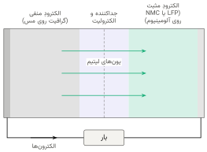
سه کمیتِ پایه: ظرفیت (به انگلیسی capacity) \(Q\) بارِ قابلِ تحویل به آمپرساعت؛ ولتاژِ نامی \(V_\text{n}\) میانگینِ ولتاژ در دشارژِ آرام؛ و انرژی
\[ E = Q\,V_\text{n} \tag{19.1}\]
برای سلولِ آموزشیِ این فصل (A-290): \(314\ \text{Ah} \times 3.2\ \text{V} = 1.005\ \text{kWh}\) (E01).
- چهار بخشِ اصلیِ سلول را با کارِ هر کدام بنویسید.
- در دشارژ یونها و الکترونها از کدام راه میروند؟
- انرژیِ سلولِ 50 Ah و 3.6 V را حساب کنید.
19.2.2 شیمیها و ولتاژِ مدارِ باز
ایده. شیمیِ الکترودِ مثبت بیشترِ ویژگیهای سلول را تعیین میکند. دو شیمیِ رایج در ذخیرهسازیِ نیروگاهی لیتیم-آهن-فسفات (LFP) و نیکل-منگنز-کبالت (NMC)اند. مقایسهٔ زیر کیفی است؛ عددِ هر محصول را سازنده با شاهد میدهد.
| ویژگی | LFP | NMC | پیامد در نیروگاه |
|---|---|---|---|
| ولتاژِ نامیِ سلول | کمتر | بیشتر | شمارِ سلولِ سری برای یک ولتاژ |
| انرژی در هر کیلوگرم | کمتر | بیشتر | جا و وزن؛ در نیروگاه کماهمیتتر |
| پایداریِ حرارتی | بیشتر | کمتر | رفتار در گریزِ حرارتی (بخش 19.4.8) |
| عمرِ چرخهای | معمولاً بیشتر | معمولاً کمتر | هزینهٔ هر چرخه |
| شکلِ منحنیِ ولتاژ | تخت | شیبدار | تخمینِ حالتِ شارژ (بخش 19.2.7) |
| مواد | آهن و فسفات | نیکل و کبالت | زنجیرهٔ تأمین و بازیافت |
ولتاژِ مدارِ باز (به انگلیسی open-circuit voltage) ولتاژِ سلولِ آسوده است و با حالتِ شارژ (به انگلیسی state of charge، SOC) عوض میشود. منحنیِ LFP میانِ حدودِ 20 و 80 % تقریباً تخت است؛ منحنیِ NMC شیبِ پیوسته دارد.
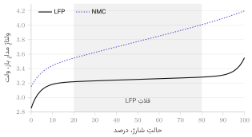
def ocv(soc, chem: str = "LFP"):
"""Open-circuit voltage (V) of a teaching cell against state of
charge 0..1. LFP has a long flat plateau; NMC a steady slope."""
s = np.clip(np.asarray(soc, float), 0.0, 1.0)
if chem == "LFP":
return (3.20 + 0.10 * s - 0.35 * np.exp(-25.0 * s)
+ 0.25 * np.exp(-25.0 * (1.0 - s)))
if chem == "NMC":
return 3.40 + 0.75 * s - 0.25 * np.exp(-20.0 * s) + 0.05 * s ** 8
raise ValueError(f"unknown chemistry {chem}")the two teaching cells (A-290):
LFP prismatic 314 Ah x 3.2 V = 1.005 kWh; window 2.5-3.6 V
NMC prismatic 100 Ah x 3.7 V = 0.370 kWh; window 3.0-4.2 V
OCV against SOC (V) and its slope (mV per % SOC):
SOC % LFP NMC LFP slope NMC slope
5 3.105 3.346 26.07 25.89
10 3.181 3.441 8.18 14.27
20 3.218 3.545 1.59 8.42
50 3.250 3.775 1.00 7.53
80 3.282 4.008 1.42 8.34
90 3.311 4.097 6.13 9.41
95 3.367 4.146 18.91 10.29
LFP is flat between about 20 and 80 %: about 1 mV per %;
its voltage says little about its SOC there (section A3)مثال 19.1 (یک میلیولت برای هر درصد) پرسش. ولتاژِ مدارِ باز و شیبِ آن را در چند حالتِ شارژ برای دو شیمی بنویسید و بگویید چرا شیب برای سامانهٔ مدیریتِ باتری مهم است.
پاسخ. خروجیِ بالا و شکل 19.2: LFP در 50 % حدودِ 3.25 V با شیبِ 1.0 میلیولت بر درصد، و در 10 و 90 % 8.2 و 6.1؛ NMC در 50 % 3.78 V با شیبِ 7.5.
تفسیر. اگر خطای اندازهگیریِ ولتاژ چند میلیولت باشد، در فلاتِ LFP همان چند درصد خطای حالتِ شارژ است؛ پس سامانهٔ مدیریتِ باتریِ LFP نمیتواند حالتِ شارژ را از ولتاژِ میانهٔ پنجره بخواند و باید بشمارد و در دو سرِ پنجره تصحیح کند (مثال 19.4). همین تختی در پیدا کردنِ سلولِ معیوب هم دشواری میسازد (مثال 19.27). وارسی: در تابعِ LFP جملهٔ خطی \(0.10\,s\) است: \(0.10\ \text{V}\) برای صد درصد، یعنی 1 mV برای هر درصد.
- ولتاژِ مدارِ باز را تعریف کنید.
- سه فرقِ LFP و NMC را با پیامدِ هر کدام بنویسید.
- چرا منحنیِ تخت برای تخمینِ حالتِ شارژ بد است؟
19.2.3 مدلِ مدارِ معادل
ایده. برای مهندسِ سامانه، سلول یک منبعِ ولتاژ وابسته به حالتِ شارژ است با دو افت: یک مقاومتِ سری \(R_0\) که فوراً پاسخ میدهد، و یک شاخهٔ قطبش \(R_1 \parallel C_1\) که با ثابتِ زمانیِ \(\tau = R_1 C_1\) آرام آرام پر میشود. ولتاژِ پایانه در جریانِ دشارژِ \(i\):
\[ v = V_\text{oc}(\text{SOC}) - R_0\, i - v_1, \qquad \frac{dv_1}{dt} = \frac{i}{C_1} - \frac{v_1}{R_1 C_1} \tag{19.2}\]
@dataclass
class Cell:
q_ah: float = 314.0 # capacity, Ah
r0: float = 0.00025 # series resistance, ohm
r1: float = 0.00015 # polarisation resistance, ohm
c1: float = 200000.0 # polarisation capacitance, F (tau 30 s)
chem: str = "LFP"
v_min: float = 2.5
v_max: float = 3.6
def simulate(cell: Cell, current, dt_s: float, soc0: float):
"""Terminal voltage and SOC for a current series in A (+ discharge,
- charge), one value every dt_s seconds."""
soc, v1 = soc0, 0.0
a = math.exp(-dt_s / (cell.r1 * cell.c1))
vs, ss = [], []
for i in np.asarray(current, float):
soc -= i * dt_s / 3600.0 / cell.q_ah
v1 = a * v1 + (1.0 - a) * cell.r1 * i
vs.append(float(ocv(soc, cell.chem)) - cell.r0 * i - v1)
ss.append(soc)
return np.array(vs), np.array(ss)- دو افتِ ولتاژ در مدارِ معادل را با سرعتِ پاسخِ هر کدام بنویسید.
- ثابتِ زمانیِ \(R_1 = 0.15\ \text{m}\Omega\) و \(C_1 = 200{,}000\ \text{F}\) چیست؟
- پس از مدتی طولانی با جریانِ ثابت، افتِ کل چیست؟
19.2.4 نرخِ C، توان و انرژی
ایده. نرخِ C جریان را نسبت به ظرفیت میسنجد: \(1\,C\) جریانی است که سلولِ پر را در یک ساعت خالی میکند (314 A برای سلولِ آموزشی). با جریانِ بیشتر، افتِ ولتاژ بیشتر است، پس همان بار با ولتاژِ کمتر و انرژیِ کمتر تحویل میشود؛ و ممکن است ولتاژ زودتر به حدِ پایین برسد.
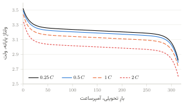
LFP cell discharged from full at four C-rates (A-290):
C-rate current A Ah out Wh out mean V Wh vs 0.25 C
0.25 78 314.0 1009 3.214 100.0 %
0.50 157 314.0 999 3.183 99.0 %
1.00 314 314.0 980 3.120 97.1 %
2.00 628 314.0 940 2.994 93.1 %
the cell gives its full charge at every rate here, but at a
lower voltage: energy, not charge, falls with powerمثال 19.2 (همان بار، انرژیِ کمتر) پرسش. بار و انرژیِ تحویلی و ولتاژِ میانگین را در چهار نرخ بنویسید و بگویید باتریِ نیروگاهِ P با چه نرخی کار میکند.
پاسخ. خروجیِ بالا و شکل 19.4: در همهٔ نرخها 314 Ah؛ انرژی از 1,009 Wh در 0.25 C به 940 Wh در 2 C (93.1 %)؛ ولتاژِ میانگین از 3.214 به 2.994 V. باتریِ S1 با 20 MW روی 40 MWh در 0.5 C کار میکند (E03).
تفسیر. «ظرفیتِ انرژی» یک باتری به توانی بسته است که با آن کار میکند؛ برگهٔ دادهٔ سازنده آن را در یک نرخِ مشخص میدهد و نیروگاه باید نرخِ خودش را وارسی کند. باتریِ دوساعته (0.5 C) کمتر از باتریِ یکساعته انرژی از دست میدهد. وارسی: \(940 / 1{,}009 = 0.931\).
- نرخِ C را تعریف کنید و جریانِ 0.5 C سلولِ آموزشی را بنویسید.
- چرا انرژی با نرخ کم میشود ولی بار نه؟
- نرخِ Cِ باتریِ 30 MW و 60 MWh چیست؟
19.2.5 بازده از سلول تا شبکه
ایده. در هر سو، سلول به اندازهٔ \(i^2 (R_0 + R_1)\) گرما میسازد؛ مبدلِ توان و ترانسفورماتور و کابلها هم سهمی دارند، و تهویهٔ مطبوع و مدیریتِ باتری انرژیِ کمکی میخواهند. بازدهِ رفتوبرگشت حاصلضربِ همهٔ اینهاست.
round trip from the cell to the AC side (10-90 % SOC):
C-rate cell DC with PCS 0.98 twice with MV and aux
0.25 98.08 % 94.20 % 92.33 %
0.50 96.21 % 92.40 % 90.56 %
1.00 92.57 % 88.90 % 87.14 %
data pack S1: 86 % AC to AC, below the model's 0.5 C
figure: it also covers HVAC in hot hours, standby and no-load
losses (a conservative teaching value); the I^2R loss grows
with current, so a slower battery is a more efficient oneمثال 19.3 (نود و شش درصد در سلول، هشتاد و شش در قرارداد) پرسش. بازدهِ رفتوبرگشت را در سه نرخ از سلول تا شبکه بنویسید و با عددِ بستهٔ داده مقایسه کنید.
پاسخ. خروجیِ بالا: در 0.5 C سلول 96.2 %، با مبدل 92.4 %، با ترانسفورماتور و کمکی 90.6 %؛ در 1 C 87.1 %. بستهٔ داده 86 % میگذارد.
تفسیر. عددِ بستهٔ داده محافظهکارانه است: تهویه در ساعتهای داغ، کارِ آمادهباش و تلفِ بیباری را هم میپوشاند. در قرارداد، بازدهِ رفتوبرگشت با روشِ اندازهگیری تعریف میشود (کدام مرز، کدام نرخ، کدام دما، چه مدت) وگرنه دو عددِ درست با هم نمیخوانند. وارسی: \(0.962 \times 0.98^2 = 0.924\).
- چهار جزءِ تلف در رفتوبرگشت را نام ببرید.
- چرا باتریِ کُندتر بازدهِ بیشتری دارد؟
- چهار چیزی را که تعریفِ قراردادیِ بازده باید بگوید بنویسید.
19.2.6 پنجرهٔ قابلِ استفاده و حدهای کار
ایده. باتری از صفر تا صد درصد کار نمیکند. پنجرهٔ حالتِ شارژ (در S1 از 10 تا 90 %) سلول را از ولتاژهای خیلی کم و خیلی زیاد که فرسایش و خطر را بالا میبرند دور نگه میدارد. حدهای دیگر: ولتاژِ سلول (اینجا 2.5 تا 3.6 V)، جریان (نرخِ Cِ پیوسته و کوتاهمدت)، و دما (شارژ زیرِ صفر درجه بهویژه آسیبزاست). سامانهٔ مدیریتِ باتری این حدها را اعمال میکند و کنترلگرِ نیروگاه باید آنها را ببیند (فصلِ ۲۰).
\[ E_\text{usable} = E_\text{nom}\,(\text{SOC}_\text{max} - \text{SOC}_\text{min})\,\text{SOH} \tag{19.3}\]
که \(\text{SOH}\) سلامت (نسبتِ ظرفیتِ کنونی به ظرفیتِ نوی باتری) است. برای S1 نو: \(40 \times 0.8 \times 1 = 32\ \text{MWh}\).
- چهار حدِ کار را نام ببرید.
- چرا شارژ در دمای پایین آسیبزاست؟ (پاسخ کیفی)
- انرژیِ قابلِ استفادهٔ S1 را در سلامتِ 0.8 حساب کنید.
19.2.7 حالتِ شارژ و سلامت
ایده. حالتِ شارژ را نمیتوان مستقیم اندازه گرفت؛ سامانهٔ مدیریتِ باتری آن را تخمین میزند. دو روشِ پایه: شمارشِ کولن (جریان را در زمان جمع کن) و بازنشانی با ولتاژِ مدارِ باز (وقتی سلول آرام است، ولتاژ را با منحنی بخوان). شمارش هر خطای جریانسنج را جمع میکند؛ بازنشانی فقط جایی کار میکند که منحنی شیب دارد.
\[ \widehat{\text{SOC}}(t) = \text{SOC}_0 - \frac{1}{3600\,Q}\int_0^t \bigl(k\,i(\tau) + b\bigr)\,d\tau \tag{19.4}\]
که \(k\) خطای بهره و \(b\) خطای صفرِ جریانسنج است.
def coulomb_count(current, dt_s: float, q_ah: float, soc0: float,
bias_a: float = 0.0, gain: float = 1.0):
"""SOC estimated by integrating a measured current that carries a
gain error and an offset (bias)."""
meas = gain * np.asarray(current, float) + bias_a
return soc0 - np.cumsum(meas) * dt_s / 3600.0 / q_ahSOC from coulomb counting with a current-sensor error
(one cycle a day at 0.5 C, no reset):
sensor error after 1 day 7 days 30 days
offset 0.05 A 0.38 % 2.7 % 11.5 %
offset 0.5 A 3.82 % 26.8 % 114.6 %
gain +0.5 % 0.00 % 0.0 % 0.0 %
an offset adds up every hour; a gain error cancels over a
cycle with equal charge and discharge, but not over a day of
charging only
an OCV reset at rest removes the drift, if the curve is steep:
voltage error 2 mV gives an SOC error of
LFP: 0.7 % at 15 % SOC, 2.0 % at 50 % SOC
NMC: 0.2 % at 15 % SOC, 0.3 % at 50 % SOC
LFP must be reset near the ends of its window (or by a full
charge), NMC anywhere: the BMS design follows the chemistryمثال 19.4 (خطایی که هر ساعت جمع میشود) پرسش. خطای حالتِ شارژ را پس از یک روز، یک هفته و یک ماه بی بازنشانی برای دو خطای صفر و یک خطای بهره بنویسید، و خطای بازنشانی با ولتاژ را در دو شیمی مقایسه کنید.
پاسخ. خروجیِ بالا: خطای صفرِ 0.05 A: 0.38 % در روز، 11.5 % در ماه؛ 0.5 A: 3.8 % در روز، بیش از کلِ ظرفیت در ماه؛ خطای بهرهٔ 0.5 % در چرخهٔ متعادل صفر. خطای 2 mV در ولتاژ: LFP 0.7 % در 15 % و 2.0 % در 50 %؛ NMC 0.2 و 0.3 %.
تفسیر. شمارش بی بازنشانی چند روزه بیاعتبار میشود؛ بازنشانی در LFP فقط نزدیکِ دو سرِ پنجره یا با یک شارژِ کامل ممکن است. پس برنامهٔ کار باید گاهبهگاه باتری را تا سرِ پنجره ببرد: یک الزامِ رابط میانِ سامانهٔ مدیریتِ باتری و کنترلگرِ نیروگاه. خطای حالتِ شارژ مستقیماً انرژیِ «ناپیدا» است: 2 % از 40 MWh یعنی 0.8 MWh که برنامهریز نمیداند دارد یا نه. وارسی: \(0.5 \times 24 / 314 = 3.82\ \%\) (E06).
سلامت (به انگلیسی state of health، SOH) هم تخمین است: ظرفیتِ کنونی با آزمونِ ظرفیت (دشارژِ کامل با نرخِ معلوم در دمای معلوم) یا از دادهٔ کارِ عادی با روشهای آماری برآورد میشود؛ مقاومتِ درونی از پاسخِ ولتاژ به پلههای جریان. هر دو در گزارشِ ماهانه میآیند و پایهٔ ادعای ضمانتاند (بخش 19.4.10).
- دو روشِ تخمینِ حالتِ شارژ را با ضعفِ هر کدام بنویسید.
- چرا خطای بهره در چرخهٔ متعادل از بین میرود و خطای صفر نه؟
- سلامت را با کدام آزمون اندازه میگیرند؟
19.2.8 فرسایش: تقویمی و چرخهای
ایده. باتری با زمان و با کار ظرفیت از دست میدهد و مقاومتش بالا میرود. سازوکارهای اصلی (کیفی): رشدِ لایهٔ سطحیِ روی الکترودِ منفی که لیتیمِ فعال را میگیرد، تهنشینیِ لیتیم در شارژِ سریع یا سرد، ترک خوردنِ ذرات الکترود با چرخهها، و تجزیهٔ الکترولیت در دما و ولتاژِ بالا. دو مدلِ آموزشی (A-292) اینها را خلاصه میکنند:
- تقویمی: \(\Delta Q_\text{cal} = k(T, \overline{\text{SOC}})\,\sqrt{t}\)، با وابستگیِ آرنیوسی به دما و بیشتر در حالتِ شارژِ میانگینِ بالا.
- چرخهای: هر چرخه با عمقِ \(d\) کسرِ \(1/N(d)\) از عمر را مصرف میکند، \(N(d) = N_{100}\, d^{-k}\)؛ مانندِ قانونِ ماینر (فصلِ ۱۱).
def calendar_fade(years, temp_c: float, soc_mean: float,
k25: float = 0.02, ea_ev: float = 0.5):
"""Capacity lost in storage: k(T, SOC) * sqrt(t), Arrhenius in
temperature, more at a high mean SOC (teaching)."""
kb = 8.617e-5 # eV/K
k = k25 * math.exp(ea_ev / kb * (1 / 298.15 - 1 / (temp_c + 273.15)))
return k * (0.6 + 0.8 * soc_mean) * np.sqrt(np.asarray(years, float))
def cycle_fade(cycles, n100: float = 4000.0, k: float = 1.3,
loss_at_life: float = 0.2) -> float:
"""Capacity lost by cycling: each (depth, count) uses count/N(depth)
of a life, N(depth) = n100 * depth**-k; one life = loss_at_life."""
used = sum(c / (n100 * max(d, 1e-3) ** -k) for d, c in cycles if d > 0)
return loss_at_life * used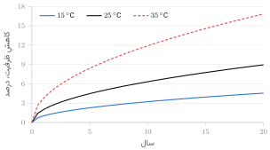
calendar fade (storage) by temperature and mean SOC (A-292):
years 15 C/50 % 25 C/50 % 35 C/50 % 25 C/90 %
1 1.0 % 2.0 % 3.8 % 2.6 %
5 2.3 % 4.5 % 8.4 % 5.9 %
10 3.2 % 6.3 % 11.9 % 8.3 %
15 3.9 % 7.7 % 14.6 % 10.2 %
20 4.6 % 8.9 % 16.8 % 11.8 %
cycle fade per 365 cycles a year by depth (A-292):
depth cycles to end of life loss per year
20 % 32,413 0.23 %
50 % 9,849 0.74 %
80 % 5,346 1.37 %
100 % 4,000 1.82 %
heat roughly doubles calendar fade every 10-12 K here; deep
cycles cost more than their energy share; both shapes are
teaching laws and the warranty curve of the maker governsمثال 19.5 (ده درجه، دو برابر) پرسش. فرسایشِ تقویمی را در سه دما و دو حالتِ شارژ پس از ده سال بنویسید و فرسایشِ چرخهای را برای چهار عمق مقایسه کنید.
پاسخ. خروجیِ بالا و شکل 19.5: پس از ده سال در 50 %: 3.2، 6.3 و 11.9 % در 15، 25 و 35 °C؛ در 25 °C و 90 %: 8.3 %. چرخهای با ۳۶۵ چرخه در سال: 0.23، 0.74، 1.37 و 1.82 % در سال برای عمقِ 20، 50، 80 و 100 %.
تفسیر. گرما در این مدل هر ده درجه فرسایشِ تقویمی را حدودِ ۱٫۹ برابر میکند؛ پس تهویهٔ مطبوع فقط برای ایمنی نیست، برای عمر هم هست (بخش 19.3.4). نگه داشتنِ باتری در حالتِ شارژِ بالا هم هزینه دارد. چرخههای عمیق بیش از سهمِ انرژیشان عمر میخورند: پنج چرخهٔ 20 % یک چرخهٔ 100 % انرژی میدهند ولی 0.62 برابرِ آن عمر مصرف میکنند. شکلِ این قانونها آموزشی است؛ منحنیِ ضمانتِ سازنده حاکم است. وارسی: \(e^{0.5/8.617\times10^{-5}\,(1/298.15 - 1/308.15)} = 1.88\) (E07).
- چهار سازوکارِ فرسایش را نام ببرید.
- چرا تهویهٔ مطبوع برای عمر هم مهم است؟
- نشان دهید پنج چرخهٔ 20 % کمتر از یک چرخهٔ 100 % عمر میخورند.
19.2.9 پایانِ عمر و افزایشِ مقاومت
ایده. پایانِ عمر یک تعریفِ قراردادی است، نه رخدادِ فیزیکی: معمولاً وقتی سلامت به حدِ مشخصی میرسد (اینجا 80 % یا 70 % بسته به هدف) یا وقتی باتری دیگر الزامِ توان و انرژی را برآورده نمیکند. همراهِ کاهشِ ظرفیت، مقاومت هم بالا میرود (اینجا فرضِ آموزشیِ ۱٫۸ برابر در پایانِ عمر، A-291)؛ دو پیامدِ معماری دارد: گرمای بیشتر با همان توان (بخش 19.3.4) و ولتاژِ کمتر در انتهای دشارژ (بخش 19.3.6).
- پایانِ عمر را تعریف کنید.
- دو پیامدِ بالا رفتنِ مقاومت را بنویسید.
- چرا پایانِ عمر یک تعریفِ قراردادی است؟
19.2.10 توانِ مجاز بر حسبِ حالتِ شارژ و دما
ایده. توانی که باتری میتواند بدهد یا بگیرد ثابت نیست: سازنده برای هر دمای سلول یک حدِ جریان میدهد (شارژ در سرما بهویژه محدود است) و حدهای ولتاژ در دو سرِ پنجره هم جریان را محدود میکنند. مقاومت هم با دما عوض میشود (آرنیوسی). سامانهٔ مدیریتِ باتری این نقشهٔ توانِ مجاز را هر ثانیه به مبدل میدهد.
LIMITS = { # cell temperature C: (discharge C-rate, charge C-rate), A-295
-10.0: (0.3, 0.0), 0.0: (0.5, 0.2), 10.0: (1.0, 0.5),
25.0: (1.0, 1.0), 45.0: (1.0, 0.5), 55.0: (0.3, 0.0),
}
def r_at(temp_c: float, r25: float, ea_ev: float = 0.3) -> float:
"""Cell resistance at a temperature (Arrhenius, teaching)."""
kb = 8.617e-5
return r25 * math.exp(ea_ev / kb * (1 / (temp_c + 273.15) - 1 / 298.15))
def power_limits(soc: float, temp_c: float):
"""Discharge and charge power (W) of one cell: the maker's current
limit for the temperature, and the voltage limits."""
r = r_at(temp_c, C.r0 + C.r1)
v = float(st.ocv(soc))
c_dis, c_chg = LIMITS[temp_c]
i_d = min((v - C.v_min) / r, c_dis * C.q_ah)
i_c = min((C.v_max - v) / r, c_chg * C.q_ah)
return (v - r * i_d) * i_d, (v + r * i_c) * i_cpower the whole battery (39,936 cells) can give and take, MW,
from the maker's current limits by temperature (A-295):
cell C dis C-rate chg C-rate discharge MW charge MW
(at 50 % SOC; the PCS caps both at 20 MW)
-10 0.3 0.0 11.6 0.0
0 0.5 0.2 19.2 8.3
10 1.0 0.5 37.8 21.1
25 1.0 1.0 39.2 42.3
45 1.0 0.5 40.0 20.6
55 0.3 0.0 12.2 0.0
between 10 and 45 C the 20 MW converter is the cap; a cold
battery (0 C) takes only about 8 MW of charge and none below
freezing; the BMS sends this limit to the PCS every second
and the plant controller must plan with it (chapter 20); the
container is kept warm in winter so that midday charging
is not lost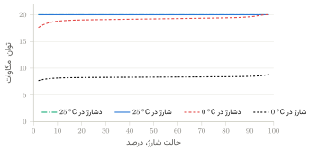
مثال 19.6 (هشت مگاوات در صبحِ سرد) پرسش. توانِ مجازِ دشارژ و شارژِ کلِ باتری را در شش دمای سلول بنویسید و بگویید در کدام دماها مبدل و در کدام سلول محدودکننده است.
پاسخ. خروجیِ بالا و شکل 19.6: در 10 تا 45 °C هر دو بیش از 20 MW (سقف با مبدل)؛ در 0 °C دشارژ 19.2 و شارژ فقط 8.3 MW؛ در −10 و 55 °C شارژ صفر.
تفسیر. در صبحِ سردِ زمستان، اگر کانتینر گرم نگه داشته نشود، باتری فقط 8 MW از تولیدِ ظهر را میگیرد و بقیه بُرش میخورد یا ارزان فروخته میشود؛ پس گرمایش یک الزامِ کار است، نه فقط آسایش، و برنامهریزِ نیروگاه باید نقشهٔ توانِ مجاز را ببیند (فصلِ ۲۰). وارسی: \(0.2 \times 314 \times 3.3 \times 39{,}936 \approx 8.3\ \text{MW}\).
- دو گونه حد که توانِ مجاز را میسازند بنویسید.
- چرا شارژ در سرما بیش از دشارژ محدود میشود؟ (کیفی)
- نقشهٔ توانِ مجاز را چه کسی میسازد و چه کسی باید ببیند؟
19.2.11 مدتِ ذخیره و فناوریهای دیگر
ایده. در باتریِ لیتیم-یون توان و انرژی در یک سلول خریده میشوند؛ در باتریِ جریانی (به انگلیسی flow battery) توان در پشتهٔ سلولها و انرژی در مخزنهای الکترولیت است و جدا بزرگ میشوند. فناوریهای دیگر هم هستند (سدیم-یون، سرب-اسید، و ذخیرهسازِ غیرباتری مانندِ تلمبهای)؛ مقایسه با هزینه بر مگاواتساعتِ ظرفیت بر حسبِ مدت آغاز میشود.
cost of storage against duration (k u per MWh of capacity, A-295):
hours lithium-ion flow battery
1 400 720
2 325 420
4 288 270
6 275 220
8 269 195
10 265 180
12 262 170
cross-over at 3.5 hours with these teaching costs: a
technology whose power and energy are bought apart wins at
long durations; round trip, life, space and the maturity of
the supply chain decide the rest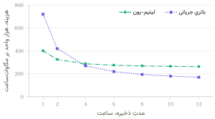
مثال 19.7 (سه ساعت و نیم) پرسش. هزینهٔ هر مگاواتساعت ظرفیت را برای مدتهای یک تا دوازده ساعت در دو فناوری بنویسید و نقطهٔ تقاطع را بیابید.
پاسخ. خروجیِ بالا و شکل 19.7: لیتیم-یون از 400 به 262، جریانی از 720 به 170 هزار واحد؛ تقاطع در 3.5 ساعت.
تفسیر. فناوریای که توان و انرژی را جدا میخرد در مدتهای بلند ارزانتر میشود. اما هزینه تنها معیار نیست: بازدهِ رفتوبرگشتِ جریانی معمولاً کمتر است، جا و بلوغِ زنجیرهٔ تأمین فرق دارد، و رفتار در آتش و نشت هم (با شاهدِ خودش). باتریِ دوساعتهٔ S1 در ناحیهٔ لیتیم-یون است. وارسی: \((600 - 150)/(250 - 120) = 3.46\).
- فرقِ لیتیم-یون و جریانی در خریدنِ توان و انرژی چیست؟
- هزینهٔ هر مگاواتساعت را برای شش ساعت در دو فناوری حساب کنید.
- سه معیارِ غیرهزینهای برای انتخابِ فناوری بنویسید.
19.2.12 ظرفیت از قانونِ فارادی و نقشِ هر ماده
ایده. هر یون لیتیم که از الکترود میگذرد یک الکترون در مدارِ بیرونی میفرستد. پس ظرفیتِ نظریِ یک مادهٔ فعال از جرمِ مولیاش میآید: یک مول با \(n\) الکترون بارِ \(nF\) دارد (\(F\) ثابتِ فارادی، 96,485 C/mol):
\[ q_\text{th} = \frac{n\,F}{3.6\,M}\quad\text{(mAh/g)} \tag{19.5}\]
که \(M\) جرمِ مولی به گرم بر مول است و \(3.6\) تبدیلِ کولن به میلیآمپرساعت بر گرم است.
def specific_capacity(molar_mass_g: float, electrons: float = 1.0) -> float:
"""Theoretical capacity of an active material, mAh/g: n F / M."""
return electrons * F_CONST / molar_mass_g / 3.6theoretical capacity from Faraday's law (one Li per formula unit):
LiFePO4 M = 157.76 g/mol: 170 mAh/g
graphite C6 M = 72.07 g/mol: 372 mAh/g
active material for one 314 Ah cell at the theoretical value:
LFP 1.85 kg, graphite 0.84 kg
real cells use less than the theoretical capacity and carry
foils, separator, electrolyte and case: the 5.5 kg cell
holds about a third of its mass as positive active materialمثال 19.8 (صد و هفتاد و سیصد و هفتاد و دو) پرسش. ظرفیتِ نظریِ LiFePO4 و گرافیت را حساب کنید و جرمِ کمینهٔ مادهٔ فعال را برای یک سلولِ 314 Ah بنویسید.
پاسخ. خروجیِ بالا: LFP 170 mAh/g، گرافیت 372 mAh/g؛ برای 314 Ah دستکم 1.85 kg LFP و 0.84 kg گرافیت.
تفسیر. مادهٔ فعالِ مثبت بهتنهایی دستکم یکسومِ جرمِ سلولِ 5.5 kg است؛ بقیه ورقهای فلزی، جداکننده، الکترولیت و پوستهاند. به همین دلیل «انرژی بر کیلوگرم» سلول همیشه از عددِ نظریِ ماده کمتر است، و بازیافت بهدنبالِ همین مواد است (بخش 19.4.11). وارسی: \(96{,}485 / (3.6 \times 157.76) = 170\).
| جزء | کار | اگر خراب شود |
|---|---|---|
| ورقِ مس و آلومینیوم | بردنِ الکترون، پشتیبانِ مادهٔ فعال | مقاومت و گرمای بیشتر، جدا شدنِ پوشش |
| مادهٔ فعالِ منفی و مثبت | جای دادنِ لیتیم | کاهشِ ظرفیت، ترک خوردن |
| جداکننده | جدا نگه داشتنِ الکترودها، گذراندنِ یون | اتصالِ کوتاهِ درونی |
| الکترولیت | جابهجاییِ یون؛ آتشگیر | تجزیه، گاز، گسترشِ آتش |
| پوسته و دریچه | نگه داشتن، رها کردنِ فشار | نشت، گازِ ناگهانی |
- معادلهٔ 19.5 را با کلمه بخوانید.
- چرا انرژی بر کیلوگرمِ سلول از عددِ نظری کمتر است؟
- کارِ جداکننده و پیامدِ خرابیِ آن را بنویسید.
19.2.13 شارژِ جریانثابت و ولتاژثابت
ایده. سلول معمولاً با جریانِ ثابت شارژ میشود تا ولتاژِ پایانه به حدِ بالا برسد؛ سپس ولتاژ ثابت نگه داشته میشود و جریان کمکم پایین میآید تا به یک حدِ کوچک برسد. مرحلهٔ دوم کُند است و چند درصدِ آخر را اضافه میکند. شکلِ منحنیِ ولتاژ و مقاومت تعیین میکنند این مرحله کی آغاز شود.
def cccv(cell: st.Cell, c_rate: float, soc0: float = 0.1,
i_end: float = 0.05, dt: float = 10.0):
"""Charge at constant current until v_max, then hold v_max while the
current tapers to i_end (C-rate). Returns minutes in each phase and
the SOC reached."""
soc, v1, t_cc, t_cv = soc0, 0.0, 0.0, 0.0
a = math.exp(-dt / (cell.r1 * cell.c1))
i = -c_rate * cell.q_ah
while soc < 0.999:
v = float(st.ocv(soc, cell.chem)) - cell.r0 * i - v1
if v >= cell.v_max:
# constant voltage: current that holds the terminal at v_max
i = -max((cell.v_max - float(st.ocv(soc, cell.chem)) + v1)
/ cell.r0, 0.0)
if -i < i_end * cell.q_ah:
break
t_cv += dt
else:
t_cc += dt
soc -= i * dt / 3600.0 / cell.q_ah
v1 = a * v1 + (1.0 - a) * cell.r1 * i
return t_cc / 60, t_cv / 60, socconstant-current constant-voltage charge from 10 % (stop at
0.05 C; LFP to 3.6 V, NMC to 4.2 V):
cell C-rate CC minutes CV minutes SOC when CV starts/ends
LFP 0.25 216 0 99.9 / 99.9 %
LFP 0.50 108 0 99.9 / 100.0 %
LFP 1.00 53 1 98.6 / 100.0 %
NMC 0.25 211 9 97.8 / 99.5 %
NMC 0.50 103 12 95.6 / 99.5 %
NMC 1.00 48 17 90.6 / 99.5 %
the flat LFP curve with a low resistance reaches full charge
almost entirely at constant current; NMC reaches its voltage
limit early at higher rates and spends a long slow tail at
constant voltage; stopping at 90 % skips the tail and keeps
the cells off the high-voltage end where they age faster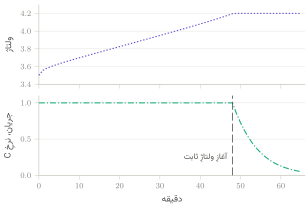
مثال 19.9 (دنبالهٔ کُندِ ولتاژِ ثابت) پرسش. زمانِ دو مرحله و حالتِ شارژ را در آغاز و پایانِ مرحلهٔ ولتاژثابت برای دو سلول و سه نرخ بنویسید.
پاسخ. خروجیِ بالا و شکل 19.8: LFP تقریباً همهاش جریانثابت (در 1 C فقط یک دقیقه ولتاژثابت از 98.6 %)؛ NMC در 1 C از 90.6 % به ولتاژثابت میرود و 17 دقیقه برای نُه درصدِ آخر میگذارد، در 0.25 C از 97.8 %.
تفسیر. منحنیِ تخت و مقاومتِ کم در LFP یعنی ولتاژ دیر به حد میرسد؛ در NMC با نرخِ بالا زود. پنجرهٔ 10 تا 90 % از این دنباله پرهیز میکند: شارژ سریعتر تمام میشود و سلول کمتر نزدیکِ ولتاژِ بالا میماند. وارسی: \(0.1 + 1.0 \times 48/60 = 0.90\) برای آغازِ ولتاژثابتِ NMC در 1 C.
- دو مرحلهٔ شارژ را تعریف کنید.
- چرا مرحلهٔ دوم کُند است؟
- چرا LFP با این عددها تقریباً مرحلهٔ دوم ندارد؟
19.2.14 «یک چرخه» بر کدام پایه
ایده. شمارِ «چرخهها» در یک سال به پایهٔ شمارش بسته است: انرژیِ کدام مرز (متناوب در نقطهٔ اتصال یا مستقیم در سلول) بر کدام ظرفیت (اسمی یا قابلِ استفاده). همچنین شکلِ کار تعیین میکند کدام فرسایش غالب است.
one year of discharge counted as 'cycles' on three bases:
basis cycles
AC at the POC / nominal 40 MWh 270
DC from the cells / nominal 291
DC from the cells / usable 32.1 MWh 363
the same year is 270, 291 or 363 'cycles': a warranty limit
in cycles means nothing until its basis is written downwhich fade dominates after ten years (25 C, depth 80 %):
cycles a day calendar cycling larger
0.25 5.8 % 3.4 % calendar
0.50 5.8 % 6.8 % cycling
1.00 5.8 % 13.7 % cycling
2.00 5.8 % 27.3 % cycling
a battery used rarely ages by the calendar, a busy one by its
cycles; the duty decides which fade law mattersمثال 19.10 (دویست و هفتاد یا سیصد و شصت و سه) پرسش. چرخههای یک سال را بر سه پایه بنویسید و بگویید در چه کاری فرسایشِ تقویمی و در چه کاری چرخهای غالب است.
پاسخ. خروجیهای بالا: 270 (متناوب بر اسمی)، 291 (مستقیم بر اسمی)، 363 (مستقیم بر قابلِ استفاده). با یکچهارم چرخه در روز تقویمی غالب است (5.8 در برابرِ 3.4 %)؛ از نیم چرخه در روز به بالا چرخهای.
تفسیر. حدِ ضمانت «۳۶۵ چرخه در سال» با پایهٔ اول یعنی بیش از یک چرخهٔ کامل در روز، با پایهٔ سوم دقیقاً یکی؛ پس پایه باید در قرارداد نوشته شود. و پیشبینیِ عمر باید ببیند کار کدام فرسایش را غالب میکند. وارسی: \(10{,}817 / 40.13 = 270\).
- سه پایهٔ شمارشِ چرخه را بنویسید.
- چرا پایه باید در قرارداد بیاید؟
- برای باتریِ پشتیبانی که ماهی یک بار کار میکند کدام فرسایش غالب است؟
19.2.15 گرمای برگشتپذیر و مسیرِ گرما
ایده. گرمای سلول دو بخش دارد: گرمای ژول (\(i^2 R\)) که همیشه مثبت است، و گرمای برگشتپذیر (آنتروپیک) \(q_\text{rev} = i\,T\,dU/dT\) که با جهتِ جریان و حالتِ شارژ علامت عوض میکند. گرما از سلول به صفحهٔ خنک با یک مقاومتِ گرمایی میرود؛ دمای سلول به اندازهٔ \(q\,R_\text{th}\) بالاتر از صفحه است.
reversible against Joule heat of one cell at 0.5 C, 25 C (A-297):
SOC % dU/dT mV/K reversible W Joule W share
10 -0.15 -7.02 9.86 71 %
50 0.05 +2.34 9.86 24 %
90 -0.05 -2.34 9.86 24 %
reversible heat changes sign with the direction of current
and with SOC; over a full cycle it nearly cancels, while
Joule heat always adds; a thermal model of an hour at the
ends of the window should carry bothcell temperature above the cold plate at 0.5 C (teaching):
path resistance K/W rise K
0.3 3.0
0.6 5.9
1.2 11.8
(heat 9.9 W a cell)
a poor thermal pad or a gap doubles the rise; the spread
between cells (section B) comes from these pathsمثال 19.11 (هفتاد درصد در ته پنجره، دو برابر با یک لایهٔ بد) پرسش. گرمای برگشتپذیر را در سه حالتِ شارژ با گرمای ژول مقایسه کنید و افزایشِ دمای سلول را برای سه مقاومتِ گرمایی بنویسید.
پاسخ. خروجیهای بالا: در 10 % برگشتپذیر −7.0 W در برابرِ 9.9 W ژول (71 %)؛ در 50 و 90 % ±2.3 W (24 %)؛ افزایشِ دما 3.0، 5.9 و 11.8 K برای 0.3، 0.6 و 1.2 K/W.
تفسیر. در یک چرخهٔ کامل گرمای برگشتپذیر تقریباً خنثی میشود، اما در یک ساعت در ته پنجره بخشِ بزرگی است و مدلِ گرماییِ کوتاهمدت باید آن را داشته باشد. مقاومتِ گرماییِ هر سلول (لایهٔ حرارتی، فشار، فاصله) پراکندگیِ دما (مثال 19.20) را میسازد؛ پس کیفیتِ مونتاژِ ماژول یک پارامترِ حرارتی است. وارسی: \(157 \times 298.15 \times 0.15 \times 10^{-3} = 7.0\ \text{W}\).
- دو بخشِ گرمای سلول را با علامتِ هر کدام بنویسید.
- چرا گرمای برگشتپذیر در چرخهٔ کامل تقریباً خنثی است؟
- چه چیزهایی مقاومتِ گرماییِ سلول تا صفحه را بالا میبرند؟
19.3 ب. معماری و طراحیِ محصول
از سلول تا نیروگاه چند تراز هست و هر تراز ردهها، حفاظت، حسگرها و رابطهای خودش را دارد. این بخش باتریِ S1 را از سلول تا سامانه میسازد، حفاظتِ برقی و حرارتی را غربال میکند و نخستین مثالِ کارشدهٔ فصل را اجرا میکند: اندازه کردنِ یک باتریِ اولیه و آزمودنِ حدهای توان و انرژیِ آن.
برنامه:
python -m companion.ch19.examples_b
python -m companion.ch19.lab_b19.3.1 از سلول تا سامانه
ایده. سلولها سری میشوند تا ولتاژ بالا برود و موازی تا ظرفیت بالا برود. در باتریِ S1 (A-290): ماژول ۵۲ سلولِ سری (1P52S)، رک هشت ماژولِ سری (۴۱۶ سلول)، کانتینر دوازده رکِ موازی، و سامانه هشت کانتینر با چهار مبدلِ 5 MW (هر کدام برای دو کانتینر). این همان درختِ محصولِ فصلِ ۱۸ است (بخش 18.4.1).
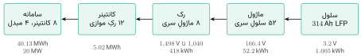
def build_up(cell: Cell, v_nom: float, s_module: int, m_rack: int,
r_container: int, containers: int) -> dict:
"""Voltages and energies from the cell to the system: modules of
cells in series, racks of modules in series, containers of racks in
parallel."""
cells_rack = s_module * m_rack
e_cell = cell.q_ah * v_nom / 1000.0 # kWh
return {"module_v": s_module * v_nom,
"module_kwh": s_module * e_cell,
"rack_v_nom": cells_rack * v_nom,
"rack_v_max": cells_rack * cell.v_max,
"rack_v_min": cells_rack * cell.v_min,
"rack_kwh": cells_rack * e_cell,
"container_mwh": r_container * cells_rack * e_cell / 1000.0,
"system_mwh": containers * r_container * cells_rack
* e_cell / 1000.0,
"cells": containers * r_container * cells_rack}S1 battery from cell to system (A-290):
cell LFP 314 Ah, 3.2 V, 1.005 kWh
module 1P52S: 166.4 V, 52.2 kWh
rack 8 modules in series: 1,331 V nominal, 1,040-1,498 V,
418 kWh
container 12 racks in parallel: 5.02 MWh
system 8 containers: 40.13 MWh, 39,936 cells
power 4 PCS x 5 MW = 20 MW: 0.50 C at the cells
check: rack maximum 1,498 V stays below 1,500 V DC
(at 3.65 V a cell it would be 1,518 V: the charge limit is a
design choice tied to the DC voltage class of the PCS)مثال 19.12 (چهل هزار سلول، هزار و پانصد ولت) پرسش. ولتاژ و انرژیِ هر تراز را بنویسید و نشان دهید چرا حدِ بالای ولتاژِ شارژِ سلول 3.6 V انتخاب شده است.
پاسخ. خروجیِ بالا و شکل 19.9: ماژول 166.4 V و 52.2 kWh؛ رک 1,331 V نامی، 1,040 تا 1,498 V، 418 kWh؛ کانتینر 5.02 MWh؛ سامانه 40.13 MWh با 39,936 سلول؛ 0.5 C در توانِ کامل.
تفسیر. با ۴۱۶ سلولِ سری، حدِ 3.65 V رک را به 1,518 V میرساند که از ردهٔ 1,500 Vِ مبدل بیشتر است؛ پس یا حدِ شارژ کمی پایین میآید (3.6 V) یا یک سلول از رشته کم میشود. این یک الزامِ رابط میانِ سازندهٔ باتری و سازندهٔ مبدل است، از همان نوعِ مثال 18.23. وارسی: \(416 \times 3.6 = 1{,}497.6\ \text{V}\) (E02).
- سری کردن چه چیزی را بالا میبرد و موازی کردن چه چیزی را؟
- شمارِ سلولهای S1 را از ترازها بازسازی کنید.
- چرا ولتاژِ کمینهٔ رک برای مبدل مهم است؟
19.3.2 حفاظتِ برقی و جداسازی
ایده. هر رک یک منبعِ ولتاژِ بزرگ با مقاومتِ درونیِ کم است؛ اگر اتصالِ کوتاه شود، جریانِ پیشبینیپذیرِ بزرگی میدهد. چون رکها روی شینهٔ مستقیمِ مشترک موازیاند، خطای روی شینه جریانِ همهٔ رکها را میبیند. پس هر رک فیوز و کلیدِ خودش را دارد (با پیششارژ برای وصلِ آرام به شینه)، و شینه و پایهها و ورودیِ مبدل برای جریانِ همهٔ رکها رده میگیرند؛ پایشِ عایق هم نشتیِ به زمین را در سامانهٔ شناور میبیند.
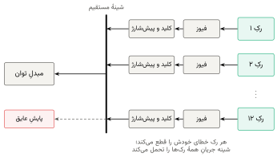
prospective short-circuit current (DC, teaching, A-290):
rack: 1,352 V over 108 mohm = 12.5 kA
container DC bus fed by 12 racks: 150 kA
each rack needs its own fuse and switch that can break its
own fault at up to 1,500 V DC; a fault on the shared DC bus
sees all racks at once, so the bus, its supports and the
PCS input are rated for that current; ratings and the
coordination come from the maker with test evidenceمثال 19.13 (دوازده و نیم یا صد و پنجاه کیلوآمپر) پرسش. جریانِ اتصالِ کوتاهِ پیشبینیپذیرِ یک رک و شینهٔ کانتینر را برآورد کنید و بگویید چه ردههایی از آن نتیجه میشود.
پاسخ. خروجیِ بالا: رک \(1{,}352\ \text{V} / 0.108\ \Omega = 12.5\ \text{kA}\)؛ شینه با دوازده رک حدودِ 150 kA (P25).
تفسیر. فیوزِ هر رک باید جریانِ مستقیمِ 12.5 kA را در ولتاژی تا 1,500 V قطع کند (قطعِ جریانِ مستقیم دشوارتر از متناوب است چون عبور از صفر ندارد، فصلِ ۶)؛ شینه باید نیروی مکانیکی و گرمای 150 kA را تا قطع تحمل کند. ردهها و هماهنگی را سازنده با گزارشِ آزمون میدهد؛ غربال فقط میگوید چه پرسشی بپرسیم. وارسی: \(416 \times 0.25 + 4 = 108\ \text{m}\Omega\) (E11).
| جزء | کار | تراز |
|---|---|---|
| فیوزِ ماژول و رک | قطعِ خطای همان شاخه | ماژول، رک |
| کلید و کنتاکتور | قطع و وصلِ عادی، جداسازیِ فرمانی | رک، کانتینر |
| پیششارژ | وصلِ آرام به شینه با خازنهای مبدل | رک |
| حسگرِ ولتاژ و دمای سلول | ورودیِ مدیریتِ باتری | ماژول |
| حسگرِ جریان | شمارشِ کولن، حفاظت | رک |
| پایشِ عایق | نشتی به زمین در سامانهٔ شناور | کانتینر |
| جداکنندهٔ خدمات | جداسازیِ قابلِ قفل برای نگهداری | رک، کانتینر |
- چرا هر رک فیوزِ خودش را دارد؟
- چرا قطعِ جریانِ مستقیم دشوارتر است؟
- پیششارژ چه چیزی را آرام میکند؟
19.3.3 سامانهٔ مدیریتِ باتری
ایده. سامانهٔ مدیریتِ باتری (به انگلیسی battery management system، BMS) معمولاً سه تراز دارد: ماژول (اندازهگیریِ ولتاژ و دمای هر سلول، متعادلسازی)، رک (جریان، حالتِ شارژ، فرمانِ کلیدِ رک، حفاظت) و سامانه (جمعِ رکها، حدهای توانِ مجاز، گفتوگو با مبدل و کنترلگرِ نیروگاه). چهار کارِ اصلی: اندازهگیری، تخمین (حالتِ شارژ، سلامت، توانِ مجاز)، حفاظت (قطع در ولتاژ، جریان، دما یا عایقِ بیرون از حد) و گزارش.
متعادلسازی (به انگلیسی balancing) سلولهای یک رشته را همشارژ نگه میدارد؛ نوعِ غیرفعال انرژیِ سلولهای پرتر را در مقاومت میسوزاند و فقط بار را برابر میکند، نه ظرفیت را (مثال 19.24). سه نکتهٔ معماری:
- حدهای توانِ مجاز که مدیریتِ باتری هر لحظه به مبدل میدهد (بر پایهٔ دما، حالتِ شارژ و سلامت) باید در کنترلگرِ نیروگاه هم دیده شوند؛ وگرنه برنامه چیزی میخواهد که باتری نمیدهد.
- حفاظت در سختافزار: قطعِ کلیدِ رک نباید به سلامتِ شبکهٔ ارتباطی یا نرمافزارِ نیروگاه بسته باشد.
- سوابق: ولتاژ، دما و رخدادهای هر سلول شاهدِ ضمانت و تحلیلِ خرابیاند؛ نگهداری و دسترسی به آنها در قرارداد میآید.
- سه ترازِ سامانهٔ مدیریتِ باتری و کارِ هر کدام را بنویسید.
- متعادلسازیِ غیرفعال چه چیزی را برابر نمیکند؟
- چرا حفاظت نباید به شبکهٔ ارتباطی وابسته باشد؟
19.3.4 گرما و تهویهٔ مطبوعِ کانتینر
ایده. گرمای سلولها \(i^2 (R_0 + R_1)\) است و با مجذورِ جریان و با مقاومت بالا میرود؛ مقاومت در پایانِ عمر بیشتر است. کانتینر گرما را از سلولها، تجهیزاتِ کمکی، آفتاب روی دیوارها و هوای بیرون از دیوارها میگیرد و تهویهٔ مطبوع باید همه را بیرون ببرد. یک ترازِ گرماییِ ساعتی:
\[ C_\text{th}\,\frac{dT}{dt} = q_\text{b} + q_\text{aux} + q_\text{sun} + UA\,(T_\text{out} - T) - q_\text{hvac} \tag{19.6}\]
که \(C_\text{th}\) ظرفیتِ گرماییِ کانتینر و محتوایش، \(UA\) رسانشِ گرماییِ دیوارهها و \(q_\text{hvac}\) گرمای برداشتهشده (حداکثر ظرفیتِ تهویه) است.
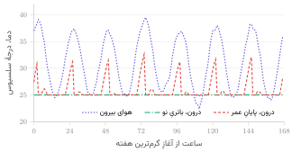
heat of one container at 0.5 C (A-291):
rack current 154 A; heat at beginning of life 47 kW, at end of life 85 kW
hottest week of the data year: 22.4-39.5 C outside
HVAC kW resistance inside max C hours above 30 C
60 BOL 33.7 18
60 EOL 52.9 75
100 BOL 25.0 0
100 EOL 32.6 14
120 BOL 25.0 0
120 EOL 25.0 0
heat to remove at the worst hour, end of life: 118 kW
the HVAC is sized on end-of-life resistance in the hottest
hour with the sun on the walls, not on the new battery at
25 C: that is the 120 kW of interface IF-006 (chapter 18)مثال 19.14 (صد و بیست کیلووات، نه صد) پرسش. گرمای یک کانتینر را در 0.5 C در آغاز و پایانِ عمر حساب کنید، دمای درون را با سه ظرفیتِ تهویه در گرمترین هفته بنویسید و ظرفیتِ لازم را تعیین کنید.
پاسخ. خروجیِ بالا و شکل 19.11: جریانِ رک 154 A؛ گرمای سلولها 47 kW نو و 85 kW در پایانِ عمر. با 100 kW تهویه: نو در 25 °C میماند، پایانِ عمر تا 32.6 °C و ۱۴ ساعت بالای 30 °C؛ با 120 kW همیشه 25 °C. گرمای لازم در بدترین ساعتِ پایانِ عمر 118 kW.
تفسیر. تهویه را برای باتریِ نو در 25 °C اندازه کردن خطاست: در پایانِ عمر و ساعتِ داغ با آفتاب روی دیوار 118 kW لازم است. این همان 120 kWِ رابطِ IF-006 در فصلِ ۱۸ است و تهویهٔ 100 kWِ پیشنهادی کم است: گرمای اضافه فرسایش را تند میکند (مثال 19.5) و ممکن است مدیریتِ باتری توان را کم کند. وارسی: \(85 + 3 + 8 + 1.5 \times (39.5 - 25) = 117.8\).
- چهار منبعِ گرمای کانتینر را نام ببرید.
- چرا تهویه برای پایانِ عمر اندازه میشود؟
- اگر توان دو برابر شود، گرمای سلولها چند برابر میشود؟
19.3.5 طراحیِ مکانیکی و محفظه
ایده. طراحیِ مکانیکی سه کار دارد: نگه داشتن (فشارِ یکنواخت روی سلولها که با شارژ کمی باد میکنند، مقاومت در برابرِ لرزشِ حمل و زلزله)، جدا کردن (فاصله و دیواره میانِ ماژولها و رکها، مسیرهای گاز و دود، فصلِ ۳۲) و دسترسی (درهای خدمات، جای تعویضِ ماژول، فضای کار). محفظه (کانتینر) ردههای محیطی دارد: گرد و آب، خوردگی، بارِ برف و باد، و دمای کار (بخش 18.4.8). جای فونداسیون، کابلکشی و آبروی زیرِ کانتینر رابط با عمران است (فصلِ ۲۹).
- سه کارِ طراحیِ مکانیکی را نام ببرید.
- چرا سلولها فشارِ یکنواخت میخواهند؟
- دو رابطِ کانتینر با عمران را بنویسید.
19.3.6 مثالِ کارشده: اندازه کردنِ باتری و آزمودنِ حدهایش
ایده. اندازه کردن یعنی رساندنِ یک الزام در نقطهٔ اتصال به یک ظرفیتِ اسمی در آغازِ عمر، با پنجره، بازده، فرسایش و دورهٔ عمر؛ سپس آزمودنِ اینکه باتری و نیروگاه و شبکه در روزهای سخت هم آن را برآورده میکنند. الزامِ آموزشی (A-293): «هر عصر از ساعتِ ۱۸ تا ۲۲، 25 MWh در نقطهٔ اتصال با حداکثر 20 MW، تا سالِ پانزدهم، فقط با شارژ از نیروگاه.» ظرفیتِ اسمیِ لازم برای یک دشارژ در پایانِ عمر:
\[ E_\text{nom} = \frac{E_\text{poc}}{w\;\eta_\text{out}\;(1 - a)\;\text{SOH}_\text{end}} \tag{19.7}\]
که \(w\) پهنای پنجره، \(\eta_\text{out}\) بازدهِ یکسویه، \(a\) سهمِ مصرفِ کمکی و \(\text{SOH}_\text{end}\) سلامت در پایانِ دوره است.
def energy_check() -> None:
bol = S1["energy_mwh"] * WINDOW * ETA_OUT
need_soh = E_REQ / bol
y_short = (1 - need_soh) / S1["fade_per_year"]
e_over = st.size_nominal(E_REQ, WINDOW, ETA_OUT, 0.0, soh(YEARS))
lines = ["step 1-3, energy (data pack S1: window 10-90 %, RT 86 %):",
f" one-way efficiency sqrt(0.86) = {ETA_OUT:.3f}",
f" at the POC from 40 MWh, new: 40 x {WINDOW:.1f}"
f" x {ETA_OUT:.3f} = {bol:.1f} MWh",
f" health needed for {E_REQ:.0f} MWh: {need_soh:.3f};"
f" reached after {y_short:.1f} years at 2 %/yr",
f" oversized at the start for year {YEARS}"
f" (health {soh(YEARS):.2f}): {e_over:.1f} MWh nominal"]
emit("lb_energy", lines)step 1-3, energy (data pack S1: window 10-90 %, RT 86 %):
one-way efficiency sqrt(0.86) = 0.927
at the POC from 40 MWh, new: 40 x 0.8 x 0.927 = 29.7 MWh
health needed for 25 MWh: 0.842; reached after 7.9 years at 2 %/yr
oversized at the start for year 15 (health 0.70): 48.1 MWh nominalstep 4, oversize or augment (teaching prices A-293):
augmentation: 40 MWh now, 4 MWh blocks in years 8, 13
present cost (energy part, 6 %, price -4 %/yr): augment 10,728 k u,
oversize 12,035 k u (48.1 MWh at 250 k u/MWh)
augmentation buys later and cheaper, but needs space, bays
and a battery that accepts mixed ages (chapter 18)step 5, power at the bottom of the window (10 % SOC):
DC power for 20 MW at the POC: 21.6 MW
state C-rate cell A cell V rack V
new 0.54 169 3.114 1,295
year 15 0.77 242 3.007 1,251
the cell stays above 2.5 V and the rack above a teaching PCS
minimum of 1,050 V even at year 15: power is not the limitstep 6, the plant and the grid (model 15.1, one year):
charge needed 25 / 0.86 = 29.1 MWh from 10:00 to 15:00
days the plant cannot give it: 1 of 365 (0 %)
days the export limit leaves less than 25 MWh of room from 18:00 to 22:00: 0
in the data year the plant charges the battery on all but
one calm, overcast day; a weaker year has more such days, so
the requirement must say 'when the plant can charge it', or
allow charging at other hours or from the grid (A-012 forbids
grid charging today)مثال 19.15 (چهل مگاواتساعت تا سالِ هشتم) پرسش. با الزامِ بالا: (۱) انرژیِ تحویلیِ S1 نو در نقطهٔ اتصال؛ (۲) سالی که دیگر بس نیست؛ (۳) ظرفیتِ لازم اگر از آغاز بزرگتر بخریم؛ (۴) برنامهٔ افزایشِ ظرفیت و هزینهٔ حالِ دو راه؛ (۵) حدِ توان در انتهای پنجره در آغاز و پایانِ دوره؛ (۶) روزهایی که نیروگاه نمیتواند شارژ کند یا شبکه جا ندارد.
پاسخ. خروجیهای بالا، گام به گام:
- \(40 \times 0.8 \times 0.927 = 29.7\ \text{MWh}\) (E08).
- سلامتِ لازم \(25 / 29.7 = 0.842\)؛ با 2 % در سال پس از 7.9 سال (P18).
- با سلامتِ 0.70 در سالِ پانزدهم: 48.1 MWh (E09).
- افزودنِ بلوکهای 4 MWh در سالهای ۸ و ۱۳؛ هزینهٔ حالِ بخشِ انرژی 10,728 در برابرِ 12,035 هزار واحد.
- توانِ مستقیمِ 21.6 MW؛ نو 0.54 C، سلول 3.114 V، رک 1,295 V؛ سالِ پانزدهم 0.77 C، 3.007 V، 1,251 V: درونِ حدها.
- در سالِ داده فقط یک روز نیروگاه نمیتواند 29.1 MWh شارژ را بدهد؛ شبکه هیچ عصری کمتر از 25 MWh جا ندارد.
تفسیر. در این الزام انرژی محدودکننده است، نه توان: توان حتی در پایانِ دوره و ته پنجره بس است. دو راه برای انرژی: بزرگتر خریدن یا افزایشِ ظرفیت در میانهٔ عمر؛ دومی ارزانتر است اگر قیمت پایین بیاید، اما جای خالی، بیِ آماده، و باتریای که سنینِ مختلف را بپذیرد میخواهد (مثال 18.17). گام ۶ نشان میدهد الزام بی شرطِ «وقتی نیروگاه بتواند شارژ کند» در سالی کمباد و ابری میشکند؛ نوشتنِ الزام بخشی از اندازه کردن است. وارسی: \(25 / (0.8 \times 0.927 \times 0.70) = 48.1\).
- معادلهٔ 19.7 را با کلمه بخوانید.
- چرا در این مثال توان محدودکننده نیست؟
- دو شرطِ لازم برای افزایشِ ظرفیت در میانهٔ عمر را بنویسید.
19.3.7 گونههای سلول و معماریِ سامانه
ایده. سلولها در سه قالب ساخته میشوند: استوانهای (کوچک، پرشمار، پوستهٔ فلزیِ محکم)، کیسهای (لایههای انعطافپذیر، به فشارِ بیرونی نیاز دارد) و منشوری (بزرگ، پوستهٔ سخت). قالب، شمارِ اتصالها و حسگرها و انرژیِ هر سلول را تعیین میکند.
cells needed for 40 MWh by format (teaching sizes):
format Ah V Wh/cell cells joints (2/cell)
cylindrical 5 3.6 18 2,222,222 4,444,444
pouch 60 3.7 222 180,180 360,360
prismatic 314 3.2 1005 39,809 79,618
fewer, larger cells mean fewer welds and sensors, but more
energy in each cell that fails; the format moves the risk,
it does not remove itمثال 19.16 (دو میلیون یا چهل هزار) پرسش. شمارِ سلولها و اتصالها را برای 40 MWh در سه قالب بنویسید و بگویید قالب چه ریسکی را جابهجا میکند.
پاسخ. خروجیِ بالا: استوانهای 2,222,222 سلول و 4.4 میلیون اتصال؛ کیسهای 180,180؛ منشوری 39,809 سلول و حدودِ 80 هزار اتصال.
تفسیر. سلولِ بزرگ اتصال و حسگرِ کمتری میخواهد (هر اتصال یک جای خرابیِ ممکن است)، اما هر سلول انرژیِ بیشتری دارد و اگر خراب شود رخدادِ بزرگتری میسازد؛ پس دیواره و فاصلهٔ درونِ ماژول اهمیتِ بیشتری مییابد (بخش 19.4.8). قالب ریسک را جابهجا میکند، از میان نمیبرد. وارسی: \(40 \times 10^6 / 18 = 2{,}222{,}222\) (E12).
معماریِ سامانه دو الگوی رایج دارد:
| الگو | توصیف | سود | بها |
|---|---|---|---|
| بلوکِ مستقیم | کانتینرهای باتری بی مبدل؛ مبدلهای مرکزی جدا | مبدلِ بزرگ و ارزانتر بر مگاوات | کابلِ مستقیمِ بلند؛ خرابیِ یک مبدل چند کانتینر را میخواباند |
| بلوکِ متناوب | هر کانتینر با مبدلِ خودش | خرابیِ یک مبدل یک کانتینر؛ مستقیمِ کوتاه | مبدلهای بیشتر، رابطهای بیشتر |
S1 الگوی بلوکِ مستقیم با یک مبدل برای هر دو کانتینر دارد؛ خرابیِ یک مبدل 5 MW از 20 MW را میگیرد. انتخاب با همان ابزارهای فصلِ ۱۸ (بخش 18.3.7) سنجیده میشود.
- سه قالبِ سلول را با یک ویژگیِ هر کدام نام ببرید.
- چرا سلولِ بزرگ ریسک را جابهجا میکند؟
- سود و بهای الگوی بلوکِ متناوب را بنویسید.
19.3.8 حالتهای کار و آستانهها
ایده. باتری در هر لحظه در یکی از چند حالت است و هر انتقال یک شرط دارد. سامانهٔ مدیریتِ باتری و کنترلگرِ نیروگاه باید یک نمودارِ حالت مشترک داشته باشند؛ وگرنه کنترلگر فرمانی میدهد که باتری در آن حالت نمیپذیرد. حدها معمولاً سه پلهاند: هشدار (به اپراتور خبر بده)، محدودیت (توان را کم کن) و قطع (رک را جدا کن)، به ترتیبِ نزدیک شدن به حدِ سلول.
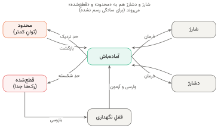
مثال 19.17 (سه پله پیش از حدِ سلول) پرسش. برای دمای بیشینهٔ سلول سه پلهٔ هشدار، محدودیت و قطع را با ترتیبِ درست بنویسید (عددها آموزشی) و بگویید هر پله کدام حالت را فعال میکند.
پاسخ. نمونهٔ آموزشی: هشدار در 40 °C (اپراتور خبر میشود، حالت عوض نمیشود)، محدودیت در 45 °C (حالتِ «محدود»، توان کم میشود)، قطع در 50 °C (حالتِ «قطعشده»، رک جدا)، همه زیرِ حدِ سلولِ سازنده.
تفسیر. قاعده: هر پله پیش از پلهٔ بعد و همه پیش از حدِ سلول؛ و فاصلهٔ پلهها باید بیش از خطای حسگر و سرعتِ تغییرِ دما در یک گامِ کنترل باشد، وگرنه دو پله با هم میرسند. بازگشت از «قطعشده» فقط پس از بازرسی است (قفلِ نگهداری). عددهای واقعی از سازنده و ضمانت میآیند (مثال 19.42). وارسی: \(40 < 45 < 50\) و همه کمتر از حدِ سلول.
- شش حالتِ نمودار را نام ببرید.
- سه پلهٔ حد را با کارِ هر کدام بنویسید.
- چرا بازگشت از «قطعشده» خودکار نیست؟
19.3.9 پیششارژ و پایشِ عایق
ایده. مبدل در ورودیِ مستقیمش خازنهای بزرگی دارد. اگر کلیدِ رک مستقیم روی خازنِ خالی بسته شود، جریان را فقط چند میلیاهم محدود میکند و کنتاکتور جوش میخورد. پیششارژ خازن را از راهِ یک مقاومت آرام پر میکند؛ مقاومت برای پالسِ انرژی اندازه میشود. سامانهٔ مستقیمِ باتری معمولاً شناور است (به زمین وصل نیست)؛ نخستین خطای به زمین چیزی را قطع نمیکند و پایشِ عایق آن را پیش از خطای دوم خبر میدهد.
pre-charge of a PCS DC link from one rack (teaching, A-295):
capacitance 20 mF at 1,331 V; inrush limited to 20 A
resistor 66.5 ohm; time constant 1.33 s; 5 tau 6.7 s
energy into the resistor 17.7 kJ; peak power 26.6 kW
without pre-charge the rack would close onto an empty
capacitor: the current is set only by milliohms and the
contactor welds; the resistor is sized for the energy pulse,
not the steady powerleakage to earth of a floating DC system at 1,498 V (teaching):
insulation resistance leakage current
1,000,000 ohm 1.5 mA
100,000 ohm 15.0 mA
10,000 ohm 149.8 mA
1,000 ohm 1498.0 mA
a single fault to earth does not trip a floating system, so
it can go unnoticed until a second fault makes a short;
the insulation monitor alarms on the first fault; alarm
levels come from the maker and the applicable standardمثال 19.18 (شصت و شش اهم، هفده کیلوژول) پرسش. مقاومتِ پیششارژ برای جریانِ 20 A، ثابتِ زمانی، انرژی و توانِ اوجِ مقاومت را بنویسید؛ و جریانِ نشتی را برای چهار مقاومتِ عایق حساب کنید.
پاسخ. خروجیهای بالا: 66.5 Ω، 1.33 s، 17.7 kJ، 26.6 kW اوج؛ نشتی 1.5، 15، 150 و 1,498 mA برای 1 MΩ تا 1 kΩ.
تفسیر. مقاومتِ پیششارژ چند ثانیه کار میکند ولی باید پالسی برابرِ انرژیِ خازن را بی آسیب جذب کند؛ اگر وصل چند بار پشتِ سرِ هم تکرار شود، گرما جمع میشود و منطقِ کنترل باید فاصله بگذارد. پایشِ عایق نشتیِ کم را پیش از آنکه خطرناک شود میبیند؛ سطحِ هشدار از سازنده و استانداردِ حاکم میآید. وارسی: \(\tfrac12 \times 0.02 \times 1{,}331^2 = 17{,}716\ \text{J}\).
- چرا بی پیششارژ کنتاکتور جوش میخورد؟
- مقاومتِ پیششارژ برای چه چیزی اندازه میشود؟
- چرا نخستین خطای به زمین در سامانهٔ شناور خطرناک است اگرچه چیزی را قطع نمیکند؟
19.3.10 مصرفِ کمکی و آمادهباش
ایده. باتری حتی وقتی کار نمیکند انرژی مصرف میکند: سامانهٔ مدیریتِ باتری، کنترلها، و تهویه که دمای کانتینر را نگه میدارد. در سال، تهویه با ضریبِ عملکرد (گرمای برداشته بر برقِ مصرفی) گرمای کانتینر را بیرون میبرد.
a week on standby, battery full (teaching, A-291):
self-discharge 0.084 % a day = 34 kWh a day
BMS and idle HVAC 6.5 kW x 8 containers = 1,248 kWh a day
in a week: 8.97 MWh, 27.9 % of the usable energy
standby costs more in auxiliaries than in chemistry; the
auxiliaries come from the battery or from the grid, and
the meter and the contract must say which (chapter 17)auxiliary energy of a year (lab D duty, mid-life resistance):
heat removed 200 MWh a container; HVAC at COP 3: 532 MWh for 8
BMS and controls: 35 MWh
total 568 MWh = 5.2 % of the 10,817 MWh discharged
with it the 0.5 C model's 91.5 % round trip (without
auxiliaries) falls to 86.7 %: the data pack's 86 % is this
winter heating is left out here; the site goes below
freezing in the data year, so it is one more auxiliary loadمثال 19.19 (پنج درصد، و هشتاد و شش درصد پیدا شد) پرسش. مصرفِ یک هفته آمادهباش و مصرفِ کمکیِ یک سال را بنویسید و نشان دهید عددِ 86 %ِ بستهٔ داده از کجا میآید.
پاسخ. خروجیهای بالا: آمادهباشِ پر در یک هفته 8.97 MWh (27.9 % انرژیِ قابلِ استفاده)، بیشترش کمکی نه خودتخلیه؛ در سال تهویه 532 و کنترلها 35 MWh، جمع 568 MWh (5.2 % دشارژ). رفتوبرگشتِ 91.5 %ِ مدل بی کمکی با این سهم به 86.7 % میرسد.
تفسیر. حلقه بسته شد: عددِ محافظهکارانهٔ بستهٔ داده (مثال 19.3) همان رفتوبرگشتِ سلول تا شبکه بهاضافهٔ کمکی است. کمکی یک کنتورِ جدا و یک قاعدهٔ قراردادی میخواهد: از باتری تأمین شود یا از شبکه (فصلِ ۱۷). آمادهباشِ طولانی بیشتر از آنچه شیمی میبرد، کمکی میبرد. وارسی: \(0.915 \times (1 - 0.052) = 0.867\).
- سه مصرفِ کمکیِ باتری را نام ببرید.
- چرا در آمادهباش کمکی از خودتخلیه بیشتر است؟
- اگر ضریبِ عملکردِ تهویه ۴ باشد، مصرفِ سالانه چه میشود؟
19.3.11 یکنواختیِ دما، شینه و پنجرهٔ ولتاژِ مبدل
ایده. سه پرسشِ طراحی که بیرون از برگهٔ دادهاند: (۱) سلولهای یک رک همدما نیستند و سلولِ گرمتر زودتر پیر میشود؛ (۲) شینهٔ مستقیمِ کانتینر جریانِ همهٔ رکها را میبرد؛ (۳) ولتاژِ رک با حالتِ شارژ و عمر پایین میآید و مبدل فقط در یک پنجرهٔ ولتاژ توانِ کامل میدهد.
ten years of calendar fade with a temperature spread in a rack
(mean 25 C, mean SOC 36 %, A-292, A-296):
cooling spread coolest hottest weakest-cell loss
liquid 1.5 K 5.35 % 5.90 % 0.55 pts more
air, good 4.0 K 4.92 % 6.39 % 1.47 pts more
air, poor 8.0 K 4.31 % 7.27 % 2.96 pts more
the hottest cells age fastest and set the string's capacity
(section C, grading); a cooling design is judged on spread as
much as on mean temperatureDC current in a container at full power (A-296):
C-rate rack A container bus A copper mm2 at 2 A/mm2
0.5 155 1,857 928
1.0 309 3,713 1,857
the bus carries the sum of the racks; its section is set by
heating at the steady current and by the short-circuit force
(@exm-ch19-short), whichever is larger; 2 A/mm2 is a teaching
density, the maker's thermal test decidesrack voltage while discharging at 0.5 C against the PCS window
(full power above 1,150 V, A-296):
SOC % new V end of life V PCS power new end of life
10 1,297 1,276 100 % 100 %
20 1,312 1,292 100 % 100 %
50 1,326 1,305 100 % 100 %
80 1,339 1,318 100 % 100 %
90 1,351 1,330 100 % 100 %
above 1,150 V the PCS gives full power; the rack stays above
it across the window even at end of life, so the window is
not cut by the PCS; with fewer cells in series it would be:
the DC window is an interface between two makersمثال 19.20 (سه درصد از پراکندگیِ دما) پرسش. اثرِ پراکندگیِ دما را بر فرسایشِ دهساله در سه طرحِ خنککاری بنویسید؛ جریانِ شینهٔ کانتینر را در 0.5 و 1 C حساب کنید؛ و نشان دهید پنجرهٔ ولتاژِ مبدل توان را محدود میکند یا نه.
پاسخ. خروجیهای بالا: سلولِ گرمترین نسبت به سردترین 0.55، 1.47 و 2.96 واحدِ درصد بیشتر برای پراکندگیِ 1.5، 4 و 8 K؛ شینه 1,857 A در 0.5 C و 3,713 A در 1 C (مسِ آموزشیِ 928 و 1,857 mm²)؛ ولتاژِ رک در پنجره از 1,276 تا 1,351 V، همه بالای 1,150 V، پس توانِ کامل.
تفسیر. خنککاری با پراکندگی هم سنجیده میشود، نه فقط میانگین: هشت درجه پراکندگی سه درصد ظرفیتِ رشته را در ده سال میگیرد (ضعیفترین سلول، مثال 19.24). شینه با گرمای جریانِ پیوسته و نیروی اتصالِ کوتاه (مثال 19.13) اندازه میشود. پنجرهٔ ولتاژ اینجا مشکلی نمیسازد، اما با سلولِ کمتر در رشته یا پنجرهٔ مبدلِ دیگر میسازد؛ پس یک رابط میانِ دو سازنده است. وارسی: \(5.02 \times 10^6 \times 0.5 / 1{,}352 = 1{,}857\ \text{A}\).
- چرا پراکندگیِ دما ظرفیتِ رشته را کم میکند؟
- شینه با کدام دو بار اندازه میشود؟
- اگر رشته ۳۸۰ سلول داشت، آیا پنجرهٔ ولتاژ توان را محدود میکرد؟ (کیفی)
19.3.12 افزونگیِ تهویه، متعادلسازی و حاشیهٔ حالتِ شارژ
ایده. چند تصمیمِ طراحی تنها وقتی معنا مییابند که کار را ببینیم: اگر یک واحدِ تهویه در ساعتِ داغ از کار بیفتد چه میشود؛ متعادلسازی چقدر زمان میبرد؛ عدمِ قطعیتِ حالتِ شارژ چقدر انرژی میگیرد؛ و نگه داشتنِ ذخیره برای جزیرهٔ بارهای حیاتی چه بهایی دارد.
one of two 60 kW HVAC units fails at the worst hour (A-291):
heat in 118 kW, removed 60 kW: inside rises 9.7 K an hour
from 25 C to 35 C in about 62 minutes
the BMS then limits power (state 'limited', fig. states),
which also cuts the heat; N+1 units (three of 60 kW) keep
full power through one failure; the choice is a price for
availability on the hottest dayspassive balancing of a 2 % charge gap (A-294):
bleed mA hours of bleeding days at 2 h a day
50 126 63
100 63 31
200 31 16
balancing only near the top of charge is slow; a cell that
leaks more than the bleed can return drifts away anyway
(the defect example); active balancing moves charge instead
of burning it, at more cost and complexityenergy given up to the SOC estimate's uncertainty (window 10-90 %):
SOC error window kept usable MWh lost a year at 365 cycles
1 % 11- 89 % 31.3 272 MWh
3 % 13- 87 % 29.7 815 MWh
5 % 15- 85 % 28.1 1,358 MWh
to keep the cells inside their limits the controller shrinks
the window by its own uncertainty; a better estimate is
energy sold every dayholding 2 MWh (10 h of the 200 kW critical load) for the island:
usable for shifting falls by 2 MWh: 677 MWh a year less shifted
at a spread of 75 - 35/0.86 = 34.3 u/MWh: 23.2 k u a year
the reserve has a yearly price; resilience is a requirement
with a cost, and the owner chooses its size (chapter 17)مثال 19.21 (چهار بهای کار) پرسش. (۱) پس از خرابیِ یک واحدِ تهویه چقدر تا 35 °C؟ (۲) متعادل کردنِ اختلافِ 2 % با سه جریانِ تخلیه چند روز؟ (۳) عدمِ قطعیتِ حالتِ شارژ چقدر انرژیِ سالانه میگیرد؟ (۴) نگه داشتنِ 2 MWh برای جزیره چه بهایی دارد؟
پاسخ. خروجیهای بالا: (۱) 9.7 K در ساعت، حدودِ 62 دقیقه؛ (۲) 63، 31 و 16 روز برای 50، 100 و 200 mA با دو ساعت در روز؛ (۳) 272، 815 و 1,358 MWh برای خطای 1، 3 و 5 %؛ (۴) 677 MWh و 23.2 هزار واحد در سال.
تفسیر. هر کدام یک قیمت است که با یک انتخاب پرداخت میشود: واحدِ سومِ تهویه (توانِ کامل در روزهای داغ)، متعادلسازیِ فعال (زمانِ کمتر)، تخمینِ بهترِ حالتِ شارژ (پنجرهٔ پهنتر) و اندازهٔ ذخیره (تابآوری در برابرِ درآمد). مالک این قیمتها را با عدد میبیند و انتخاب میکند. وارسی: \((118 - 60)/6 = 9.7\) و \(2 \times 0.927 \times 365 = 677\).
- چرا با خرابیِ یک واحدِ تهویه باتری توان را کم میکند؟
- چرا خطای حالتِ شارژ پنجره را تنگ میکند؟
- بهای ذخیرهٔ جزیره را با یک ذخیرهٔ 4 MWh حساب کنید.
19.3.13 پیوندِ باتری با کنترلگرِ نیروگاه
ایده. باتری، مبدل و کنترلگرِ نیروگاه با سیگنالها با هم کار میکنند. فهرستِ کمینه و رفتار در قطعِ ارتباط باید پیش از خرید در سندِ کنترلِ رابط بیاید (IF-007، بخش 18.4.6):
| سیگنال | از کجا به کجا | کار |
|---|---|---|
| حالتِ شارژ و سلامت | مدیریتِ باتری به کنترلگر | برنامهریزی |
| توانِ مجازِ شارژ و دشارژ | مدیریتِ باتری به مبدل و کنترلگر | اعمالِ حدها (مثال 19.6) |
| حالتِ کار و هشدارها | مدیریتِ باتری به کنترلگر | نمودارِ حالت (شکل 19.12) |
| فرمانِ توان | کنترلگر به مبدل | جابهجایی، ذخیره، حد |
| ضربانِ زندهبودن | دوسویه | آشکارسازیِ قطعِ ارتباط |
| رفتار در قطعِ ارتباط | تنظیمِ مبدل | رفتن به توانِ صفر یا حالتِ ایمن در زمانِ مشخص |
- شش سیگنالِ کمینه را نام ببرید.
- چرا رفتار در قطعِ ارتباط پیش از خرید تعیین میشود؟
- کدام سیگنال نقشهٔ توانِ مجاز را میبرد؟
19.3.14 کارِ توانمحور و بازده در بارِ جزئی
ایده. همهٔ کارهای باتری جابهجاییِ انرژی نیستند. پاسخِ بسامد (فصلِ ۲۰) سیگنالی سریع و تقریباً صفرمیانگین است که باتری را با چرخههای کوچکِ فراوان کار میدهد. چنین کاری اغلب در بارِ جزئیِ مبدل است، جایی که تلفهای ثابتِ مبدل سهمِ بیشتری دارند.
def freq_response(p_max: float = 10.0, hours: int = 24, seed: int = 197):
"""A zero-mean frequency-response signal (minute steps, slowly
varying) on the battery: energy throughput and SOC wander."""
rng = np.random.default_rng(seed)
n = hours * 60
x = np.zeros(n)
for k in range(1, n): # first-order random signal
x[k] = 0.9 * x[k - 1] + 0.2 * rng.normal()
p = np.clip(x, -1, 1) * p_max # MW, + discharge
eta = math.sqrt(0.86)
e = np.cumsum(np.where(p > 0, -p / eta, -p * eta)) / 60.0 # MWh
return p, ea day of frequency response at up to +-10 MW (teaching, A-297):
energy through the battery 88 MWh (1.37 full cycles of the usable window)
stored energy wanders from -1.4 to +15.1 MWh
end of day +11.7 MWh = signal's net charge +18.3 less losses 6.6 MWh
the signal is zero on average only over long times; in a day
its imbalance and the losses move the SOC, so the service
needs headroom both ways and a slow correction that the
rules of the service must allow (chapter 20)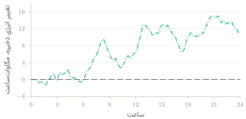
round trip at part load: cells at their rate, PCS on its curve
(the chapter 9-10 inverter curve, used here for the PCS):
power MW PCS one way cells DC AC round trip
2 0.9694 0.9961 93.61 %
5 0.9834 0.9904 95.78 %
10 0.9860 0.9808 95.35 %
20 0.9830 0.9621 92.97 %
at low power the PCS's fixed losses dominate and the round
trip falls although the cells are more efficient; a
battery that idles at small power loses on both countsمثال 19.22 (هشتاد و هشت مگاواتساعت در روز، نود و سه درصد در دو مگاوات) پرسش. انرژیِ گذرانده، دامنهٔ تغییرِ انرژیِ ذخیره و جزءهای جابهجاییِ پایانِ روز را برای یک روز پاسخِ بسامد بنویسید؛ و رفتوبرگشت را در چهار توان مقایسه کنید.
پاسخ. خروجیها و شکل 19.13: 88 MWh (1.37 چرخهٔ کامل)؛ انرژی از −1.4 تا +15.1 MWh؛ پایانِ روز +11.7 = بارِ خالصِ سیگنال +18.3 منهای تلف 6.6 MWh. رفتوبرگشت در 2، 5، 10 و 20 MW: 93.6، 95.8، 95.4 و 93.0 %.
تفسیر. سیگنالی که «بهطورِ میانگین صفر» است در یک روز صفر نیست؛ باتری باید جای خالی در هر دو سو و یک تصحیحِ آرامِ حالتِ شارژ داشته باشد که قواعدِ خدمت اجازه دهند. تلف در چرخههای کوچکِ فراوان جمع میشود. بازده بیشینه در بارِ میانی است: در توانِ کم تلفهای ثابتِ مبدل و در توانِ زیاد تلفِ \(i^2R\) سلول غالب است. وارسی: \(18.3 - 6.6 = 11.7\).
- چرا پاسخِ بسامد جای خالی در هر دو سو میخواهد؟
- چرا بازده در توانِ کم پایین میآید؟
- فرسایشِ چرخههای کوچکِ فراوان را با یک چرخهٔ عمیق مقایسه کنید (بخش 19.2.8).
19.3.15 رکهای موازی و گرمایشِ زمستان
ایده. رکهای موازی جریان را به نسبتِ عکسِ مقاومت تقسیم میکنند؛ رکی که مقاومتِ کمتری دارد بیشتر کار میکند و زودتر پیر میشود. اگر رکی با حالتِ شارژِ متفاوت به شینه وصل شود، اختلافِ ولتاژِ مدارِ باز یک جریانِ گردشی میسازد که فقط مقاومتِ دو رک آن را محدود میکند. در زمستان، کانتینر باید بالای دمای کمینهٔ شارژ نگه داشته شود.
12 racks in parallel at 0.5 C, rack resistance spread 5 % (A-298):
mean rack current 155 A; highest 166 A, lowest 144 A (15 % apart)
closing a rack onto the others at a different SOC (OCV gap):
SOC of the rack vs the bus gap V current at closing A
50 % vs 52 % 0.8 2
85 % vs 90 % 8.2 24
10 % vs 15 % 10.6 31
the lowest-resistance rack works hardest and ages fastest;
racks are closed onto the bus only when their voltages
match within a limit, or through the pre-charge pathkeeping a container at 10 C or more in winter (data-year air):
hours below 10 C outside: 2,516
heat needed 21.1 MWh a container a year; for 8: 169 MWh
(resistive heating; the cells' own heat helps on working
days and is left out here, so this is an upper bound)
about a third of the cooling electricity, and it decides whether midday
charging works in January (the power map)مثال 19.23 (پانزده درصد اختلاف، سی آمپرِ گردشی) پرسش. جریانِ بیشینه و کمینهٔ رکها با 5 % پراکندگیِ مقاومت، و جریانِ گردشیِ وصل در سه اختلافِ حالتِ شارژ را بنویسید؛ و انرژیِ گرمایشِ زمستان را برآورد کنید.
پاسخ. خروجیهای بالا: میانگینِ 155 A، بیشینه 166 و کمینه 144 A (15 %)؛ جریانِ گردشیِ 2، 24 و 31 A برای اختلافِ 50/52، 85/90 و 10/15 %؛ گرمایش 21.1 MWh برای هر کانتینر، 169 MWh برای هشت (کرانِ بالا).
تفسیر. پراکندگیِ مقاومت (از ساخت و دما) کار را نابرابر پخش میکند؛ پس درجهبندی و یکنواختیِ دما در ترازِ رک هم مهماند. جریانِ گردشی در فلاتِ LFP کوچک است ولی در دو سرِ پنجره بزرگ؛ قاعده: وصل فقط با ولتاژِ همخوان یا از راهِ پیششارژ. گرمایش حدودِ یکسومِ برقِ سرمایش است و شرطِ شارژِ ظهرِ زمستان (مثال 19.6). وارسی: \(10.6 / (2 \times 0.17) = 31\).
- چرا رکِ کممقاومت بیشتر کار میکند؟
- چرا جریانِ گردشی در دو سرِ پنجره بزرگتر است؟
- چرا گرمایشِ زمستان برای شارژ مهم است؟
19.4 پ. ساخت، ایمنی و چرخهٔ عمر
باتری محصولی صنعتی است که کیفیتش در کارخانه ساخته میشود و در محل فقط وارسی میشود. این بخش توالیِ صنعتی را با هدفِ کنترلِ هر گام، ردیابی و بازرسی را با عدد، یک عیبِ فرضی را از دریافت تا مهار، گریزِ حرارتی و گسترش را، و ضمانت و پایانِ عمر را میآورد.
برنامه:
python -m companion.ch19.examples_cگامهای ساخت فقط با هدف و کنترلِ کیفیتشان آمدهاند؛ هیچ ترکیب، مقدار، دما یا تنظیمی داده نمیشود. ساختِ سلول بیرون از کارخانهٔ صنعتی با محیطِ کنترلشده، تجهیزاتِ ویژه و کارکنانِ آموزشدیده نه ایمن است نه واقعبینانه و این کتاب آن را پیشنهاد نمیکند.
19.4.1 توالیِ صنعتی از الکترود تا کانتینر
ایده. هر گامِ ساخت یک کنترلِ فرایند دارد که هدفش جلوگیری از یک گونهٔ عیب است؛ عیبی که در یک گام ساخته شود، در گامهای بعد سختتر و گرانتر پیدا میشود.
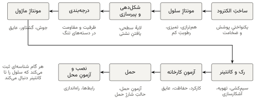
| گام | کارِ گام | کنترل جلوی چه چیزی را میگیرد |
|---|---|---|
| ساختِ الکترود | پوشاندنِ ورقِ فلزی با مادهٔ فعال و فشردن | ظرفیتِ ناهمسان، ذراتِ بیگانه که اتصالِ کوتاهِ درونی میسازند |
| مونتاژِ سلول | چیدنِ الکترود و جداکننده، بستن و پر کردن با الکترولیت | همترازیِ بد، آلودگی، رطوبت |
| شکلدهی | نخستین شارژهای کنترلشده که لایهٔ سطحی را میسازند | لایهٔ سطحیِ ناپایدار، عمرِ کوتاه |
| پیرسازی | نگه داشتن و اندازهگیریِ افتِ ولتاژ در زمان | سلول با خودتخلیهٔ زیاد (اتصالِ کوتاهِ درونیِ ریز) |
| درجهبندی | اندازهگیریِ ظرفیت و مقاومت و دستهبندی | ناهمسانیِ سلولهای یک رشته |
| مونتاژِ ماژول | جوشِ شینه، حسگرها، قاب و فشار | جوشِ بد، اتصالِ شل، عایقِ آسیبدیده |
| رک و کانتینر | سیمکشی، مدیریتِ باتری، تهویه، آشکارسازها | سیمکشیِ نادرست، رابطِ ناقص |
| آزمونِ کارخانه | کارکرد، حفاظت، عایق، ارتباط | عیبِ سامانه پیش از حمل |
- هدفِ کنترلِ پیرسازی چیست؟
- چرا عیبی که در ساختِ الکترود ساخته شود، دیرتر گرانتر پیدا میشود؟
- کدام گام ناهمسانیِ سلولهای یک رشته را کم میکند؟
19.4.2 خطرهای ساخت و کنترلشان
ایده. کارخانهٔ سلول و ماژول خطرهای خودش را دارد که مالکِ نیروگاه باید بداند چون شاهدِ کنترلشان را از سازنده میخواهد: مواد (حلالها و گردِ مواد فعال، الکترولیتِ آتشگیر)، انرژیِ انباشته (سلولِ شارژشده در انبار، پیرسازی و آزمون)، ولتاژِ مستقیمِ بالا در مونتاژِ رک، و گرما و آتش در شکلدهی. کنترلها در سطحِ کارخانهاند: محیطِ کنترلشده، جداسازیِ ناحیههای انباشتِ انرژی، روشهای کار با ولتاژِ بالا، آشکارسازی و واکنش در اضطرار. پرسشِ مالک در بازرسیِ کارخانه (فصلِ ۴۴): کدام سوابق نشان میدهند این کنترلها کار میکنند؟
- چهار گونهٔ خطرِ ساختِ باتری را نام ببرید.
- چرا مالکِ نیروگاه به خطرهای کارخانه اهمیت میدهد؟
- یک سابقه که کنترلِ خطرِ انرژیِ انباشته را نشان میدهد پیشنهاد کنید.
19.4.3 درجهبندی و ضعیفترین سلول
ایده. در یک رشتهٔ سری، همه سلولها یک جریان دارند؛ پس رشته وقتی خالی است که ضعیفترین سلول خالی شود. اگر ظرفیتها پراکنده باشند، کمینهٔ ۴۱۶ سلول از میانگین خیلی کمتر است. درجهبندی (به انگلیسی grading) سلولها را پیش از مونتاژ در دستههای تنگِ ظرفیت و مقاومت جدا میکند.
rack capacity limited by its weakest of 416 cells (A-294):
cells spread (sd) mean of the weakest loss
ungraded 2.0 Ah 308.0 Ah 1.9 %
graded 0.6 Ah 312.2 Ah 0.6 %
grading (sorting cells into narrow capacity and resistance
bins before assembly) gives back most of the loss; balancing
equalises charge, not capacityمثال 19.24 (یک و نه دهم درصد پس گرفته میشود) پرسش. ظرفیتِ ضعیفترین سلولِ رک را بی درجهبندی و با آن بنویسید و بگویید متعادلسازی کدام را جبران میکند.
پاسخ. خروجیِ بالا: بی درجهبندی (انحرافِ معیارِ 2.0 Ah) ضعیفترین بهطورِ میانگین 308.0 Ah، 1.9 % کمتر؛ با درجهبندی (0.6 Ah) 312.2 Ah، 0.6 %.
تفسیر. درجهبندی بیشترِ این تلف را برمیگرداند. متعادلسازی بار را برابر میکند (همه از یک حالتِ شارژ شروع کنند)، نه ظرفیت را؛ پس جایگزینِ درجهبندی نیست. در 40 MWh، 1.3 واحدِ درصد تفاوت حدودِ 0.5 MWh است. وارسی: \(1 - 308.0/314 = 1.9\ \%\) (E13).
- چرا رشتهٔ سری را ضعیفترین سلول محدود میکند؟
- درجهبندی چه چیزی را تنگ میکند؟
- چرا متعادلسازی جایگزینِ درجهبندی نیست؟
19.4.4 بازرسیِ ورودی و نمونهگیری
ایده. در محلِ مونتاژ (یا در دریافتِ ماژولها) همهٔ سلولها آزموده نمیشوند؛ یک نمونه با یک عددِ پذیرش آزموده میشود (فصلِ ۱۰، بخش 10.3.10). منحنیِ احتمالِ پذیرش نشان میدهد نمونهگیری چه چیزی را میتواند پیدا کند.
incoming inspection of a lot of 2,000 cells by attributes:
share defective accept, n 50 c 0 n 125 c 1 n 200 c 2
0.05 % 0.975 0.998 1.000
0.20 % 0.905 0.974 0.992
0.50 % 0.778 0.870 0.920
1.00 % 0.605 0.644 0.677
2.00 % 0.364 0.284 0.235
one bad cell in 2,000 (0.05 %) passes almost every plan:
sampling finds bad lots, not single bad cells; single cells
are caught by the maker's tests and by the BMSمثال 19.25 (یک سلولِ بد در دو هزار) پرسش. احتمالِ پذیرشِ محمولهای با سهمهای مختلفِ معیوب را برای سه طرحِ نمونهگیری بنویسید و بگویید یک سلولِ معیوب در دو هزار چه سرنوشتی دارد.
پاسخ. خروجیِ بالا: با 0.05 % معیوب (یک در دو هزار) هر سه طرح محموله را با احتمالِ 0.975 تا 1.000 میپذیرند؛ با 2 % معیوب احتمالِ پذیرش 0.24 تا 0.36.
تفسیر. نمونهگیری محمولههای بد را پیدا میکند، نه سلولِ بدِ تنها. سلولِ بدِ تنها را آزمونهای صد درصدیِ سازنده (پیرسازی، درجهبندی) و سامانهٔ مدیریتِ باتری در کار پیدا میکنند (مثال 19.27)؛ پس قرارداد باید سوابقِ صد درصدیِ سازنده را بخواهد، نه فقط حقِ نمونهگیری را. وارسی: \(0.99^{50} = 0.605\) (P26).
- نمونهگیری چه چیزی را پیدا میکند و چه چیزی را نه؟
- چرا قرارداد سوابقِ صد درصدیِ سازنده را میخواهد؟
- احتمالِ پذیرشِ محمولهای با 1 % معیوب را با طرحِ n 50, c 0 حساب کنید.
19.4.5 ردیابی و محمولهها
ایده. هر سلول یک شناسه دارد که به ماژول، رک و کانتینرش و به محمولهٔ تولیدش (همان روز، همان خط، همان مواد) وصل است. اگر یک محموله مشکوک شود، ردیابی میگوید کجاها را باید بازرسی کرد؛ و مونتاژِ تفکیکشده بر حسبِ محموله (هر رک از یک یا دو محموله) دامنهٔ آن را کوچک نگه میدارد.
one suspect lot of 2,000 cells: racks to inspect
cells mixed at random in assembly: 96 of 96 racks
lots kept together (lot-segregated assembly): about 6 racks
traceability (cell serial to module, rack and container) is
what turns a recall of the whole battery into a few racksمثال 19.26 (همهٔ رکها یا شش رک) پرسش. اگر یک محمولهٔ دوهزارسلولی مشکوک شود، با مونتاژِ آمیخته و تفکیکشده چند رک باید بازرسی شود؟
پاسخ. خروجیِ بالا: آمیخته، همهٔ 96 رک؛ تفکیکشده، حدودِ شش رک.
تفسیر. با آمیختنِ تصادفی، هر رک تقریباً بهیقین دستکم یک سلول از هر محموله دارد؛ فراخوان کلِ باتری را میخواباند. تفکیک بر حسبِ محموله یک الزامِ کارخانه است که مالک باید در قرارداد بنویسد و در بازرسیِ کارخانه سوابقش را ببیند. وارسی: \(\lceil 2{,}000 / 416 \rceil + 1 = 6\).
- شناسهٔ سلول به چه چیزهایی وصل است؟
- چرا مونتاژِ آمیخته فراخوان را بزرگ میکند؟
- سوابقِ تفکیک را در کدام بازرسی میبینید؟
19.4.6 آزمونها و شاهدِ حمل و نصب
ایده. شاهدِ کیفیت در هر تراز یک گونهٔ آزمون است:
| تراز | آزمونهای رایج | شاهد برای مالک |
|---|---|---|
| سلول | ظرفیت، مقاومت، خودتخلیه، آزمونهای ایمنیِ نوعی | سوابقِ صد درصدی، گزارشهای آزمونِ نوعی (مثلاً IEC 62619:2022، IEC 63056:2020) |
| ماژول و رک | عایق، مقاومتِ اتصال، کارکردِ حسگرها | گزارشِ آزمونِ روتینِ هر واحد |
| کانتینر و سامانه | کارکرد، حفاظت، ارتباط، تهویه، آشکارسازی | گزارشِ آزمونِ کارخانه (فصلِ ۴۴)؛ آزمونِ گسترشِ نوعی (UL 9540A) |
| حمل | آزمونهای حملِ سلول و باتری | خلاصهٔ آزمونِ حمل (UN 38.3 در Manual of Tests and Criteria)، حالتِ شارژِ حمل |
| محل | رابطها، راهاندازی، ظرفیتِ پذیرش | گزارشهای آزمونِ محل (فصلهای ۴۹ و ۵۰) |
- برای هر تراز یک شاهد نام ببرید.
- چرا حالتِ شارژِ حمل در شاهد میآید؟
- فرقِ آزمونِ نوعی و آزمونِ روتین را بنویسید.
19.4.7 مثالِ کارشده: درختِ رابطها و دنبال کردنِ یک عیبِ فرضی
ایده. دومین مثالِ کارشدهٔ فصل دو بخش دارد: درختِ رابطها از سلول تا کانتینر (هر تراز با تراز بعد چه چیزی را شریک است)، و دنبال کردنِ یک عیبِ فرضی: سلولی با یک اتصالِ کوتاهِ درونیِ ریز که جریانِ خودتخلیهاش 60 mA است (سلولِ سالم 11 mA)، از بازرسیِ دریافت تا مهار با کنترلهای سامانه. افتِ ولتاژِ مدارِ باز در \(t\) روز با جریانِ نشتیِ \(i_\text{l}\):
\[ \Delta V = V_\text{oc}(\text{SOC}_0) - V_\text{oc}\!\left(\text{SOC}_0 - \frac{24\,t\,i_\text{l}}{Q}\right) \tag{19.8}\]
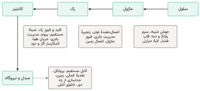
def ocv_drift_mv(leak_ma: float, q_ah: float, days: float, soc0: float,
chem: str = "LFP") -> float:
"""Drop of open-circuit voltage (mV) of a cell resting for some days
with a self-discharge current leak_ma."""
d_soc = leak_ma / 1000.0 * 24.0 * days / q_ah
return 1000.0 * float(ocv(soc0, chem) - ocv(soc0 - d_soc, chem))cell-to-container interfaces (worked example 2, part 1):
cell -> module:
busbar weld, voltage and temperature leads, compression frame, thermal pad
module -> rack:
power connector, BMS daisy chain, module fuse, mounting and earthing
rack -> container:
rack switch and fuse, DC bus, rack BMS link, airflow, gas and smoke
detection
container -> PCS and plant:
DC cables, protocol (IF-007), auxiliary power, earthing, remote isolation,
fire panel
hypothetical defect: an internal leak of 60 mA (normal 11 mA)
1 receiving inspection (OCV now and after 7 days, 30 % SOC):
drop normal 0.62 mV, defective 3.45 mV; a limit of 1.5 mV
catches it, but only if this cell is in the sample (125 of
2,000: 6 %)
2 in operation, a series string carries one current; the
leak drains the cell 0.37 % SOC a day more; balancing
(100 mA, 2 h a day) returns 0.06 %; net 0.31 % a day
its voltage at the top of charge falls 30 mV below the others
after 35 days: the BMS deviation alarm (teaching limit)
and the balancing log (the same cell every day) both show it
3 containment: the rack controller limits current, then opens
the rack switch; 11 of 12 racks keep running; the module (the
replaceable unit) is changed under the maker's procedure; the
cell goes to failure analysis and its lot is traced (c_lots)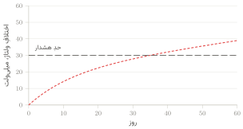
مثال 19.27 (سی و پنج روز تا هشدار) پرسش. (۱) رابطهای هر تراز را از سلول تا مبدل بنویسید. (۲) آیا بازرسیِ دریافت با آزمونِ هفتروزهٔ ولتاژ این سلول را پیدا میکند؟ (۳) اگر نه، سامانهٔ مدیریتِ باتری کی و چگونه آن را میبیند؟ (۴) سامانه چگونه آن را مهار میکند و پس از آن چه میشود؟
پاسخ. خروجیِ بالا، شکل 19.15 و شکل 19.16:
- سلول به ماژول: جوشِ شینه، سیمِ ولتاژ و دما، قابِ فشار، لایهٔ حرارتی؛ ماژول به رک: اتصالدهندهٔ توان، زنجیرهٔ مدیریتِ باتری، فیوز، زمین؛ رک به کانتینر: کلید و فیوزِ رک، شینه، پیوندِ مدیریتِ باتری، جریانِ هوا، آشکارسازها؛ کانتینر به مبدل و نیروگاه: کابلِ مستقیم، پروتکل، تغذیهٔ کمکی، زمین، جداسازیِ از راه دور، تابلوی آتش.
- افتِ هفتروزه در 30 %: سالم 0.62 mV، معیوب 3.45 mV؛ حدِ 1.5 mV آن را میگیرد، اگر در نمونه باشد: احتمال 6.25 % (۱۲۵ از ۲٬۰۰۰، P27).
- در کار، نشتی هر روز 0.37 % حالتِ شارژ بیشتر میبرد؛ متعادلسازی 0.06 % برمیگرداند؛ خالص 0.31 % در روز. اختلافِ ولتاژ در بالای شارژ پس از 35 روز به حدِ آموزشیِ 30 mV میرسد؛ سوابقِ متعادلسازی (همان سلول، هر روز) هم آن را نشان میدهند.
- کنترلگرِ رک جریان را محدود و سپس کلیدِ رک را باز میکند؛ یازده رکِ دیگر کار میکنند؛ ماژول (واحدِ تعویضپذیر) طبقِ روشِ سازنده عوض میشود؛ سلول به تحلیلِ خرابی میرود و محمولهاش ردیابی میشود (مثال 19.26).
تفسیر. دفاع لایهای است: هیچ لایه بهتنهایی کافی نیست. نمونهگیری سلولِ تنها را به احتمالِ کم میگیرد؛ سوابقِ پیرسازیِ سازنده (صد درصدی) شانسِ بیشتری دارند؛ سامانهٔ مدیریتِ باتری در کار آن را میبیند ولی پس از هفتهها، و فقط اگر داده و حدها درست تنظیم شده باشند. پس قرارداد باید سه چیز بخواهد: سوابقِ صد درصدیِ پیرسازی، حدهای هشدار و سوابقِ متعادلسازی در سامانهٔ مدیریتِ باتری، و روشِ تعویضِ ماژول. وارسی: \(0.06 \times 24 \times 7 / 314 = 3.21\ \%\) (E05)؛ در شیبِ 1.05 mV بر درصد حدودِ 3.4 mV.
- چهار لایهٔ دفاع در برابرِ سلولِ معیوب را نام ببرید.
- چرا آزمونِ افتِ ولتاژ در 15 % حساستر از 50 % است؟
- چرا سوابقِ متعادلسازی نشانهٔ خوبی است؟
19.4.8 گریزِ حرارتی و گسترش
ایده. گریزِ حرارتی (به انگلیسی thermal runaway) یعنی سلول خودش را گرمتر از آنچه میتواند دفع کند گرم میکند و واکنشها خودشان را تند میکنند. آغازگرها: برقی (شارژِ بیش از حد، اتصالِ کوتاهِ بیرونی)، حرارتی (گرمای بیرونی، خنککاریِ ناکافی)، مکانیکی (ضربه، سوراخ شدن) و درونی (اتصالِ کوتاهِ درونی از عیبِ ساخت یا تهنشینیِ لیتیم). سلول در گریز گاز آزاد میکند که بخشی از آن آتشگیر است، و گرما به همسایهها میدهد؛ اگر همسایه هم به گریز برود، رخداد گسترش مییابد.
پرسشِ مهندسی دو بخش دارد: (۱) چقدر احتمال دارد یک سلول به گریز برود (کیفیتِ ساخت، حفاظتِ برقی، مدیریتِ حرارتی)؛ (۲) اگر رفت، تا کجا میرود (فاصله و دیواره میانِ سلولها، ماژولها و رکها، خنککاری، آشکارسازی، جداسازی). پاسخِ بخشِ دوم فقط از آزمونِ بزرگمقیاسِ همان محصول میآید (مثلاً روشِ آزمونِ UL 9540A، ویرایشِ ششم ۲۰۲۶؛ ویرایشِ جاری پیش از استناد وارسی شود). مدلِ زیر فقط برای فهمِ شکلِ مسئله است.
اگر هر همسایه با احتمالِ \(p\) دنبال کند و رشته از هر سو \(m\) سلول داشته باشد، امیدِ شمارِ سلولهای درگیر:
\[ \bar{n} = 1 + 2 \sum_{k=1}^{m} p^k \tag{19.9}\]
def chain_expected(n_cells: int, p_cell: float, n_modules: int,
p_module: float) -> dict:
"""Teaching abstraction of propagation: a cell in the middle of a
module fails; each neighbour follows with probability p_cell (one
line of cells); a whole module passes it to the next module with
probability p_module. Expected cells and modules involved. Not a
design method: evidence comes from tests of the real product."""
half = n_cells // 2
cells = 1.0 + 2.0 * sum(p_cell ** k for k in range(1, half + 1))
reach_end = p_cell ** half # propagation reaches an edge
mods = 1.0 + 2.0 * sum((reach_end * p_module) ** k
for k in range(1, n_modules // 2 + 1))
return {"cells_in_module": cells, "modules": mods}teaching propagation chain (not a design method; A-294):
design p cell p module cells modules
no barriers 0.90 0.60 17.8 1.08
cell barriers 0.30 0.30 1.9 1.00
cell and module barriers 0.30 0.05 1.9 1.00
the chain shows why a barrier between cells matters more than
one between modules: a module passes the event on only if the
cells carried it to its edge; real probabilities come only
from large-scale tests of the product (UL 9540A, chapter 32)مثال 19.28 (هجده سلول یا دو سلول) پرسش. امیدِ شمارِ سلولها و ماژولهای درگیر را برای سه طرح بنویسید و بگویید دیوارهٔ میانِ سلولها یا میانِ ماژولها کدام اثرِ بیشتری دارد.
پاسخ. خروجیِ بالا و شکل 19.17: بی دیواره (\(p = 0.9\)) 17.8 سلول و 1.08 ماژول؛ با دیوارهٔ سلول (\(p = 0.3\)) 1.9 سلول؛ افزودنِ دیوارهٔ ماژول چیزی اضافه نمیکند چون رخداد به لبهٔ ماژول نمیرسد.
تفسیر. در این انتزاع، دیوارهٔ میانِ سلولها رخداد را در سرچشمه کوچک میکند؛ دیوارهٔ ماژول فقط وقتی به کار میآید که سلولها رخداد را تا لبه ببرند. مهمتر از عددها: احتمالهای واقعی را فقط آزمون میدهد، و طراحِ نیروگاه بهجای مدل، گزارشِ آزمونِ محصول را میخواهد و جای کانتینرها، فاصلهها و رابطهای آتش را از آن و از مقامِ مسئول میگیرد (بخش 19.6). وارسی: با \(p = 0.5\): \(1 + 2 \times 0.5/(1 - 0.5) \approx 3.0\) (P29).
- چهار گونهٔ آغازگرِ گریزِ حرارتی را نام ببرید.
- دو بخشِ پرسشِ مهندسی دربارهٔ گریز را بنویسید.
- چرا مدلِ زنجیره جانشینِ آزمون نیست؟
19.4.9 از خرابیِ سلول تا برنامهٔ اضطرار
ایده. هر گونهٔ خرابیِ سلول به یک زنجیره در سامانه وصل است: خطرِ گسترش، راهِ آشکارسازی، حفاظت، برنامهٔ اضطرار، راهبردِ تعویض و بازیافت.
| خرابیِ سلول | خطرِ گسترش | آشکارسازی | حفاظت و مهار | پس از رخداد |
|---|---|---|---|---|
| اتصالِ کوتاهِ درونیِ ریز | کم تا میانه، آرام | خودتخلیه، متعادلسازی | محدود کردن و جداسازیِ رک | تعویضِ ماژول، ردیابیِ محموله |
| شارژِ بیش از حد | زیاد | ولتاژِ سلول | قطعِ سختافزاری | تحلیلِ علت، وارسیِ تنظیمها |
| خنککاریِ ناکافی | میانه، گسترده | دمای سلول و هوا | کم کردنِ توان، توقف | تعمیرِ تهویه، آزمونِ ظرفیت |
| آسیبِ مکانیکی | زیاد، ناگهانی | ضربه، گاز | جداسازی، برنامهٔ اضطرار | کنار گذاشتن طبقِ روشِ سازنده |
| گریز و گسترش | خودِ رخداد | گاز، دود، گرما | جداسازی، مهارِ گسترش، حفاظتِ مجاورها | بررسی، پاکسازی، بازیافت |
- برای «شارژِ بیش از حد» زنجیرهٔ کامل را بنویسید.
- چرا خنککاریِ ناکافی خطرِ «گسترده» دارد؟
- پس از رخداد، چه چیزی به بازیافت میرود و چه چیزی به تحلیل؟
19.4.10 ضمانت، جایگزینی و پایش
ایده. ضمانتِ باتری معمولاً یک منحنیِ سلامت بر حسبِ زمان است با شرطهایی که اگر شکسته شوند ضمانت از دست میرود: انرژیِ گذرانده در سال، چرخههای معادل، حالتِ شارژِ میانگین، دما، و نرخِ C. این شرطها باید تنظیمهای کنترلگر و گزارشهای ماهانه شوند (مثال 19.42). سه راهبرد برای نگه داشتنِ انرژیِ قابلِ استفاده:
- بزرگتر خریدن از آغاز (مثال 19.15، گام ۳).
- افزایشِ ظرفیت در میانهٔ عمر با بلوکهای تازه (همان، گام ۴).
- جایگزینیِ ماژولها یا رکهای فرسوده، که با سلولهای نو در کنارِ کهنه مسئلهٔ ناهمسانی میسازد و باید با سازنده هماهنگ شود.
پایش سلامت و مقاومت را با آزمونِ ظرفیتِ دورهای و دادهٔ کار نشان میدهد (بخش 19.2.7)؛ ادعای ضمانت بی این سوابق ضعیف است (فصلِ ۵۱).
- پنج شرطِ رایجِ ضمانت را نام ببرید.
- سه راهبردِ نگه داشتنِ انرژی را با یک بهای هر کدام بنویسید.
- چرا ادعای ضمانت بی سوابقِ پایش ضعیف است؟
19.4.11 پایانِ عمر و بازیافت
ایده. در پایانِ عمرِ پروژه یا باتری، صدها تُن سلول و تجهیز باید به جایی بروند. مسیرها: کاربردِ دوم (اگر سلامت و سوابق اجازه دهند)، سپس بازیافت به دستِ بازیافتکنندهٔ دارای مجوز (روشهای گرمایی، شیمیایی یا مستقیم، کیفی). سلولِ فرسوده و آسیبدیده کالای خطرناک است و حملش آزمون و بستهبندیِ خودش را دارد. برنامه و هزینهٔ پایانِ عمر بخشی از مبنای طراحی و صندوقِ برچیدن است (فصلِ ۵۳)؛ در برخی حوزهها مقررات، گذرنامهٔ باتری و مسئولیتِ تولیدکننده هم دارند (کشوری، فصلهای ۵۵ تا ۵۷).
end of life of the S1 battery (teaching masses, A-294):
cells 220 t; with modules, racks and containers about 395 t
trucks of 20 t for the cells: 11
routes: second use (if health and records allow), then
recycling by a licensed recycler; spent cells travel as
dangerous goods with their own test and packing rules
the end-of-life plan and its cost belong in the design basis
and the decommissioning fund (chapter 53)مثال 19.29 (دویست و بیست تُن سلول) پرسش. جرمِ سلولها و کلِ باتری را در پایانِ عمر برآورد کنید و بگویید برنامهٔ پایانِ عمر کجا ثبت میشود.
پاسخ. خروجیِ بالا: سلولها حدودِ 220 t، با ماژول، رک و کانتینر حدودِ 395 t؛ یازده کامیونِ بیستتُنی برای سلولها.
تفسیر. این حجم یک پروژهٔ کوچک است با حمل، مجوز و هزینه؛ اگر از آغاز در قرارداد (پسگرفتن به دستِ سازنده یا بازیافتکننده) و در صندوقِ برچیدن نیاید، در پایان به مسئله تبدیل میشود. وارسی: \(39{,}936 \times 5.5 / 1000 = 220\) (E14).
- دو مسیرِ پایانِ عمر را با شرطِ هر کدام بنویسید.
- چرا سلولِ فرسوده کالای خطرناک است؟
- برنامهٔ پایانِ عمر در کدام سندها ثبت میشود؟
19.4.12 حدِ آزمونِ افتِ ولتاژ از آمارِ محموله
ایده. آزمونِ افتِ هفتروزه (مثال 19.27) یک حد میخواهد. سلولهای سالم یک توزیع دارند (پراکندگی از ساخت و خطای اندازهگیری)، سلولهای نشتیدار توزیعِ دیگر. حدِ پایین سلولِ سالم رد میکند (هزینه)، حدِ بالا سلولِ نشتیدار را میگذراند (ریسک). آمار هر دو را با عدد نشان میدهد (A-294).
setting the limit of the seven-day drop screen (lot of 2,000):
limit mV good cells rejected chance a leaky cell passes
0.9 19.62 1.70e-07
1.0 1.54 4.79e-07
1.2 0.00 3.40e-06
1.5 0.00 4.81e-05
2.0 0.00 1.87e-03
2.5 0.00 2.87e-02
a low limit rejects good cells, a high one passes leaky
ones; with these spreads 1.5 mV rejects almost none and
misses almost none: the screen works only if it is applied
to every cell (the maker's ageing step), not to a sample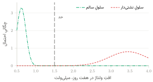
مثال 19.30 (یک و نیم میلیولت) پرسش. شمارِ سلولهای سالمِ ردشده و احتمالِ گذشتنِ سلولِ نشتیدار را برای شش حد بنویسید و حدی را با دلیل انتخاب کنید.
پاسخ. خروجیِ بالا و شکل 19.18: با 0.9 mV حدودِ 19.6 سلولِ سالم رد میشوند؛ از 1.2 mV به بالا تقریباً هیچ؛ احتمالِ گذشتنِ نشتیدار از 1.7 × 10⁻⁷ تا 2.9 % در 2.5 mV. حدِ 1.5 mV هر دو را تقریباً صفر نگه میدارد.
تفسیر. وقتی دو توزیع خوب جدا باشند، یک حد هر دو خطا را کم میکند؛ اگر جدا نباشند (خطای اندازهگیریِ بزرگ، زمانِ آزمونِ کوتاه)، باید یکی را فدا کرد. این آزمون فقط اگر روی همهٔ سلولها انجام شود کار میکند (پیرسازیِ سازنده)؛ مالک سوابقش و حدِ بهکاررفته را میخواهد. وارسی: فاصلهٔ حد از میانگینِ سالم \((1.5 - 0.62)/0.12 = 7.3\) انحرافِ معیار.
- دو خطای یک حد را نام ببرید.
- چرا زمانِ آزمونِ کوتاهتر دو توزیع را به هم نزدیک میکند؟
- حدِ 1.5 mV چند انحرافِ معیار پایینتر از میانگینِ نشتیدار است؟
19.4.13 مقاومتِ پالس و آزمونِ ظرفیت
ایده. «مقاومتِ درونی» در گزارشهای آزمون معمولاً با یک پالسِ جریان اندازه میشود: \(\Delta V / \Delta I\). چون شاخهٔ قطبش زمان میبرد، عدد به طولِ پالس و دما بسته است. آزمونِ ظرفیت هم روش دارد: نرخ، دما، پنجره، استراحت.
def pulse_resistance(t_pulse: float, temp_c: float,
c_rate: float = 1.0) -> float:
"""Apparent resistance dV/dI (mohm) of a discharge pulse from rest at
50 % SOC after t_pulse seconds."""
cell = st.Cell(q_ah=C.q_ah, r0=ef.r_at(temp_c, C.r0),
r1=ef.r_at(temp_c, C.r1), c1=C.c1, chem=C.chem)
i = c_rate * cell.q_ah
dt = 0.1
n = max(int(t_pulse / dt), 1)
v, s = st.simulate(cell, np.full(n, i), dt, 0.5)
v_rest = float(st.ocv(0.5))
return 1000 * (v_rest - v[-1]) / ipulse resistance of the cell at 1 C from rest, 50 % SOC:
pulse s 25 C mohm 10 C mohm
0.1 0.251 0.465
1.0 0.255 0.469
10.0 0.293 0.511
30.0 0.347 0.583
60.0 0.385 0.653
the 'resistance' of a cell depends on how long the pulse
lasts and on temperature; a test report states both, and a
trend is valid only between tests made the same way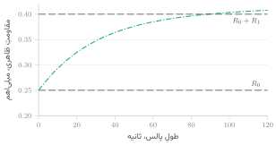
مثال 19.31 (یک عدد، پنج پاسخ) پرسش. مقاومتِ ظاهری را برای پنج طولِ پالس در دو دما بنویسید و بگویید دو آزمونِ سالانه چه زمانی قابلِ مقایسهاند.
پاسخ. خروجیِ بالا و شکل 19.19: در 25 °C از 0.251 در 0.1 s تا 0.385 mΩ در 60 s؛ در 10 °C از 0.465 تا 0.653 mΩ.
تفسیر. «مقاومت» بی طولِ پالس و دما عددی بیمعناست؛ روندِ سالانه (که افزایشِ مقاومت و پایانِ عمر را نشان میدهد) فقط میانِ آزمونهای یکسان معتبر است. همین برای آزمونِ ظرفیت درست است (مثال 19.32). وارسی: در پالسِ کوتاه \(R \to R_0 = 0.25\ \text{m}\Omega\).
- چرا مقاومتِ ظاهری با طولِ پالس بالا میرود؟
- دو آزمونِ مقاومت چه چیزهایی را باید یکسان داشته باشند؟
- اثرِ دما بر مقاومت را از خروجی بخوانید.
19.4.14 ادعای ضمانت با عدمِ قطعیتِ آزمون
ایده. در سالِ پنجم آزمونِ ظرفیت عددی میدهد و ضمانت یک کف. اما آزمون عدمِ قطعیت دارد (فصلِ ۱۶)؛ ادعا وقتی محکم است که اندازه با اطمینانِ کافی زیرِ کف باشد. منحنیِ ضمانتِ آموزشی: 2.5 % در سال.
capacity test in year 5 against a teaching warranty curve
(-2.5 %/yr: floor 87.5 % = 35.11 MWh; test sd 1 %):
measured MWh below the floor by chance truly below claim?
36.2 -1.09 0.00 no
35.3 -0.19 0.30 no
34.9 +0.21 0.73 discuss
34.3 +0.81 0.99 yes
a claim needs the test method agreed in the contract (rate,
temperature, window, rest) and its uncertainty; a result
within the uncertainty of the floor is a discussion, not a
claim (chapter 16 on uncertainty, chapter 51 on operation)مثال 19.32 (ادعا، گفتوگو یا هیچ) پرسش. برای چهار نتیجهٔ آزمون، احتمالِ اینکه ظرفیتِ واقعی زیرِ کف باشد را بنویسید و تصمیم بگیرید.
پاسخ. خروجیِ بالا: کفِ سالِ پنجم 35.11 MWh؛ 36.2: احتمال صفر، بی ادعا؛ 35.3: 0.30، بی ادعا؛ 34.9: 0.73، گفتوگو؛ 34.3: 0.99، ادعا.
تفسیر. نتیجهای که در حدودِ عدمِ قطعیتِ کف است گفتوگو است، نه ادعا: آزمونِ دوباره، روشِ مشترک، یا شاهدِ دیگر. پس قرارداد باید روشِ آزمون و عدمِ قطعیتش را از پیش بنویسد؛ وگرنه هر نتیجهٔ نزدیکِ کف به دعوا میرسد. وارسی: \(40.13 \times (1 - 0.125) = 35.11\).
- چرا نتیجهٔ کمی زیرِ کف ادعای محکم نیست؟
- چهار چیزی را که روشِ آزمونِ ظرفیت باید بگوید بنویسید.
- با عدمِ قطعیتِ 2 %، نتیجهٔ 34.3 چه میشود؟ (کیفی)
19.4.15 پایشِ سلامت از کارِ روزانه
ایده. سلامت را میتوان بی آزمونِ کامل هم برآورد کرد: بارِ شمردهشده میانِ دو حالتِ شارژ را بر تفاوتِ آن دو تقسیم کن. دو سرِ بازه با ولتاژِ مدارِ باز خوانده میشوند و خطایشان به شیبِ منحنی بسته است (مثال 19.4).
capacity estimated from a partial charge, OCV error 2 mV each end:
endpoints SOC error each capacity error
10- 90 % 0.24 / 0.33 % 0.51 %
15- 85 % 0.65 / 0.81 % 1.49 %
30- 70 % 1.91 / 1.93 % 6.79 %
(true capacity 283 Ah, 90 % health)
on LFP a capacity estimate needs endpoints on the steep
ends of the curve; a battery that never leaves the middle
cannot report its own health wellمثال 19.33 (نیم درصد یا هفت درصد) پرسش. خطای برآوردِ ظرفیت را برای سه بازه با خطای 2 mV در هر سر بنویسید.
پاسخ. خروجیِ بالا: بازهٔ 10 تا 90 %: 0.51 %؛ 15 تا 85 %: 1.49 %؛ 30 تا 70 %: 6.79 %.
تفسیر. باتریِ LFPای که هرگز به دو سرِ پنجره نمیرود نمیتواند سلامتِ خودش را خوب گزارش کند؛ قاعدهٔ کار باید گاهی چرخهٔ کامل بزند (همان الزامِ بازنشانی). در S1 کارِ روزانه از 10 تا 90 % است (مثال 19.40)، پس برآوردِ روزانه با حدودِ نیم درصد خطا ممکن است. وارسی: \(\sqrt{0.24^2 + 0.33^2}/80 = 0.51\ \%\).
- سلامت را از کارِ روزانه چگونه برآورد میکنند؟
- چرا بازهٔ میانی خطای بزرگ میدهد؟
- چه الزامی برای قاعدهٔ کار از این نتیجه میآید؟
19.4.16 حمل، جای نصب و آزمونِ محل
ایده. پیش از کار، باتری باید برسد، جا بگیرد و آزموده شود. هر سه با عدد شروع میشوند و هر سه رابط دارند: جاده و جرثقیل (عمران)، فاصلهها (مقامِ مسئول) و پنجرهٔ آزمون (اپراتور و خریدار).
transport and placing (teaching masses, A-296):
container about 38 t loaded with cells; 8 containers
304 t: abnormal loads on some roads (chapter 14 access)
shipped at a low SOC (transport rules may set it); energy
stored on the truck at 30 % SOC: 1.5 MWh a container
crane, lifting points and the foundation level are interfaces
with the civil contractor; lifting plans are specialists' workfootprint of 8 containers in 2 rows of 4 and 4 PCS skids
against a spacing s set by the authority (not given here):
s m battery area m2 with PCS row and 6 m access
1.5 346 1,404
3.0 462 1,605
6.0 735 2,049
the spacing the authority sets from the propagation evidence
can double the battery area; it belongs in the layout before the
substation and roads are fixed (chapter 14)site capacity test of S1 (teaching plan, A-296):
charge to 90 % from the plant, rest 1 h, discharge at 20 MW
to 10 %: about 29.8 MWh in 1.5 h at the revenue meter,
rest 1 h, recharge; with the round trip measured on the same
cycle; needs 20 MW of export room for 1.5 h and a sunny or
windy morning to charge: a test window agreed with the
operator and the buyer (chapter 50)مثال 19.34 (سیصد تُن، دو برابر زمین، یک صبحِ آفتابی) پرسش. جرمِ حمل، مساحتِ باتری با سه فاصلهٔ فرضی، و برنامهٔ آزمونِ ظرفیتِ محل را بنویسید و رابطِ هر کدام را نام ببرید.
پاسخ. خروجیهای بالا: هشت کانتینرِ حدودِ 38 t، جمع 304 t؛ مساحتِ باتری 346، 462 و 735 m² برای فاصلهٔ 1.5، 3 و 6 m (با مبدل و دسترسی 1,404 تا 2,049 m²)؛ آزمون: شارژ تا 90 %، دشارژِ 20 MW تا 10 % با حدودِ 29.8 MWh در 1.5 ساعت.
تفسیر. حمل به جاده و جرثقیل (فصلِ ۱۴، عمران) وصل است؛ فاصله را مقامِ مسئول از شاهدِ گسترش تعیین میکند و میتواند مساحت را دو برابر کند، پس باید پیش از ثابت شدنِ چیدمان معلوم شود (U-074)؛ آزمونِ محل جای صادرات و یک صبحِ پرتولید میخواهد، پس پنجرهٔ آزمون با اپراتور و خریدار از پیش هماهنگ میشود. برنامهٔ بلند کردن کارِ متخصص است. وارسی: \((4 \times 12.2 + 3 \times 6) \times (2 \times 2.5 + 6) = 734.8\).
- سه رابطِ حمل و نصب را با مالکِ هر کدام بنویسید.
- چرا فاصله باید پیش از چیدمان معلوم شود؟
- آزمونِ ظرفیتِ محل چه چیزهایی از نیروگاه و شبکه میخواهد؟
19.4.17 یدکِ ماژول و آزمونِ کارخانه
ایده. ماژول واحدِ تعویضپذیرِ باتری است (بخش 18.4.1). با نرخِ خرابی و زمانِ تحویل، موجودیِ یدک از توزیعِ پواسون میآید (معادلهٔ 18.4). پیش از حمل، آزمونِ کارخانه (به انگلیسی factory acceptance test) کانتینر را در کارخانه میآزماید تا عیب پیش از رسیدن به ساختگاه پیدا شود.
spare modules (768 installed; lead time 16 weeks, A-294):
failures per module-year mean in lead time stock for 95 %
0.001 0.24 1
0.002 0.47 2
0.005 1.18 3
a few modules on site turn a weeks-long wait into hours
and keep a rack out of service only for the swap| بخشِ آزمونِ کارخانه | چه چیزی اثبات میشود | شاهد |
|---|---|---|
| بازرسیِ دیداری و مدارک | ساخت مطابقِ نقشه، شناسهها | سیاههٔ بازرسی، فهرستِ شناسهها |
| عایق و پیوستگی | عایقِ مستقیم و زمین | گزارشِ آزمون |
| مدیریتِ باتری | اندازهگیری، حدها، حالتها | گزارشِ کارکرد |
| حفاظت | قطعِ رک با فرمانِ شبیهسازیشده | گزارشِ کارکرد |
| تهویه و آشکارسازی | کارکردِ تهویه، آشکارسازها، پیامها | گزارشِ کارکرد |
| ارتباط | فهرستِ نقطهها با شبیهساز (جدول 19.5) | گزارشِ نقطه به نقطه |
مثال 19.35 (دو ماژول در انبار) پرسش. موجودیِ یدکِ ماژول را برای سه نرخِ خرابی بنویسید و بگویید آزمونِ کارخانه کدام عیبها را پیش از حمل پیدا میکند.
پاسخ. خروجیِ بالا: 768 ماژول؛ با 0.001، 0.002 و 0.005 خرابی در سال، موجودیِ 1، 2 و 3 ماژول برای پوششِ 95 % در 16 هفته. آزمونِ کارخانه عیبهای سیمکشی، تنظیم، حفاظت و ارتباط را پیدا میکند (جدول 19.9)، نه عیبهای کُندِ سلول را (مثال 19.27).
تفسیر. چند ماژول در انبار انتظارِ چندهفتهای را به چند ساعت کاهش میدهد؛ ماژولهای یدک هم پیر میشوند (کمتر، در حالتِ شارژِ انبار) و هنگامِ نصب باید با رشته هماهنگ شوند. وارسی: \(768 \times 0.002 \times 16/52 = 0.47\).
- شش بخشِ آزمونِ کارخانه را نام ببرید.
- چرا آزمونِ کارخانه عیبِ کُندِ سلول را نمیبیند؟
- چرا ماژولِ یدک هنگامِ نصب باید با رشته هماهنگ شود؟
19.4.18 پیری پیش از کار و کاربردِ دوم
ایده. باتری از روزِ ساخت پیر میشود، نه از روزِ راهاندازی. ماهها انبارِ داغ در بندر یا ساختگاه سلامتی میگیرد که هیچ انرژیای نفروخته است. در پایان، کاربردِ دوم به سوابق و آزمون بسته است.
calendar fade while waiting for commissioning (A-292):
months at 15 C, 30 % at 25 C, 50 % at 35 C, 50 %
3 0.43 % 1.00 % 1.88 %
6 0.60 % 1.41 % 2.66 %
12 0.86 % 2.00 % 3.76 %
a year in a hot yard costs about as much health as a year
of work; delivery, storage SOC and shade are contract termssecond-life screening of the 768 modules at year 15 (teaching):
mean health 72.7 %, spread 3.4 points
modules at or above 70 %: 79 %
each needs its records (history, events), a capacity and
resistance test and a buyer who accepts them: traceability
from the factory pays again at the endمثال 19.36 (یک سال در حیاطِ داغ) پرسش. فرسایشِ تقویمیِ سه، شش و دوازده ماه انبار را در سه شرط بنویسید؛ و سهمِ ماژولهای سالمِ کافی برای کاربردِ دوم را در سالِ پانزدهم برآورد کنید.
پاسخ. خروجیهای بالا: دوازده ماه در 35 °C و 50 %: 3.76 %؛ در 15 °C و 30 %: 0.86 %. در سالِ پانزدهم میانگینِ سلامت 72.7 % با پراکندگیِ 3.4 واحد؛ 79 % ماژولها بالای 70 %.
تفسیر. زمانِ تحویل، حالتِ شارژِ انبار و سایه شرطهای قرارداداند (فصلهای ۳۹ و ۴۶). در پایان، ماژولی که سابقه ندارد حتی اگر سالم باشد خریدار ندارد: ردیابی از کارخانه دوباره ارزش میآفریند. وارسی: \(0.02 \times 1.88 \times 1.0 \times \sqrt{1} = 0.0376\) در 35 °C.
- چرا انبارِ داغ پیش از راهاندازی هزینه دارد؟
- سه شرطِ قراردادیِ انبار را نام ببرید.
- کاربردِ دوم به چه چیزهایی نیاز دارد؟
19.4.19 نخستین نگاه به پولِ باتری
ایده. پیش از فصلِ ۲۱، یک وارسیِ ساده: هزینهٔ سالانهٔ سرمایه و بهرهبرداریِ باتری را با ارزشِ جابهجایی مقایسه کن.
a first look at the battery's money (teaching, A-293; chapter 21):
capex 13,032 k u; yearly at 6 %, 15 years, plus 2 % opex: 1,603 k u
shifting value of a year: 371 k u (fixed prices) to 455 k u
(daily prices, optimum)
shifting pays 28 % of the yearly cost at best
shifting alone does not pay for this battery at these prices;
capacity payments, services or a larger spread must; chapter 21
prices them and the owner decides whether S1 is builtمثال 19.37 (بیست و هشت درصد) پرسش. هزینهٔ سالانهٔ باتری را حساب کنید و بگویید جابهجاییِ قیمت چه سهمی از آن را میپردازد.
پاسخ. خروجیِ بالا: سرمایه 13,032 هزار واحد؛ سالانه 1,603؛ جابهجایی 371 تا 455 هزار، یعنی حداکثر 28 %.
تفسیر. با این قیمتهای آموزشی جابهجایی بهتنهایی باتری را توجیه نمیکند؛ پرداختِ ظرفیت، خدمات (مثال 19.22)، اختلافِ قیمتِ بزرگتر یا ارزشِ تابآوری باید بقیه را بدهند. این تصمیم مالِ مالک است و فصلِ ۲۱ آن را با جریانِ نقدی میسنجد؛ این فصل فقط نشان میدهد که پرسش چیست. وارسی: \(455 / 1{,}603 = 0.28\).
- هزینهٔ سالانهٔ سرمایه را با ضریبِ اقساط حساب کنید.
- چهار منبعِ دیگرِ ارزشِ باتری را نام ببرید.
- چه کسی تصمیم میگیرد S1 ساخته شود؟
19.4.20 مقایسهٔ دو پیشنهاد با هزینهٔ ترازشدهٔ ذخیره
ایده. پیشنهادهای باتری در قیمت، بازده، فرسایش و بهرهبرداری فرق دارند. هزینهٔ ترازشدهٔ ذخیره (به انگلیسی levelised cost of storage، LCOS) همه را در یک عدد میگذارد: ارزشِ حالِ هزینهها بر ارزشِ حالِ انرژیِ تحویلی در نقطهٔ اتصال:
\[ \text{LCOS} = \frac{I_0 + \sum_{y} O_y\,(1+r)^{-y}}{\sum_{y} E_y\,(1+r)^{-y}} \tag{19.10}\]
def lcos(capex: float, opex_share: float, rt: float, fade: float,
years: int = 15, rate: float = 0.06, e_nom: float = 40.13,
window: float = 0.8, cycles: int = 365) -> tuple[float, float]:
"""Levelised cost of storage (u per MWh discharged at the POC) and
the discounted energy: cost / energy, both discounted."""
eta = math.sqrt(rt)
pv_cost = capex + sum(opex_share * capex / (1 + rate) ** y
for y in range(1, years + 1))
pv_e = sum(e_nom * window * eta * (1 - fade * y) * cycles / (1 + rate) ** y
for y in range(1, years + 1))
return 1000.0 * pv_cost / pv_e, pv_etwo battery offers over 15 years (teaching, A-298):
offer capex k u opex round trip fade/yr LCOS u/MWh
offer X 12,500 2.5 % 85 % 2.5 % 179.1
offer Y 14,000 2.0 % 88 % 1.8 % 178.9
almost the same cost per MWh: the dearer offer's better
round trip and slower fade just pay its price; the cost of
the charging energy, left out here, tips it towards Y; the
warranty terms and the evidence behind the fade (chapter 39)
decide whether either number holds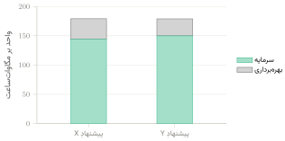
مثال 19.38 (صد و هفتاد و نُه و صد و هفتاد و نُه) پرسش. دو پیشنهاد را با معادلهٔ 19.10 مقایسه کنید و بگویید چه چیزی جز این عدد تصمیم را میگیرد.
پاسخ. خروجیِ بالا و شکل 19.20: پیشنهادِ X ارزانتر با بازده و فرسایشِ بدتر 179.1 (سرمایه 144.1، بهرهبرداری 35.0)؛ پیشنهادِ Y گرانتر 178.9 (سرمایه 149.8، بهرهبرداری 29.1) واحد بر مگاواتساعت.
تفسیر. تقریباً برابر: بازده و فرسایشِ بهترِ Y درست به اندازهٔ قیمتِ بیشترش میارزند. هزینهٔ انرژیِ شارژ (که اینجا نیامده) به سودِ Y است. اما عددِ «فرسایش» فقط وقتی ارزش دارد که پشتش ضمانت و شاهد باشد (منحنیِ ضمانت، آزمونهای چرخه، سوابق)؛ پیشنهادی که فرسایشِ کمتر را ادعا میکند ولی آن را تضمین نمیکند، در این مقایسه نباید برنده شود (فصلِ ۳۹). وارسی: مخرجِ X حدودِ \(40.13 \times 0.8 \times 0.922 \times 365 \times 8.03 \approx 86{,}760\) مگاواتساعتِ تنزیلشده است (ضریبِ 8.03: پانزده سال با 6 % و فرسایشِ 2.5 % در سال).
- معادلهٔ 19.10 را با کلمه بخوانید.
- چرا انرژیِ شارژ در مقایسه به سودِ پیشنهادِ پربازدهتر است؟
- چه شاهدی ادعای فرسایشِ کمتر را پشتیبانی میکند؟
19.4.21 نوشتنِ بندهای سنجشپذیرِ مشخصات
ایده. هر عددِ این فصل یک روز در مشخصاتِ خرید (PLP-ELE-SPC-0004) میآید. بندِ خوب مانندِ الزامِ فصلِ ۱۷ (بخش 17.4.2) سنجه، روش و معیارِ پذیرش دارد:
| موضوع | بندِ ضعیف | بندِ سنجشپذیر (نمونهٔ آموزشی) |
|---|---|---|
| ظرفیت | «باتری 40 MWh است» | انرژیِ دشارژ در نقطهٔ اتصال از 90 تا 10 % با 20 MW در دمای کانتینرِ 20 تا 30 °C پس از یک ساعت استراحت، دستکم 29.5 MWh در آزمونِ محل |
| بازده | «بازدهِ بالا» | رفتوبرگشت در همان چرخه در کنتورِ درآمد، با کمکی، دستکم 85 % |
| فرسایش | «عمرِ طولانی» | منحنیِ ضمانتِ سلامت بر حسبِ سال با پایهٔ چرخه، حالتِ شارژ و دما نوشتهشده |
| پاسخ | «سریع» | از فرمان تا 90 % توانِ خواسته در کمتر از زمانِ معین، با روشِ اندازهگیری |
| ایمنی | «ایمن» | گزارشِ آزمونِ گسترشِ همین محصول در پیکربندیِ نصب، و تأییدِ مقامِ مسئول |
- سه بخشِ بندِ سنجشپذیر را نام ببرید.
- بندِ «باتری عمرِ طولانی دارد» را سنجشپذیر کنید.
- چرا بندِ ایمنی به گزارشِ آزمون و تأییدِ مقام ارجاع میدهد؟
19.4.22 شکلدهی و تلفِ نخستین چرخه
ایده. در شکلدهی، نخستین شارژها لایهٔ سطحی را روی الکترودِ منفی میسازند؛ بخشی از لیتیم برای همیشه در این لایه میماند. سازنده الکترودها را چنان طراحی میکند که پس از این تلف ظرفیتِ نامی بماند.
formation loss of the teaching cell (A-298):
first-cycle efficiency lithium left capacity Ah loss Ah
88 % 88 % 299 41
92 % 92 % 313 27
95 % 95 % 323 17
the lithium used to build the surface layer in formation is
gone for good; the maker designs the electrodes so that the
rated capacity (here 314 Ah) remains after it; a weak
formation leaves an unstable layer that keeps growing in
service (calendar fade, section A)مثال 19.39 (بیست و هفت آمپرساعت برای یک لایه) پرسش. ظرفیتِ پس از شکلدهی را برای سه بازدهِ نخستین چرخه بنویسید و بگویید کدام به ظرفیتِ نامیِ 314 Ah میرسد.
پاسخ. خروجیِ بالا: با الکترودِ مثبتِ 340 Ah، بازدهِ 88، 92 و 95 % ظرفیتِ 299، 313 و 323 Ah میدهند؛ 92 % تقریباً به نامی میرسد.
تفسیر. کیفیتِ شکلدهی هم ظرفیت را تعیین میکند و هم پایداریِ لایه را؛ لایهٔ ناپایدار در کار رشد میکند و فرسایشِ تقویمی را تند میکند (بخش 19.2.8). پس سوابقِ شکلدهی و پیرسازی بخشی از شاهدِ عمرند. وارسی: \(340 \times 0.92 = 312.8\).
- در شکلدهی چه چیزی ساخته میشود و چه بهایی دارد؟
- چرا سازنده الکترودِ مثبت را بزرگتر از ظرفیتِ نامی طراحی میکند؟
- چرا سوابقِ شکلدهی شاهدِ عمرند؟
19.4.23 زمین کردنِ سامانهٔ مستقیم و وارسیهای یکپارچهسازی
ایده. سامانهٔ مستقیمِ باتری یا شناور است یا یک نقطهاش به زمین وصل است؛ هر کدام رفتارِ متفاوتی در خطای زمین دارد. یکپارچه کردنِ رکها در کانتینر هم وارسیهای خودش را دارد.
| ویژگی | شناور | با یک نقطهٔ زمینشده |
|---|---|---|
| نخستین خطای زمین | جریانِ کم؛ ادامهٔ کار؛ هشدارِ پایشِ عایق | جریانِ خطا؛ قطعِ حفاظت |
| خطرِ ناپیدا | خطای نخستِ دیدهنشده تا خطای دوم | کمتر |
| پیوستگیِ کار | بیشتر | کمتر |
| نیازِ کلیدی | پایشِ عایقِ پیوسته | هماهنگیِ حفاظتِ زمین |
وارسیهای یکپارچهسازیِ کانتینر (پیش از آزمونِ کارخانه): گشتاورِ اتصالهای توان با ابزارِ کالیبره و علامتگذاری، پیوستگیِ زمین و همبندی، مسیرِ کابلها دور از لبههای تیز و منابعِ گرما، نشانهگذاریِ قطبیت و شناسهها، آببندیِ ورودیها، و همخوانیِ شناسههای نصبشده با فهرستِ ردیابی (بخش 19.4.5). هر وارسی یک سابقه است که مالک در بازرسیِ کارخانه میبیند.
- رفتارِ دو روشِ زمین کردن را در نخستین خطا مقایسه کنید.
- چرا سامانهٔ شناور به پایشِ عایقِ پیوسته نیاز دارد؟
- پنج وارسیِ یکپارچهسازی را نام ببرید.
19.4.24 مواد، زنجیرهٔ تأمین و یادگیری از رخدادها
ایده. شیمیِ سلول زنجیرهٔ تأمین را تعیین میکند: LFP آهن و فسفات میخواهد و NMC نیکل، منگنز و کبالت. برخی حوزهها برای باتریها مقرراتِ ردیابی و بازیافت دارند، از جمله سندِ اطلاعاتِ باتری (گذرنامه)، سهمِ مواد بازیافتی و مسئولیتِ تولیدکننده؛ اینکه در محلِ پروژه چه حاکم است کشوری است (فصلهای ۵۵ تا ۵۷). ردیابیِ کارخانه (بخش 19.4.5) پایهٔ همهٔ اینهاست.
یادگیری از رخدادها. هر رخداد (از قطعِ رک تا آتش) یک گزارش با زمانبندی، شاهد، علت و اقدامِ اصلاحی میخواهد؛ گزارشها به سازنده، بهرهبردار و در صورتِ لزوم مقامِ مسئول میروند و اصلاحها در طرح، تنظیم یا روش ثبت میشوند. صنعتِ ذخیرهسازی از گزارشهای عمومیِ رخدادها آموخته است که چند لایهٔ آشکارسازی، جداسازی و فاصله لازم است؛ این کتاب جزئیاتِ رخدادهای خاص را بی منبعِ رسمی نقل نمیکند.
- چرا شیمی زنجیرهٔ تأمین را تعیین میکند؟
- گذرنامهٔ باتری چه چیزی را نگه میدارد؟ (کیفی)
- چهار بخشِ گزارشِ رخداد را نام ببرید.
19.5 ت. آزمایشگاهِ کار و راستیآزمایی
این آزمایشگاه یک سال کارِ باتریِ S1 را با حالتِ شارژِ ساعتی شبیهسازی میکند، چرخهها و فرسایشِ ناشی از آنها را میشمارد، بیست سال سلامت را پیشبینی میکند، شرطهای ضمانت را وارسی میکند و کنترلگر را با آزمونهای لبه میآزماید. در پایان، نقشهٔ شاهد از سلول تا نیروگاه.
برنامه:
python -m companion.ch19.lab_d19.5.1 یک سال کار با حالتِ شارژ
ایده. قاعدهٔ کار همان قاعدهٔ فصلِ ۱۵ است (مثال 15.32): ذخیرهٔ انرژیِ بُرشخورده در هر ساعت، شارژ از خروجیِ نیروگاه از ۱۰ تا ۱۵، دشارژ از ۱۸ تا ۲۲ درونِ حدِ صادرات؛ بی شارژ از شبکه و بی کار در ساعتهای قطعیِ شبکه. حالتِ شارژ در پنجرهٔ 4 تا 36 MWh میماند.
def dispatch(net, poc, outage, p_max=20.0, limit=100.0, soc0=None):
"""Hourly rule: store curtailed power at any hour; from 10:00 to
15:00 also charge from the plant's output; from 18:00 to 22:00
discharge within the export limit. No grid charging. Returns SOC
(MWh, end of hour), charge and discharge (MW, AC)."""
n = len(net)
hour = np.arange(n) % 24
soc = np.zeros(n)
ch, dis = np.zeros(n), np.zeros(n)
e = LO if soc0 is None else soc0
for k in range(n):
if not outage[k]:
cut = max(poc[k] - limit, 0.0)
c = min(cut, p_max, (HI - e) / ETA)
if 10 <= hour[k] < 15:
c += min(max(net[k], 0.0), p_max - c, (HI - e) / ETA - c)
d = 0.0
if 18 <= hour[k] < 22 and c == 0.0:
d = min(p_max, (e - LO) * ETA, max(limit - net[k], 0.0))
e += c * ETA - d / ETA
ch[k], dis[k] = c, d
soc[k] = e
return soc, ch, disa year of the S1 battery (rule of chapter 15, data pack S1):
charged 12,578 MWh, discharged 10,817 MWh AC (86 %)
equivalent full cycles of the usable window: 365
rainflow cycles: 365, of which 365 deeper than 50 %
mean SOC 36 %; hours at the bottom 5,472, at the top 2,515
SOC band hours
10- 20 % 5,475
20- 30 % 4
30- 40 % 373
40- 50 % 9
50- 60 % 350
60- 70 % 11
70- 80 % 6
80- 90 % 2,532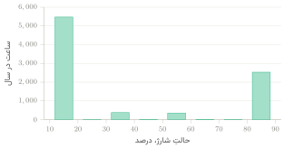
مثال 19.40 (سیصد و شصت و پنج چرخه، بیشترِ وقت ته پنجره) پرسش. انرژیِ شارژ و دشارژ، چرخههای معادل، چرخههای شمارشِ جریانِ بارانی و توزیعِ حالتِ شارژ را بنویسید.
پاسخ. خروجیِ بالا و شکل 19.21: شارژ 12,578 و دشارژ 10,817 MWh (86 %)؛ ۳۶۵ چرخهٔ معادلِ پنجره؛ ۳۶۵ چرخهٔ شمارش، همه عمیقتر از 50 %؛ حالتِ شارژِ میانگین 36 %؛ 5,472 ساعت در ته و 2,515 ساعت در سرِ پنجره.
تفسیر. باتری هر روز یک چرخهٔ کاملِ پنجره میزند و بیشترِ شبها خالی است؛ حالتِ شارژِ میانگینِ کم برای فرسایشِ تقویمی خوب است (مثال 19.5). همین شکل یک الزامِ رابط هم میسازد: بازنشانیِ حالتِ شارژِ LFP در دو سرِ پنجره هر روز ممکن است (مثال 19.4). وارسی: \(10{,}817 / 12{,}578 = 0.86\).
- چهار بخشِ قاعدهٔ کار را بنویسید.
- چرا حالتِ شارژِ میانگینِ کم برای فرسایش خوب است؟
- چرا شمارشِ جریانِ بارانی پیش از آن باید مقدارهای تکراری را حذف کند؟
19.5.2 چرخهها، فرسایش و بیست سال
ایده. چرخههای شمارش با بخش 19.2.8 فرسایشِ چرخهایِ سالانه را میدهند؛ فرسایشِ تقویمی با حالتِ شارژِ میانگین و دمای سلولها (کانتینر در 25 °C، مثال 19.14). جمعِ این دو (بی برهمکنش، سادهسازیِ آموزشی) سلامتِ بیست سال را میدهد.
fade of the S1 battery under this duty (A-292, cells at 25 C):
cycling: 1.36 % a year; calendar at mean SOC 36 %: k sqrt(t)
year calendar cycling total health data pack
1 1.8 % 1.4 % 3.1 % 96.9 % 98.0 %
5 4.0 % 6.8 % 10.8 % 89.2 % 90.0 %
10 5.6 % 13.6 % 19.3 % 80.7 % 80.0 %
15 6.9 % 20.4 % 27.3 % 72.7 % 70.0 %
20 8.0 % 27.3 % 35.2 % 64.8 % 60.0 %
health falls below 80 % in year 11 with this model; the data
pack's linear 2 %/yr is close to it; the warranty curve,
measured capacity tests and the actual duty replace both
(chapter 51)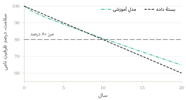
مثال 19.41 (سالِ یازدهم یا دهم) پرسش. فرسایشِ چرخهای و تقویمی و سلامت را در سالهای ۱، ۵، ۱۰، ۱۵ و ۲۰ بنویسید و با بستهٔ داده مقایسه کنید.
پاسخ. خروجیِ بالا و شکل 19.22: چرخهای 1.36 % در سال؛ سلامت 96.9، 89.2، 80.7، 72.7 و 64.8 %؛ زیرِ 80 % در سالِ یازدهم؛ بستهٔ داده در سالِ دهم.
تفسیر. دو مدلِ مستقل نزدیکِ هماند؛ این اعتماد نیست، فقط سازگاری است. سهمِ چرخهای بیشتر از تقویمی است چون باتری هر روز کامل کار میکند؛ کاهشِ عمقِ چرخه (پنجرهٔ تنگتر) فرسایش را کم و انرژیِ روزانه را هم کم میکند: یک مبادله که اقتصادِ فصلِ ۲۱ میسنجد. منحنیِ ضمانت و آزمونهای ظرفیتِ دورهای جای هر دو مدل را میگیرند. وارسی: \(365 / 5{,}346 \times 0.2 = 1.37\ \%\) با عمقِ 80 % (E10).
- چرا جمعِ سادهی دو فرسایش یک سادهسازی است؟
- سهمِ چرخهای و تقویمی در سالِ دهم را مقایسه کنید.
- تنگ کردنِ پنجره چه مبادلهای میسازد؟
19.5.3 ضمانت و آزمونهای لبه
ایده. کارِ یک سال با شرطهای ضمانت سنجیده میشود؛ و کنترلگر با آزمونهای لبه (ساعتهایی که چیزی به حد میرسد) آزموده میشود. هر آزمون یک الزام است که به کد نوشته شده و در راهاندازی دوباره روی سوابقِ کنترلگرِ واقعی اجرا میشود (فصلِ ۲۰).
warranty check of the year (teaching limits A-293):
item value limit ok
throughput MWh/yr 11,664.63 14,600.00 yes
equivalent full cycles/yr 364.52 365.00 yes
mean SOC 0.36 0.70 yes
cell temperature max C 32.60 45.00 yes
temperature from the container model at end of life with a
100 kW HVAC (b_heat); a warranty is a contract: its limits
become controller settings and monthly reportsedge-case tests of the controller:
PASS SOC stays inside 10-90 %
PASS never charges and discharges in one hour
PASS no grid charging (charge <= plant output)
PASS export with the battery <= 100 MW
PASS idle in grid-outage hours
PASS empty at 18:00 after a day of charging? no: charged
PASS empty battery, no plant output: no discharge
PASS full battery, plant at 99 MW: discharge <= 1 MW
PASS energy balance closes (MWh)
each test is a requirement written as code; the same tests
run again on the real controller's logs in commissioningمثال 19.42 (سقفِ چرخه پر شد) پرسش. کارِ سال را با چهار شرطِ ضمانت مقایسه کنید و نتیجهٔ نُه آزمونِ لبه را بنویسید.
پاسخ. خروجیهای بالا: انرژیِ گذرانده 11,665 از 14,600 MWh؛ چرخهها 364.5 از 365؛ حالتِ شارژِ میانگین 0.36 از 0.70؛ دمای بیشینه 32.6 از 45 °C: همه درست؛ نُه آزمونِ لبه همه درست.
تفسیر. شرطها برقرارند، اما سقفِ چرخه پر شده است: هر کارِ افزوده (ذخیرهٔ توان، چرخهٔ دوم در روز) ضمانت را میشکند، مگر ضمانتی با چرخههای بیشتر خریده شود. پس کاربردهای تازهٔ فصلهای ۲۰ و ۲۱ باید از بودجهٔ چرخه بگذرند. آزمونهای لبه نشان میدهند قاعده هیچگاه از پنجره بیرون نمیرود، از شبکه شارژ نمیکند، حدِ صادرات را نمیشکند و ترازِ انرژی بسته است. وارسی: \(365 \times 32 = 11{,}680\ \text{MWh}\) (P31)، نزدیکِ انرژیِ گذرانده.
- چهار شرطِ ضمانت را با مقدارِ سال بنویسید.
- چرا «سقفِ چرخه» یک بودجه است؟
- یک آزمونِ لبهٔ تازه پیشنهاد کنید و آن را به کد بنویسید.
19.5.4 نقشهٔ شاهد و رابط از سلول تا نیروگاه
ایده. هر ادعای ایمنی و کارکردِ باتری باید به یک شاهد در ترازِ درست برسد. نقشهٔ زیر برای هر تراز میگوید چه چیزی ادعا میشود، با کدام شاهد اثبات میشود، رابطش با ترازِ بالاتر چیست و مالکش کیست. مرجعها فقط با عنوانِ وارسیشده آمدهاند و هیچ بندی نقل نمیشود.
| تراز | ادعا | شاهد | رابط با ترازِ بالاتر | مالک |
|---|---|---|---|---|
| سلول | ظرفیت، مقاومت، ایمنیِ نوعی | سوابقِ صد درصدی؛ گزارشِ آزمونِ نوعی (IEC 62619:2022) | جوش، حسگر، فشار، حرارت | سازندهٔ سلول |
| ماژول | عایق، اتصال، حسگرها | آزمونِ روتینِ هر ماژول | توان، زنجیرهٔ مدیریتِ باتری، فیوز | سازندهٔ باتری |
| رک | حفاظت، حالتِ شارژ، کلید | آزمونِ کارکردِ رک | شینه، پیوندِ مدیریتِ باتری | سازندهٔ باتری |
| کانتینر | تهویه، آشکارسازی، گسترش | آزمونِ کارخانه؛ گزارشِ گسترشِ نوعی (UL 9540A) | کابلِ مستقیم، پروتکل، آتش | سازنده و یکپارچهساز |
| سامانه | توان، بازده، حدها | آزمونِ کارخانه و محل | مبدل، کنترلگر، شبکه | یکپارچهساز |
| نیروگاه | ایمنیِ جای نصب، اضطرار | تحلیلِ کاهشِ خطر، تأییدِ مقامِ مسئول | ساختگاه، امدادگران | مالک |
مثال 19.43 (کدام ادعا بی شاهد است) پرسش. برای ادعای «گسترش از یک ماژول فراتر نمیرود» بگویید شاهد کجاست و اگر نباشد چه میشود.
پاسخ. شاهد در ترازِ کانتینر است: گزارشِ آزمونِ گسترشِ نوعیِ همان محصول در پیکربندیِ نصبشده (جدول 19.12). بی آن، ادعا فقط یک گفتهٔ بازاریابی است و نمیتوان فاصلهها و رابطهای آتش را بر آن بنا کرد.
تفسیر. نقشه شکافها را نشان میدهد: ادعایی در یک تراز که شاهدش در ترازِ دیگر است، یا شاهدی برای پیکربندیِ دیگری. مالک پیش از خرید نقشه را با پیشنهادهای سازندگان پر میکند؛ هر خانهٔ خالی یک مجهول است (فصلِ ۳۹). وارسی: شش تراز، هر کدام یک ردیف.
- برای هر تراز یک ادعا و شاهدش بنویسید.
- چرا شاهدِ گسترش باید برای «پیکربندیِ نصبشده» باشد؟
- خانهٔ خالیِ نقشه چه میشود؟
19.5.5 جابهجاییِ بهینه با هزینهٔ فرسایش
ایده. قاعدهٔ ثابتِ آزمایشگاه هر روز یک چرخه میزند. برنامهریزیِ پویا (فصلِ ۵) برای هر روز بهترین برنامه را با قیمتهای همان روز پیدا میکند؛ اگر برای هر مگاواتساعتِ دشارژ یک هزینهٔ فرسایش بگذاریم (عمرِ باتری به پول)، برنامه روزهایی را که اختلافِ قیمت بازده و فرسایش را نمیپردازد کنار میگذارد. شارژ به قیمتِ همان ساعت ارزشگذاری میشود، چون انرژی از نیروگاه است که وگرنه همان ساعت فروخته میشد. قیمتهای آموزشی هر روز کمی عوض میشوند (A-295).
def daily_prices(seed: int = 195) -> np.ndarray:
"""365 x 24 teaching prices: the chapter 15 shape with a midday and
an evening level that change from day to day."""
rng = np.random.default_rng(seed)
base = src.prices()[:24]
out = np.tile(base, (365, 1)).astype(float)
mid = rng.uniform(0.7, 1.1, 365)
eve = rng.uniform(0.75, 1.35, 365)
out[:, 10:15] *= mid[:, None]
out[:, 18:22] *= eve[:, None]
return outa year of price shifting, rule against optimum (A-295):
wear u/MWh rule k u optimum k u discharged MWh cycles
0 455 455 10,832 365
10 347 347 10,832 365
20 239 241 10,357 349
30 131 144 8,814 297
(rule before wear: 455 k u)
with this price shape the fixed rule is already optimal while
wear is cheap; with a dearer wear the optimum skips days whose
spread does not pay the round trip and the wear, and earns
more with fewer cycles; a wear cost turns the battery's life
into a price the dispatch can see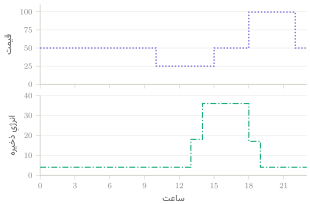
مثال 19.44 (چرخهٔ کمتر، سودِ بیشتر) پرسش. درآمدِ خالصِ سالانه، انرژیِ دشارژ و چرخهها را برای قاعده و بهینه با چهار هزینهٔ فرسایش بنویسید.
پاسخ. خروجیِ بالا و شکل 19.23: بی فرسایش هر دو 455 هزار واحد و ۳۶۵ چرخه؛ با 10 هر دو 347؛ با 20 قاعده 239 و بهینه 241 با ۳۴۹ چرخه؛ با 30 قاعده 131 و بهینه 144 با ۲۹۷ چرخه.
تفسیر. با این شکلِ قیمت، قاعدهٔ ثابت تا وقتی فرسایش ارزان است بهینه است؛ وقتی فرسایش گرانتر میشود، بهینه روزهای کماختلاف را رها میکند و با چرخهٔ کمتر سودِ بیشتری میبرد. هزینهٔ فرسایش عمرِ باتری را به زبانِ برنامهریز ترجمه میکند و با بودجهٔ چرخهٔ ضمانت (مثال 19.42) پیوند دارد. وارسی: \(455 - 10 \times 10{,}832 / 1000 = 347\).
- هزینهٔ فرسایش در برنامهریزی چه چیزی را نشان میدهد؟
- چرا شارژ به قیمتِ همان ساعت ارزشگذاری میشود؟
- در کدام روزها بهینه چرخه نمیزند؟
19.5.6 پنجرهٔ حالتِ شارژ: انرژی در برابرِ عمر
ایده. پنجرهٔ حالتِ شارژ یک انتخاب است: پنجرهٔ پهنتر هر روز انرژیِ بیشتری میفروشد ولی سلولها را عمیقتر چرخه میدهد و بیشتر نزدیکِ دو سر نگه میدارد. همان قاعدهٔ آزمایشگاه را با سه پنجره اجرا میکنیم.
the SOC window: energy against life (lab D rule, one year):
window discharged MWh value k u cycles/yr health yr 10
20- 80 % 8,123 279 365 84.8 %
10- 90 % 10,817 371 365 80.7 %
5- 95 % 12,160 417 364 78.6 %
a wider window sells more energy each day but ages the cells
faster (deeper cycles, more time near the ends); the choice
is an economic one (chapter 21) bounded by the warrantyمثال 19.45 (سه پنجره) پرسش. انرژیِ دشارژ، ارزش با قیمتهای آموزشی، چرخهها و سلامتِ سالِ دهم را برای سه پنجره بنویسید و مبادله را توضیح دهید.
پاسخ. خروجیِ بالا: 20 تا 80 %: 8,123 MWh، 279 هزار، سلامتِ 84.8 %؛ 10 تا 90 %: 10,817، 371، 80.7 %؛ 5 تا 95 %: 12,160، 417، 78.6 %؛ هر سه ۳۶۵ چرخه.
تفسیر. پهنترین پنجره 50 % بیشتر از تنگترین میفروشد و 6.2 واحدِ درصد سلامت در ده سال میگیرد. کدام بهتر است به ارزشِ امروز در برابرِ ظرفیتِ فردا بسته است (فصلِ ۲۱) و ضمانت حدِ آن را میگذارد: بسیاری از ضمانتها پنجره را خودشان تعیین میکنند. وارسی: \(12{,}160 / 8{,}123 = 1.50\).
- چرا پنجرهٔ پهنتر سلول را زودتر پیر میکند؟
- ارزشِ اضافهٔ پنجرهٔ پهن را با سلامتِ ازدسترفته مقایسه کنید.
- چه کسی پنجره را در نهایت تعیین میکند؟
19.5.7 عدمِ قطعیتِ سلامت
ایده. ثابتهای قانونهای فرسایش را دقیق نمیدانیم. اگر هر کدام با عدمِ قطعیتی (اینجا حدودِ 30 % برای ثابتِ تقویمی و عمرِ چرخهای، 10 % برای نما) بیاید، سلامتِ سالِ دهم یک توزیع میشود، مانندِ تولیدِ فصلِ ۱۶. نمونهگیریِ مونتکارلو با همان کارِ آزمایشگاه:
health after ten years with uncertain fade laws (Monte Carlo, n 4,000):
P90 (health exceeded by 90 % of draws) 73.6 %
P50 80.3 %; P10 85.4 %
chance of falling below 80 %: 47 %
a sizing on the median leaves about half the cases short;
augmentation keeps the choice open until measured health
shows which case the battery is in (chapter 16 for P-values)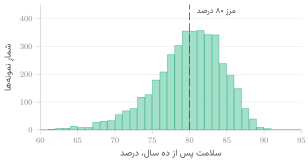
مثال 19.46 (نیم از نیم) پرسش. P90، P50 و P10ِ سلامتِ سالِ دهم و احتمالِ افتادن زیرِ 80 % را بنویسید و بگویید چه پیامدی برای اندازه کردن دارد.
پاسخ. خروجیِ بالا و شکل 19.24: P90 73.6 %، P50 80.3 %، P10 85.4 %؛ احتمالِ زیرِ 80 % 47 %.
تفسیر. اندازه کردن بر پایهٔ میانه نیمی از حالتها را کوتاه میگذارد؛ اندازه کردن بر پایهٔ P90 (73.6 %) باتریِ بزرگتری میخواهد. افزایشِ ظرفیت (مثال 19.15) راهِ سوم است: تصمیم را تا زمانی نگه میدارد که سلامتِ اندازهگیریشده (مثال 19.33) نشان دهد باتری در کدام حالت است. وارسی: 80.3 % نزدیکِ 80.7 %ِ مدلِ قطعی (مثال 19.41).
- P90ِ سلامت را تعریف کنید.
- چرا اندازه کردن بر میانه ریسکی است؟
- افزایشِ ظرفیت چگونه عدمِ قطعیت را مدیریت میکند؟
19.5.8 دسترسپذیریِ خودِ باتری و حالتهای امن
ایده. باتری هم خراب میشود: مبدل، قطعِ رکها با حفاظت، و تهویه. دسترسپذیریِ انرژیمحور سهمِ انرژیای است که با این خرابیها از دست نمیرود. هر خرابی باید باتری را به یک حالتِ ایمنِ تعریفشده ببرد.
availability of the battery itself (teaching rates, A-298):
item failures/yr hours each power lost while out
PCS (4 x 5 MW) 2.0 48 a quarter
rack trips (96) 192.0 8 a 96th
HVAC unit (8) 2.4 24 one container
energy-based availability about 99.46 %
frequent rack trips cost little energy but much attention;
the PCS dominates the lost energy; spares and response times
are what the service contract buys (chapter 51)| رخداد | حالتِ ایمن | چه کسی باز میگرداند |
|---|---|---|
| قطعِ شبکه | مبدل توانِ صفر؛ رکها وصل؛ کمکی از پشتیبان | خودکار پس از بازگشتِ شبکه |
| قطعِ ارتباط با کنترلگر | مبدل به توانِ صفر در زمانِ معین | خودکار پس از بازگشتِ ارتباط |
| حدِ سلول شکسته | رک جدا؛ حالتِ «قطعشده» | بهرهبردار پس از بازرسی |
| هشدارِ گاز یا دود | رکها و کانتینر جدا؛ تهویه طبقِ طرح؛ اعلام | بهرهبردار پس از تأییدِ ایمنی |
| توقفِ اضطراری | همه جدا | بهرهبردار پس از وارسی |
مثال 19.47 (نود و نُه و نیم درصد) پرسش. دسترسپذیریِ انرژیمحورِ باتری را با سه گونه خرابی برآورد کنید و بگویید کدام بیشترین انرژی و کدام بیشترین کار را میگیرد.
پاسخ. خروجیِ بالا: حدودِ 99.46 %؛ مبدل بیشترین انرژی (دو خرابی در سال، ۴۸ ساعت، یکچهارمِ توان)؛ قطعِ رکها بیشترین کار (۱۹۲ بار در سال، هر کدام کمانرژی).
تفسیر. قراردادِ خدمات برای مبدل زمانِ پاسخ و یدک میخرد و برای قطعِ رکها علتیابی؛ قطعِ پرشمارِ رک اغلب نشانهٔ تنظیم یا حسگرِ بد است، نه خرابیِ سلول. حالتهای امن باید پیش از خرید در جدول 19.13 نوشته و در راهاندازی آزموده شوند (فصلهای ۲۰ و ۵۰). وارسی: \(2 \times 48/8760 \times 0.25 = 0.27\ \%\) برای مبدل.
- دسترسپذیریِ انرژیمحور را تعریف کنید.
- برای «قطعِ ارتباط» حالتِ ایمن و بازگرداننده را بنویسید.
- چرا قطعِ پرشمارِ رک نشانهٔ تنظیمِ بد است؟
19.5.9 باتری در بیانیهٔ تولید و تخمینِ روزانهٔ حالتِ شارژ
ایده. باتری انرژیِ تحویلی را کم و ارزش را زیاد میکند؛ بیانیهٔ تولیدِ فصلِ ۱۵ باید هر دو را نشان دهد. و تخمینِ حالتِ شارژ که کنترلگر به آن تکیه میکند، با یک بازنشانیِ روزانه در سرِ تندِ منحنی پایدار میماند.
what S1 does to the yield statement (model 15.1, lab D rule):
S0 net 295.14 GWh, value 14,042 k u (teaching prices)
battery charged 12,578 MWh, discharged 10,817 MWh
S1 net 293.38 GWh (-1.76 GWh), value 14,413 k u (+371)
the yield statement shows the round-trip loss as a loss line
(chapter 15) and the value belongs to the price model; the
auxiliaries of the battery are a second loss line if they
are taken from the plantSOC over a month of one cycle a day: counting with a sensor
offset, with and without a daily OCV reset at the bottom of
the cycle (2 mV error):
offset A no reset, 30 days daily reset: largest mean
0.50 114.6 % 4.30 % 1.78 %
0.05 11.5 % 0.88 % 0.23 %
the reset holds the error to one day's drift plus the reset
error; with a good sensor the two together give a few
tenths of a per cent; the dispatch must visit the steep
end of the window regularly for the reset to workمثال 19.48 (یک و هفتدهم گیگاواتساعت کمتر، سیصد و هفتاد و یک هزار بیشتر) پرسش. اثرِ S1 بر انرژی و ارزشِ سالانه را بنویسید؛ و خطای حالتِ شارژ را در یک ماه با و بی بازنشانی برای دو خطای صفرِ جریانسنج مقایسه کنید.
پاسخ. خروجیهای بالا: انرژیِ خالص از 295.14 به 293.38 GWh (−1.76)، ارزش از 14,042 به 14,413 هزار (+371). بی بازنشانی 114.6 % و 11.5 %؛ با بازنشانیِ روزانه بیشینه 4.30 و 0.88 %، میانگین 1.78 و 0.23 %.
تفسیر. بیانیهٔ تولید تلفِ رفتوبرگشت را سطرِ تلف مینویسد و ارزش را به مدلِ قیمت میسپارد؛ «باتری تولید را زیاد میکند» نادرست است. بازنشانی خطا را به یک روز رانش محدود میکند و با جریانسنجِ خوب به چند دهمِ درصد میرسد؛ شرطش این است که برنامهٔ کار هر روز به سرِ تندِ پنجره برود. وارسی: \(10{,}817 - 12{,}578 = -1{,}761\ \text{MWh}\).
- چرا باتری انرژیِ خالص را کم میکند؟
- بازنشانیِ روزانه خطا را به چه چیزی محدود میکند؟
- شرطِ بازنشانیِ روزانه برای برنامهٔ کار چیست؟
19.5.10 سندهایی که از سازنده خواسته میشوند
ایده. شاهدهای نقشهٔ جدول 19.12 در سندهای مشخصی میآیند. فهرستِ کمینه، که در درخواستِ پیشنهاد (فصلِ ۳۹) میآید:
| سند | برای چه | فصل |
|---|---|---|
| برگههای دادهٔ سلول، ماژول، رک، کانتینر | ساختار، حدها، ردهها | ۱۹ |
| گزارشهای آزمونِ نوعیِ سلول و باتری | ایمنیِ نوعی | ۱۹، ۴۴ |
| گزارشِ آزمونِ گسترش در پیکربندیِ نصب | فاصله، رابطهای آتش | ۱۹، ۳۲ |
| ورودیهای تحلیلِ کاهشِ خطر (گاز، گرما، سناریوها) | تحلیلِ کاهشِ خطر | ۳۱، ۳۲ |
| منحنی و شرطهای ضمانت با پایهٔ چرخه | اندازه، کار، ادعا | ۱۹، ۲۱ |
| برنامهٔ آزمونِ کارخانه و محل | پذیرش | ۴۴، ۵۰ |
| سندهای حمل و خلاصهٔ آزمونِ حمل | حمل و بیمه | ۴۶ |
| کتابچهٔ بهرهبرداری و نگهداری، فهرستِ یدک | کار، یدک | ۵۱، ۵۲ |
| برنامهٔ پسگرفتن و بازیافت | پایانِ عمر | ۵۳ |
19.5.11 توالیِ راهاندازیِ باتری
ایده. راهاندازی از ایمنترین گام به پرخطرترین میرود و هر گام یک نقطهٔ توقف با شاهد دارد. اینجا فقط ترتیب و شاهد آمده است؛ روشهای کار روی تجهیزاتِ برقدار در این کتاب نیست.
| گام | چه چیزی اثبات میشود | شاهد | چه کسی |
|---|---|---|---|
| تکمیلِ مکانیکی | نصب، اتصالها، زمین، تهویه | سیاههٔ بازرسی | پیمانکار |
| آزمونهای بیبرق | عایق، پیوستگی، نقطهبهنقطه | گزارشها | افرادِ واجدِ شرایط |
| روشن کردنِ مدیریتِ باتری و کمکی | اندازهگیری، حدها، آشکارسازها | گزارشِ کارکرد | سازنده |
| وصلِ رکها و مبدل | پیششارژ، همخوانیِ ولتاژ | گزارشِ کارکرد | سازنده با مجوزِ کار |
| آزمونهای کارکردی | حالتها، حالتهای امن (جدول 19.13) | گزارشِ کارکرد | یکپارچهساز |
| آزمونِ ظرفیت و رفتوبرگشت | مثال 19.34 | گزارشِ آزمون | مالک و سازنده |
| آزمونهای شبکه | پاسخ، کدِ شبکه | گزارشِ انطباق | اپراتور (فصلِ ۲۸) |
آزمونهای عایق و هر کار روی تجهیزاتِ برقدار یا رکهای شارژشده فقط با روشهای ایمنِ پروژه، مجوزِ کار و افرادِ واجدِ شرایط انجام میشود؛ رکهای شارژشده حتی با کلیدِ باز ولتاژِ خطرناک دارند.
- نُه سندِ کمینه از سازنده را نام ببرید.
- چرا راهاندازی از آزمونهای بیبرق آغاز میشود؟
- چرا رکِ شارژشده با کلیدِ باز هم خطرناک است؟
19.5.12 کاربردهای باتری و انباشتنِ آنها
ایده. باتری چند کاربرد میتواند داشته باشد و هر کدام شکلِ کارِ خودش را دارد (توانمحور یا انرژیمحور)، چرخههای خودش و وابستگیِ خودش به قرارداد و قواعدِ شبکه (فصلهای ۲۰ و ۲۱). انباشتن (به انگلیسی stacking) چند کاربرد را با هم میآورد، اما هر کدام بخشی از پنجره و بودجهٔ چرخه را میگیرد.
| کاربرد | شکلِ کار | چرخه | وابستگی | اثر بر طراحی |
|---|---|---|---|---|
| جابهجاییِ انرژی | انرژیمحور، روزانه | زیاد، عمیق | قیمت، قرارداد | ظرفیتِ انرژی، ضمانتِ چرخه |
| ظرفیتِ پیک | انرژی در ساعتهای کم | کم | قراردادِ ظرفیت | مدت، دسترسپذیری |
| پاسخِ بسامد | توانمحور، سریع | کوچک و فراوان | قواعدِ شبکه | مبدل، زمانِ پاسخ، حالتِ شارژِ میانه |
| ذخیره | توانِ آماده | کم مگر فراخوانی | قواعد و قرارداد | جای خالی در پنجره |
| پشتیبانیِ ولتاژ | توانِ واکنشی | نزدیکِ صفر | کدِ شبکه | ردهٔ مبدل (مثال 18.16) |
| راهاندازیِ سیاه و جزیره | سازندهٔ شبکه | کم | اجازهٔ اپراتور | مبدلِ سازنده، ذخیره (مثال 19.21) |
| بازگرداندنِ بُرش | انرژیمحور | کم تا زیاد | حدِ صادرات | کوپل (مثال 18.11) |
stacking a 5 MW reserve on the shifting duty (teaching, A-298):
headroom kept both ways: 10 MWh of the usable window
shifting given up: 3,385 MWh a year, 116.1 k u at a 34.3 u/MWh spread
reserve earned outside the 9 shifting hours: 109.5 k u at 4 u/MW/h
net -6.6 k u a year; the reserve also uses
cycles from the warranty budget when it is called
stacking pays only if the reserve price and the rules allow;
the plant controller must keep both duties apart (chapter 20)مثال 19.49 (تقریباً سربهسر) پرسش. اگر 5 MW ذخیره برای یک ساعت در هر دو سو روی کارِ جابهجایی انباشته شود، جابهجاییِ ازدسترفته و درآمدِ ذخیره را با قیمتهای آموزشی مقایسه کنید.
پاسخ. خروجیِ بالا: 10 MWh جای خالی؛ 3,385 MWh جابهجاییِ کمتر و 116.1 هزار واحد ارزش؛ درآمدِ ذخیره 109.5 هزار؛ خالص −6.6 هزار در سال.
تفسیر. با این قیمتها انباشتن سود ندارد؛ با قیمتِ ذخیرهٔ کمی بیشتر دارد. افزون بر پول، ذخیرهٔ فراخوانده چرخه مصرف میکند و بودجهٔ ضمانت پر است (مثال 19.42). پس پیش از افزودنِ هر کاربرد سه پرسش: جای خالی، چرخه، و قواعد. وارسی: \(10 \times 0.927 \times 365 = 3{,}384\).
- هفت کاربردِ باتری را با شکلِ کارِ هر کدام نام ببرید.
- انباشتن کدام دو منبعِ محدود را تقسیم میکند؟
- قیمتِ سربهسرِ ذخیره را در این مثال برآورد کنید.
19.5.13 شاخصهای ماهانهٔ باتری و خطاهای رایج
ایده. باتری در بهرهبرداری با چند شاخصِ ماهانه پایش میشود که هر کدام به یک شرطِ ضمانت یا یک ریسک وصل است:
| شاخص | پیوند | مثال |
|---|---|---|
| انرژیِ گذرانده و چرخهها (با پایه) | ضمانت | مثال 19.10 |
| حالتِ شارژِ میانگین و ساعتها در دو سر | فرسایش، بازنشانی | مثال 19.40 |
| دمای بیشینه و پراکندگیِ دما | فرسایش، ضمانت | مثال 19.20 |
| رفتوبرگشت و کمکی | بیانیهٔ تولید | مثال 19.19 |
| سلامتِ برآوردی و آزمونِ ظرفیت | ضمانت، افزایشِ ظرفیت | مثال 19.33 |
| قطعِ رکها، هشدارها، رخدادها | ایمنی، تنظیم | مثال 19.47 |
| آزمونهای دورهایِ آشکارسازها | حفاظت | مثال 19.54 |
| خطای رایج | چرا نادرست است | درس |
|---|---|---|
| «40 MWh یعنی 40 MWh در شبکه» | پنجره، بازده و سلامت هر کدام سهمی میبرند | مثال 19.55 |
| «تهویه برای باتریِ نو کافی است» | پایانِ عمر و ساعتِ داغ 118 kW میخواهند | مثال 19.14 |
| «نمونهگیری سلولِ معیوب را میگیرد» | فقط محمولههای بد را | مثال 19.25 |
| «حالتِ شارژ را از ولتاژ میخوانیم» | فلاتِ LFP | مثال 19.4 |
| «باتری تولید را بیشتر میکند» | انرژی کم، ارزش زیاد | مثال 19.48 |
| «سامانهٔ اطفا آتش را حل میکند» | سه هدفِ جدا، شاهدِ محصول | مثال 19.51 |
| «۳۶۵ چرخه در سال» بی پایه | سه پایه، سه عدد | مثال 19.10 |
| «جابهجایی باتری را توجیه میکند» | حداکثر 28 % هزینه | مثال 19.37 |
- هفت شاخصِ ماهانه را با پیوندِ هر کدام بنویسید.
- سه خطا از جدول 19.18 را با مثالِ عددی توضیح دهید.
- یک شاخصِ تازه پیشنهاد کنید و پیوندش را بنویسید.
19.5.14 باتری برای مشتریِ صنعتی
ایده. در نسخهٔ خودمصرفیِ فصلِ ۱۷ (مثال 17.27)، نیروگاه 76.2 % انرژیِ کارخانه را همزمان میدهد. باتری مازادِ ساعتهای پرتولید را به ساعتهای کمتولید میبرد؛ با چند اندازه میسنجیم پوشش چقدر بالا میرود.
batteries serving the chapter 17 factory (A-284; S1 = 20 MW, 40 MWh):
factory 167.0 GWh; covered by the plant alone 127.2 GWh (76.2 %)
battery added GWh cover
20 MW, 40 MWh 7.8 80.8 %
40 MW, 80 MWh 13.4 84.2 %
40 MW, 160 MWh 20.9 88.7 %
a battery moves surplus into the next shortfall but cannot
bridge calm, dark days; doubling it adds less than the first
one did: storage for a flat load meets falling returnsمثال 19.50 (هشتاد، هشتاد و چهار، هشتاد و نُه) پرسش. پوششِ انرژیِ کارخانه را بی باتری و با سه اندازهٔ باتری بنویسید و بازدهِ هر مگاواتساعتِ ظرفیتِ افزوده را مقایسه کنید.
پاسخ. خروجیِ بالا: بی باتری 76.2 %؛ 20 MW و 40 MWh: +7.8 GWh، 80.8 %؛ 40 MW و 80 MWh: +13.4، 84.2 %؛ 40 MW و 160 MWh: +20.9، 88.7 %.
تفسیر. نخستین 40 MWh حدودِ 0.20 GWh برای هر مگاواتساعتِ ظرفیت میافزاید، دومی 0.14 و هشتاد مگاواتساعتِ بعدی 0.09: بازدهِ کاهنده. باتری روزها را پل میزند، نه روزهای آرام و تاریک را؛ برای پوششِ نزدیک به کامل، نیروگاهِ بزرگتر، قراردادِ خریدِ پشتیبان یا ذخیرهٔ بلندمدت لازم است (فصلهای ۲۰ و ۲۱). وارسی: \(7.8 / 40 = 0.195\) و \((20.9 - 13.4)/80 = 0.094\).
- چرا باتری روزهای آرام و تاریک را پل نمیزند؟
- بازدهِ هر مگاواتساعتِ ظرفیت را برای سه اندازه حساب کنید.
- سه راهِ دیگر برای پوششِ بیشتر را نام ببرید.
19.6 ث. رابطهای حفاظت در برابرِ آتشِ باتری
آتشِ باتری یک مسئلهٔ مهندسیِ حریق و برنامهریزیِ اضطرار است، نه یک قطعه که بخریم و کار تمام شود. این بخش رابطهایی را که معماری باید جا دهد نام میبرد، میگوید مقدارِ هر کدام از کجا میآید، و هدفهای مختلفِ «اطفا» را از هم جدا میکند. مقدارها، فاصلهها و سامانهها را مقامِ مسئول، تحلیلِ کاهشِ خطر و آزمونِ بزرگمقیاسِ محصول تعیین میکنند (فصلهای ۳۱ و ۳۲).
این بخش هیچ سامانهٔ اطفا، فاصله، حجمِ آب، روشِ تهویهٔ ضدانفجار یا روشِ عملیاتِ امدادی را تجویز نمیکند. نمونههایی از استانداردهای نصب (مثلاً NFPA 855:2026) فقط برای نشان دادنِ آنچه پرسیده میشود آمدهاند؛ اینکه کدام مقررات در محلِ پروژه حاکم است، کشوری است و با مقامِ مسئول (فصلهای ۵۵ تا ۵۷).
19.6.1 آشکارسازی، گاز و گسترش
ایده. چند لایهٔ آشکارسازی هست که هر کدام چیزِ دیگری را میبیند: سامانهٔ مدیریتِ باتری (ولتاژ و دمای سلول؛ گاهی پیشنشانه پیش از گریز)، آشکارسازِ گاز (گازِ خروجی از سلول در آغازِ رخداد)، آشکارسازِ دود و آشکارسازِ گرما (دیرتر). شاهدِ گاز و گسترش، یعنی چه گازی، چه مقدار، با چه سرعتی و تا کجا، از آزمونهای سلول تا کانتینرِ همان محصول میآید و پایهٔ طراحیِ آشکارسازی و تهویه است.
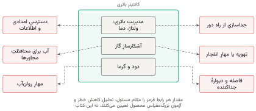
- چهار لایهٔ آشکارسازی را به ترتیبِ زمان نام ببرید.
- شاهدِ گاز و گسترش چه چیزهایی را میگوید؟
- چرا سامانهٔ مدیریتِ باتری گاهی پیش از همه میبیند؟
19.6.2 رابطها و مالکِ مقدارشان
ایده. هر رابط یک هدف، یک شاهد و یک مالکِ مقدار دارد:
| رابط | هدف | شاهد | مالکِ مقدار |
|---|---|---|---|
| تهویه یا مهارِ انفجار | نگه داشتنِ گاز زیرِ حدِ اشتعال یا مهارِ فشار | ترکیب و مقدارِ گاز از آزمون، طراحیِ مهندسیِ حریق | مقامِ مسئول، مهندسِ حریق |
| فاصله و دیواره | جلوگیری از گسترش به کانتینر و مجاورها | آزمونِ بزرگمقیاس، تحلیلِ کاهشِ خطر | مقامِ مسئول |
| جداسازیِ از راه دور | قطعِ برق و توقفِ تهویه یا شارژ بی ورود | آزمونِ کارکرد در راهاندازی | طراحِ برق، بهرهبردار |
| حفاظتِ مجاورها | خنک نگه داشتنِ تجهیز و ساختمانِ کنار | تحلیلِ تابش، برنامهٔ اضطرار | مقامِ آتشنشانی |
| دسترسیِ امدادی و اطلاعات | رسیدنِ امن و دانستنِ خطرها | نقشه، جعبهٔ اطلاعات، تمرین | بهرهبردار، مقامِ آتشنشانی |
| مهارِ روانآب | جلوگیری از رفتنِ آبِ آلوده به خاک و آب | طرحِ زهکشی و مهار | مقامِ محیطِ زیست |
- شش رابطِ آتشِ باتری را نام ببرید.
- چرا جداسازیِ از راه دور «بی ورود» است؟
- مالکِ مقدارِ فاصله کیست و شاهدش چیست؟
19.6.3 هدفهای اطفا و حدِ ادعاها
ایده. «اطفا» سه هدفِ جدا دارد که نباید با هم قاطی شوند:
- خاموش کردنِ آتشِ سلولهای درگیر؛ در گریزِ حرارتی دشوار است، چون واکنش درونِ سلول است و اکسیژنِ بیرونی لازم ندارد.
- جلوگیری از گسترش به سلولها، ماژولها و رکهای دیگر؛ با دیواره، فاصله، خنککاری و طراحیِ محصول.
- حفاظتِ مجاورها: کانتینرهای دیگر، پست، ساختمانها و پوشش گیاهی.
حدِ ادعاها: ادعای سازنده که «سامانهٔ ما آتش را خاموش میکند» باید بگوید کدام هدف، با کدام شاهد و در کدام پیکربندی. ادعایی که هدفِ ۱ را میگوید ولی شاهدش برای پیکربندیِ دیگر است، پایهٔ طراحی نیست. الزاماتِ ویژهٔ هر شیمی و محصول (گاز، گرما، رفتار با آب) از شاهدِ همان محصول وارسی میشوند.
مثال 19.51 (سه ادعا، سه شاهد) پرسش. سازندهای سه ادعا دارد: «اطفای خودکار در کانتینر»، «گسترش به کانتینرِ کناری نمیرسد»، «آبِ آتشنشانی لازم نیست». هر کدام را به هدف و شاهدش ببرید.
پاسخ. اولی هدفِ ۱ یا ۲ است (باید بگوید کدام)؛ شاهد: آزمونِ بزرگمقیاس با همان سامانه. دومی هدفِ ۳ است؛ شاهد: آزمون در فاصلهٔ پیشنهادی و تحلیلِ تابش. سومی ادعا دربارهٔ برنامهٔ اضطرار است و تصمیمش با مقامِ آتشنشانی است، نه سازنده.
تفسیر. هر ادعا یا به شاهدی در جدول 19.12 میرسد یا یک مجهول است؛ مالک نمیتواند مسئولیتِ تصمیمِ مقامِ مسئول را به سازنده بدهد. وارسی: سه ادعا، سه هدف از سه هدفِ فهرست.
- سه هدفِ اطفا را تعریف کنید.
- چرا خاموش کردنِ سلول در گریز دشوار است؟
- یک ادعای سازنده بنویسید که «حدِ ادعا» را رعایت کند.
19.6.4 تحلیلِ یک رخدادِ فرضی
ایده. یک رخدادِ فرضی را مانندِ تحلیلِ پس از رخداد بررسی میکنیم: چه چیزی، کی و با کدام لایه دیده شد؛ طرحِ محصول چقدر زمان داد؛ و کدام رابطها باید کار میکردند. زمانها آموزشیاند (A-294) و هیچ عملیاتِ امدادی را توصیف نمیکنند.
LAYERS = { # detection layer: minutes after the first cell vents (teaching)
"BMS (voltage, temperature)": -10.0, # may see a precursor first
"off-gas detector": 1.0,
"smoke detector": 5.0,
"heat detector": 15.0,
}
DESIGNS = { # design: minutes for the event to pass to the next cell
"no barriers": 3.0,
"cell barriers": 20.0,
"cell barriers, cooled": 45.0,
}teaching timeline of a cell event in a module (A-294):
detection layer minutes after the first vent
BMS (voltage, temperature) -10
off-gas detector 1
smoke detector 5
heat detector 15
design minutes per cell to the module edge
no barriers 3 78
cell barriers 20 520
cell barriers, cooled 45 1170
the earlier layers buy time for isolation and for the
emergency plan; the barrier buys time for everything else;
the event may also stop by itself between cells; only
product tests show which (UL 9540A, NFPA 855 as examples of
what is asked; the authority decides what applies)مثال 19.52 (رکِ هفتم، کانتینرِ سوم) پرسش. فرض کنید سلولی در رکِ هفتمِ کانتینرِ سوم به گریز میرود. با زمانهای آموزشی: (۱) لایههای آشکارسازی کی میبینند؟ (۲) رخداد در سه طرح کی به لبهٔ ماژول میرسد؟ (۳) کدام رابطها در این فاصله باید کار کنند؟ (۴) پس از رخداد چه شاهدی جمع میشود؟
پاسخ. خروجیِ بالا:
- سامانهٔ مدیریتِ باتری شاید ده دقیقه پیشتر (پیشنشانه)، آشکارسازِ گاز در یک دقیقه، دود در پنج، گرما در پانزده دقیقه.
- بی دیواره 78 دقیقه تا لبهٔ ماژول؛ با دیوارهٔ سلول 520؛ با دیواره و خنککاری 1,170 دقیقه (اگر رخداد خودش میانِ سلولها نایستد).
- جداسازیِ رک و کانتینر از راه دور، تهویه یا مهارِ انفجار طبقِ طرح، اعلام به اپراتور و امدادگران طبقِ برنامهٔ اضطرار، حفاظتِ مجاورها طبقِ تصمیمِ مقامِ آتشنشانی، مهارِ روانآب.
- سوابقِ سامانهٔ مدیریتِ باتری و آشکارسازها با برچسبِ زمانِ درست، ردیابیِ محمولهٔ سلول، گزارشِ امدادگران و بازرسیِ محل؛ سپس تحلیلِ علت و اصلاحِ طرح یا روش.
تفسیر. لایههای زودتر برای جداسازی و برنامهٔ اضطرار زمان میخرند؛ دیواره برای همهچیز زمان میخرد. اما این عددها فقط شکلِ مسئله را نشان میدهند؛ زمانِ واقعی و اینکه رخداد خودش میایستد یا نه را فقط آزمونِ محصول نشان میدهد. برچسبِ زمانِ درست (فصلِ ۱۲) در تحلیلِ رخداد همانقدر مهم است که در پیشبینیِ تولید. وارسی: \(3 \times 26 = 78\) و \(20 \times 26 = 520\) (P30).
- چهار پرسشِ تحلیلِ رخداد را بنویسید.
- چرا برچسبِ زمانِ درست در تحلیلِ رخداد مهم است؟
- کدام بخشِ پاسخ را فقط آزمونِ محصول میدهد؟
19.6.5 تحلیلِ کاهشِ خطر و برنامهٔ اضطرار
ایده. دو سندِ اصلی رابطهای آتش را به هم وصل میکنند: تحلیلِ کاهشِ خطر (به انگلیسی hazard mitigation analysis) که سناریوها، پیامدها و اقدامها را با شاهد مینویسد، و برنامهٔ اضطرار که میگوید در رخداد چه کسی چه میکند و چه اطلاعاتی دارد. ساختارِ هر دو را میتوان بی تجویزِ مقدار نوشت:
| بخشِ تحلیلِ کاهشِ خطر | محتوا |
|---|---|
| سامانه و پیکربندی | محصول، شیمی، ساختار، جای نصب، مجاورها |
| سناریوها | خرابیِ سلول، خرابیِ حفاظت، آتشِ بیرونی، آسیبِ مکانیکی، خطای تهویه |
| پیامدها با شاهد | گسترش، گاز، فشار، تابش، روانآب؛ از آزمونهای محصول |
| اقدامها | آشکارسازی، جداسازی، تهویه یا مهارِ انفجار، فاصله، حفاظتِ مجاورها |
| فرضها و مجهولها | آنچه هنوز شاهد ندارد، با مالک |
| تأیید | مقامِ مسئول |
برنامهٔ اضطرار دستکم اینها را دارد: شمارهٔ تماسها و زنجیرهٔ خبر، نقشهٔ ساختگاه با راههای دسترسی و جای کانتینرها، شیمی و خطرهای هر کانتینر، نقطههای جداسازی، جای اتصالِ آب، جای تجمع، و برنامهٔ تمرینِ مشترک با امدادگرانِ محلی. روشِ عملیاتِ امدادی کارِ خودِ امدادگران است و این کتاب آن را نمیدهد.
runoff containment around a pair of containers (structure only):
rain on the bunded area: 400 m2 x 50 mm design rain = 20 m3
plus the water the fire plan may use: V_fire (from the fire
authority and the hazard mitigation analysis; not given here)
plus freeboard; then a valve, a sampling point and a disposal
route agreed with the environmental authority
the book gives the structure, not the volumeمثال 19.53 (ساختار بی عدد) پرسش. برای مهارِ روانآبِ دو کانتینر ساختارِ حجم را بنویسید و بگویید کدام جزء را این کتاب نمیدهد و چرا.
پاسخ. خروجیِ بالا: بارانِ طراحی روی سطحِ مهارشده (400 m² × 50 mm = 20 m³، آموزشی) بهاضافهٔ حجمِ آبی که برنامهٔ آتش ممکن است به کار ببرد (\(V_\text{fire}\)) بهاضافهٔ حاشیه؛ سپس شیر، نقطهٔ نمونهبرداری و راهِ دفع.
تفسیر. \(V_\text{fire}\) را مقامِ آتشنشانی و تحلیلِ کاهشِ خطر تعیین میکنند؛ گذاشتنِ عددی آموزشی جای آن، طرح را بر چیزی بنا میکند که هیچکس تأیید نکرده است. ساختار اما از امروز روشن است: جای مهار، شیر و نمونهبرداری در نقشه میآیند و حجم بعداً پر میشود. وارسی: \(400 \times 0.05 = 20\ \text{m}^3\).
- شش بخشِ تحلیلِ کاهشِ خطر را نام ببرید.
- پنج محتوای برنامهٔ اضطرار را بنویسید.
- چرا \(V_\text{fire}\) در این کتاب عدد ندارد؟
19.6.6 دسترسپذیریِ آشکارسازها و بودجهٔ زمانِ جداسازی
ایده. آشکارسازی که خاموش خراب شود تا آزمونِ دورهای کسی نمیفهمد؛ در این فاصله حفاظت وجود ندارد. میانگینِ دسترسناپذیری با نرخِ خرابیِ \(\lambda\) و فاصلهٔ آزمونِ \(T\) برای یک آشکارساز حدودِ \(\lambda T / 2\) است و برای دو آشکارسازِ مستقل که هر کدام کافی است \((\lambda T)^2/3\). همچنین زمانِ رسیدن از آشکارسازی تا جداسازی یک بودجه است.
def unavailability(lam_per_yr: float, test_months: float, n: int = 1) -> float:
"""Mean unavailability of n redundant detectors (any one suffices)
with failures found only at the proof test: (lam T)^n / (n + 1)."""
lt = lam_per_yr * test_months / 12.0
return lt ** n / (n + 1)a gas detector that fails silently, found at the proof test
(failure rate 0.05 a year, teaching A-297):
test interval one detector two detectors (1 of 2)
3 months 0.63 % 0.0052 %
6 months 1.25 % 0.0208 %
12 months 2.50 % 0.0833 %
testing more often and adding a second detector both cut the
time the protection is silently missing; the test interval
is a maintenance requirement with an owner (chapter 52)time budget from detection to isolation (teaching, A-297):
step seconds
BMS sees the cell outside its limit (scan) 1.00
rack controller decides (logic, filter) 0.50
rack switch opens 0.05
message reaches the plant controller 1.00
plant controller stops the PCS and HVAC as designed 2.00
total 4.55 s; the rack opens locally in about 1.6 s without
waiting for the network; actions that need the network come
later and must not be needed for the first protectionمثال 19.54 (یک و نیم ثانیه، بی شبکه) پرسش. دسترسناپذیریِ یک و دو آشکارساز را برای سه فاصلهٔ آزمون بنویسید؛ و بودجهٔ زمانِ جداسازی را با سهمِ هر گام بنویسید.
پاسخ. خروجیهای بالا: یک آشکارساز 0.63، 1.25 و 2.50 % برای ۳، ۶ و ۱۲ ماه؛ دو آشکارساز 0.005 تا 0.083 %. جداسازیِ محلیِ رک در حدودِ 1.6 s؛ کلِ زنجیره تا توقفِ مبدل و تهویه 4.55 s.
تفسیر. فاصلهٔ آزمون و افزونگی هر دو حفاظتِ «خاموشِ ناپیدا» را کم میکنند؛ فاصلهٔ آزمون یک الزامِ نگهداری با مالک است (فصلِ ۵۲). نخستین حفاظت (باز شدنِ رک) محلی و بینیاز از شبکهٔ ارتباطی است؛ کارهایی که شبکه میخواهند بعد میآیند و نباید حفاظتِ نخست به آنها بسته باشد (بخش 19.3.3). وارسی: \(0.05 \times 0.5 / 2 = 1.25\ \%\).
- چرا خرابیِ خاموش خطرناک است؟
- دسترسناپذیریِ یک آشکارساز با آزمونِ سالانه چقدر است؟
- چرا نخستین حفاظت باید محلی باشد؟
19.7 نیروگاهِ P: سه مثالِ یکپارچه
سه مثال: باتریِ S1 از سلول تا نقطهٔ اتصال (مقدماتی)، یک سال کار و بیست سال سلامت (میانی) و مبنای طراحیِ ایمنمحدود (یکپارچه). داده: بستهٔ داده S1، مدلِ 15.1، مقدارهای آموزشیِ A-290 تا A-294.
برنامه:
python -m companion.ch19.integratedمثال 19.55 (مقدماتی: از سلول تا نقطهٔ اتصال) پرسش. شمارِ سلولها، انرژیِ اسمی و قابلِ استفاده، انرژیِ تحویلی در نقطهٔ اتصال و پنجرهٔ ولتاژِ رک را بنویسید.
S1 from the cell to the POC (data pack S1, A-290):
39,936 cells, 40.13 MWh nominal; usable 10-90 %: 32.1 MWh
at the POC in one discharge, new: 29.8 MWh at up to 20 MW
rack voltage 1,040-1,498 V inside a teaching PCS window of
1,000-1,500 V DC (the PCS maker's data decides)
0.5 C at full power: two hours from full to empty in theory,
1.6 hours inside the windowپاسخ. 39,936 سلول، 40.13 MWh اسمی، 32.1 MWh قابلِ استفاده، 29.8 MWh در نقطهٔ اتصال با 20 MW؛ رک 1,040 تا 1,498 V درونِ پنجرهٔ آموزشیِ مبدل.
تفسیر. «باتریِ دوساعته» در نقطهٔ اتصال کمتر از دو ساعت میدهد: پنجره و بازده هر کدام سهمی برمیدارند. این عدد پایهٔ هر قراردادِ ظرفیت یا جابهجایی است (فصلهای ۲۰ و ۲۱). وارسی: \(32.1 \times 0.927 = 29.8\).
مثال 19.56 (میانی: یک سال کار و بیست سال سلامت) پرسش. انرژیِ دشارژشده، چرخهها، سلامت در سالهای ۱، ۱۰ و ۱۵ و وضعیتِ ضمانت را جمعبندی کنید.
a year of duty and twenty years of health (lab D):
10,817 MWh discharged at the POC side, 365 full cycles
health 96.9 % after year 1, 80.7 % after year 10, 72.7 %
after year 15 (teaching fade model; data pack 2 %/yr)
warranty limits held, but the cycle allowance is used up:
any added service (reserve, a second daily cycle) needs a
warranty with more cycles or a larger batteryپاسخ. 10,817 MWh در سال، ۳۶۵ چرخه؛ سلامت 96.9، 80.7 و 72.7 %؛ شرطهای ضمانت برقرار اما سقفِ چرخه پر.
تفسیر. با این کار، الزامِ مثال 19.15 (سلامتِ 0.842) با این مدل در سالِ هشتم میشکند (سلامتِ 84.1 %، همان سالِ بستهٔ داده)؛ افزایشِ ظرفیت در سالهای ۸ و ۱۳ برنامهریزی میشود. هر کاربردِ تازه باید از بودجهٔ چرخه بگذرد. وارسی: عددها با مثال 19.41 و مثال 19.42 یکیاند.
مثال 19.57 (یکپارچه: مبنای طراحیِ ایمنمحدود) پرسش. مبنای طراحیِ باتری را با شیمی، ساختار، پنجره، تهویه، حفاظت، آشکارسازی، رابطهای آتش، کار و پایانِ عمر بنویسید و بگویید کدام بخشها از بیرون میآیند.
battery design basis (D-023; PLP-ELE-REP-0006):
chemistry LFP prismatic 314 Ah; 1P52S modules; 8-module racks
up to 1,498 V; 12 racks a container; 8 containers; 4 PCS
window 10-90 %; 86 % round trip; fade: maker's warranty curve
HVAC 120 kW a container (end-of-life heat, hottest hour);
IF-006 closed at 120 kW, not the offered 100 kW
protection: a fuse and switch per rack for its own fault,
DC bus rated for all racks; insulation monitoring
detection: BMS, off-gas, smoke, heat; remote isolation per rack
separation, ventilation or explosion control, water and runoff:
from the authority, the hazard mitigation analysis and the
product's large-scale test report (U-073, U-074)
dispatch: rule of lab D with its edge-case tests; warranty
limits as controller settings
life: augmentation in years 8 and 13 or a larger first stage;
end-of-life plan with a licensed recyclerپاسخ. خروجیِ بالا (PLP-ELE-REP-0006): LFP منشوری 314 Ah با ساختارِ مثال 19.12؛ پنجرهٔ 10 تا 90 %؛ تهویهٔ 120 kW برای هر کانتینر؛ فیوز و کلید برای هر رک؛ چهار لایهٔ آشکارسازی؛ فاصله، تهویه یا مهارِ انفجار، آب و روانآب از مقامِ مسئول و آزمونِ محصول؛ قاعدهٔ کار با آزمونهای لبه؛ افزایشِ ظرفیت و برنامهٔ پایانِ عمر.
تفسیر. مبنا ایمنمحدود است: هر جا که مقدار باید از بیرون بیاید، آن را باز و با مالک میگذارد (U-073، U-074) و هیچ عددی جای آن نمینشاند. رابطِ IF-006 با 120 kW بسته میشود و ناسازگاریِ فصلِ ۱۸ در سفارش اصلاح میشود. وارسی: 118 kWِ مثال 19.14 زیرِ 120.
19.8 عددهای کلیدیِ باتریِ نیروگاهِ P
همهٔ عددها آموزشیاند و از برنامههای این فصل آمدهاند؛ جدول برای مرورِ سریع و ارجاع در فصلهای بعد است.
| کمیت | مقدار | مثال |
|---|---|---|
| سلولها و انرژیِ اسمی | 39,936؛ 40.13 MWh | مثال 19.12 |
| ولتاژِ رک | 1,040 تا 1,498 V | مثال 19.12 |
| انرژی در نقطهٔ اتصال، نو | 29.8 MWh | مثال 19.55 |
| رفتوبرگشت: سلول، با مبدل، با کمکی | 96.2، 92.4، حدودِ 86.7 % | مثال 19.19 |
| جریانِ اتصالِ کوتاه: رک، شینه | 12.5، 150 kA | مثال 19.13 |
| گرمای کانتینر در بدترین ساعتِ پایانِ عمر | 118 kW، تهویهٔ 120 kW | مثال 19.14 |
| توانِ شارژ در 0 °C | 8.3 MW | مثال 19.6 |
| چرخه در سال | ۳۶۵ (پایهٔ قابلِ استفاده) | مثال 19.10 |
| سلامتِ سالِ دهم: مدل، P90 | 80.7، 73.6 % | مثال 19.46 |
| افزایشِ ظرفیت | سالهای ۸ و ۱۳، 4 MWh | مثال 19.15 |
| روزهای تا هشدارِ سلولِ معیوب | 35 | مثال 19.27 |
| رکهای بازرسی برای یک محمولهٔ مشکوک | ۹۶ آمیخته، ۶ تفکیکشده | مثال 19.26 |
| اثرِ سالانه بر انرژی و ارزش | −1.76 GWh، +371 هزار | مثال 19.48 |
| سهمِ جابهجایی از هزینهٔ سالانه | حداکثر 28 % | مثال 19.37 |
| دسترسپذیریِ انرژیمحور | 99.46 % | مثال 19.47 |
| جرمِ سلولها در پایانِ عمر | 220 t | مثال 19.29 |
19.9 گردشِ کارِ باتری
۱. الزام: انرژی و توان در نقطهٔ اتصال، ساعتها، دوره، منبعِ شارژ (فصلهای ۱۷ و ۱۸).
۲. شیمی و قالب: شیمی، قالبِ سلول، الگوی سامانه، با شاهدِ ایمنی و عمر.
۳. ساختار: سری و موازی، پنجرهٔ ولتاژ با مبدل، شمارِ کانتینر.
۴. اندازه: پنجره، بازده، سلامتِ پایانِ دوره؛ بزرگتر خریدن یا افزایشِ ظرفیت؛ آزمونِ توان در ته پنجره.
۵. حفاظت و حرارت: جریانِ اتصالِ کوتاه، فیوز و کلیدِ هر رک، تهویه برای پایانِ عمر و ساعتِ داغ.
۶. کیفیت: درجهبندی، سوابقِ صد درصدی، نمونهگیری، ردیابی و تفکیکِ محموله، آزمونهای کارخانه و حمل.
۷. کار: قاعدهٔ کار، حالتِ شارژ، چرخهها و فرسایش، ضمانت، آزمونهای لبه.
۸. آتش: لایههای آشکارسازی، رابطها با مالکِ مقدار، شاهدِ گسترش، برنامهٔ اضطرار.
۹. پایانِ عمر: کاربردِ دوم، بازیافت، حمل، صندوقِ برچیدن.
19.10 آزمایشگاههای پایتونِ این فصل
| آزمایشگاه | برنامه | آنچه میسازد |
|---|---|---|
| دادهها | sources | سلولها، ساختار، S1، حرارت، فرسایش، ضمانت |
| مبانی | examples_a | ولتاژِ مدارِ باز، نرخها، بازده، حالتِ شارژ، فرسایش |
| معماری | examples_b | ساختار، اتصالِ کوتاه، حرارت، قالبها |
| اندازه کردن | lab_b | مثالِ کارشدهٔ ۱: انرژی، افزایشِ ظرفیت، توان، روزهای سخت |
| ساخت و ایمنی | examples_c | درجهبندی، نمونهگیری، محمولهها، مثالِ کارشدهٔ ۲، زنجیره، پایانِ عمر |
| کار و راستیآزمایی | lab_d | یک سال، فرسایش، ضمانت، آزمونهای لبه |
| آتش | examples_e | زمانبندیِ آموزشیِ رخداد |
| توان، کمکی، فناوریها | examples_f | نقشهٔ توانِ مجاز، آمادهباش، کمکیِ سالانه، پیششارژ، عایق، مدتِ ذخیره |
| کیفیت و آزمون | examples_g | حدِ آزمونِ افت، مقاومتِ پالس، ادعای ضمانت، ساختارِ روانآب |
| جابهجاییِ بهینه | lab_h | برنامهریزیِ پویا با هزینهٔ فرسایش |
| کار و عدمِ قطعیت | examples_m | شارژِ جریانثابت و ولتاژثابت، تهویهٔ افزونه، متعادلسازی، یدکِ ماژول، مونتکارلوی سلامت، پایهٔ چرخه، حاشیهٔ حالتِ شارژ، بهای ذخیره |
| گرما، خدمت، ایمنی | examples_n | گرمای برگشتپذیر، پاسخِ بسامد، بارِ جزئی، مسیرِ گرما، انبار، پول، آشکارسازها، زمانِ جداسازی، کاربردِ دوم |
| رکها، پیشنهادها، دسترسپذیری | examples_p | رکهای موازی، گرمایش، هزینهٔ ترازشدهٔ ذخیره، دسترسپذیری |
| بیانیه و تخمین | examples_q | اثرِ باتری بر بیانیهٔ تولید، بازنشانیِ روزانهٔ حالتِ شارژ |
| شکلدهی، انباشتن، کارخانه | examples_r | تلفِ نخستین چرخه، انباشتنِ ذخیره، پوششِ کارخانه |
| طراحی و محل | examples_k | ظرفیتِ نظری، پراکندگیِ دما، شینه، پنجرهٔ مبدل، سلامت از کار، جا، آزمونِ محل، حمل، پنجرهٔ حالتِ شارژ |
| نیروگاهِ P | integrated | سلول تا نقطهٔ اتصال، کار و سلامت، مبنای طراحی |
| مثالها و پاسخها | worked | سطرهای E01 و P01 به بعد |
کتابخانهٔ همراه ماژولِ storage را میافزاید: ولتاژِ مدارِ باز، مدلِ تِوِنَن، دشارژ و بازده، ساختار از سلول تا سامانه، شمارشِ کولن، فرسایشِ تقویمی و چرخهای، ترازِ گرمایی، افتِ ولتاژِ خودتخلیه، زنجیرهٔ آموزشیِ گسترش، اندازه کردن، افزایشِ ظرفیت و وارسیِ ضمانت؛ با آزمونهایی که پاسخِ دستی دارند.
کارهای آزمایشگاهی برای خواننده:
- در
sourcesمقاومتِ سلول را دو برابر کنید و مثال 19.14 و مثال 19.3 را دوباره بسازید. - پنجره را 20 تا 80 % کنید و مثال 19.41 را دوباره اجرا کنید؛ فرسایش و انرژیِ روزانه چه میشوند؟
- نشتیِ سلولِ معیوب را 30 mA کنید و روزهای تا هشدار را دوباره بیابید.
- یک آزمونِ لبهٔ تازه به
lab_dبیفزایید (مثلاً «در ساعتِ قطعی حالتِ شارژ ثابت میماند»). - در
lab_bقیمتِ باتری را ثابت بگیرید و افزایشِ ظرفیت را با بزرگتر خریدن دوباره مقایسه کنید.
19.11 ساخت و تولیدِ صنعتی در این فصل
این فصل بخشِ پ را به ساخت داده است (بخش 19.4): توالیِ صنعتی با هدفِ کنترلِ هر گام، خطرهای کارخانه، درجهبندی، بازرسیِ ورودی، ردیابی و تفکیکِ محموله، آزمونها و شاهدِ حمل. فرایندِ کارخانهایِ کامل (طرحِ کنترل، آزمونِ کارخانه، بازرسیِ مالک) در فصلِ ۴۴ میآید.
19.12 جعبهٔ استاندارد و انطباق
مرجعهای زیر فقط با عنوان و ویرایشِ وارسیشده آمدهاند (دفترِ استانداردها) و هیچ بند یا مقداری از آنها نقل نشده است. پذیرشِ ملیِ هیچکدام در ایران، افغانستان و تاجیکستان وارسی نشده است (فصلهای ۵۵ تا ۵۷).
- ایمنیِ سلول و باتریِ لیتیمی: IEC 62619:2022؛ باتری برای ذخیرهسازی: IEC 63056:2020.
- ایمنیِ سامانهٔ ذخیرهسازیِ متصل به شبکه: IEC 62933-5-2:2025 (ویرایشِ دوم، جانشینِ ویرایشِ ۲۰۲۰).
- آزمونِ گسترشِ گریزِ حرارتی: UL 9540A، ویرایشِ ششم ۲۰۲۶ (پیش از نقل وارسی شود).
- نمونهٔ استانداردِ نصب: NFPA 855:2026؛ پذیرشِ آن به مقامِ محلی بسته است.
- حمل: UN Manual of Tests and Criteria، بخشِ ۳۸٫۳، ویرایشِ هشتمِ بازنگریشده.
- کشوری: مقرراتِ آتش، فاصلهها، مجوزِ نصب، حملِ کالای خطرناک و بازیافت کشوریاند و از مقامهای مسئول میآیند (فصلهای ۳۱، ۳۲ و ۵۵ تا ۵۷).
19.13 تحویلدادنیِ نیروگاهِ P
این فصل اینها را به پروندهٔ نیروگاهِ P میافزاید:
- PLP-ELE-REP-0006، بازنگریِ A: مبنای طراحیِ ایمنمحدودِ باتری (مثال 19.57).
- PLP-ELE-SPC-0004، بازنگریِ A: مشخصاتِ باتری برای خرید: ساختار، پنجره، بازده با روشِ اندازهگیری، تهویه، حفاظت، سوابقِ صد درصدی، تفکیکِ محموله، شاهدهای جدول 19.12.
- PLP-ELE-CAL-0007، بازنگریِ A: مدلِ کار و فرسایش با آزمونهای لبه (بخش 19.5).
- PLP-GEN-REG-0005، بازنگریِ A: دفترِ شاهدِ رابطهای آتش (جدول 19.19، جدول 19.12).
- کتابخانهٔ همراه: ماژولِ
storageبا آزمونها و برنامههایcompanion/ch19. - فرضها: A-290 سلول و ساختار؛ A-291 دادهٔ حرارتیِ کانتینر و رشدِ مقاومت؛ A-292 قانونهای فرسایش؛ A-293 الزامِ اندازه کردن، قیمتها و حدهای ضمانت؛ A-294 نشتی، متعادلسازی، حدِ هشدار، احتمالها و زمانهای زنجیره، جرمها. همه آموزشی؛ در انتشارِ بعدیِ بستهٔ داده به دفترِ فرضها افزوده میشوند.
- مجهولها: U-073 گزارشِ آزمونِ گسترشِ محصولِ انتخابی در پیکربندیِ نصب؛ U-074 فاصلهها، تهویه یا مهارِ انفجار، آب و روانآب از مقامِ مسئول و تحلیلِ کاهشِ خطر؛ U-075 منحنی و شرطهای ضمانتِ سازنده؛ U-076 مسیر و هزینهٔ بازیافت در منطقه.
- تصمیم D-023: مبنای باتریِ نیروگاهِ P همان مثال 19.57 است: LFP منشوری با ساختارِ ۵۲×۸×۱۲×۸، پنجرهٔ 10 تا 90 %، تهویهٔ 120 kW برای هر کانتینر (IF-006 بسته)، حفاظتِ هر رک، چهار لایهٔ آشکارسازی، قاعدهٔ کارِ آزمایشگاه با آزمونهای لبه، افزایشِ ظرفیت در سالهای ۸ و ۱۳؛ رابطهای آتش تا U-073 و U-074 باز.
- دفترِ سندها (جدول 2.18): چهار ردیفِ بالا با وضعیتِ «پیشنویس، آموزشی».
19.14 جمعبندی
- سلول: دو الکترود، جداکننده و الکترولیت؛ انرژی برابرِ ظرفیت ضربِ ولتاژِ نامی؛ LFP منحنیِ تخت و پایداریِ بیشتر، NMC شیب و انرژیِ بیشتر (بخش 19.2).
- مدل: ولتاژِ مدارِ باز منهای افتِ مقاومت و قطبش؛ انرژی، نه بار، با نرخِ C کم میشود؛ بازده از سلول تا شبکه حاصلضربِ تبدیلهاست (بخش 19.2.3).
- حالتِ شارژ: شمارش خطا را جمع میکند و بازنشانی در LFP فقط در دو سرِ پنجره ممکن است (بخش 19.2.7).
- فرسایش: تقویمی با دما و حالتِ شارژ، چرخهای با عمق؛ مقاومت هم بالا میرود (بخش 19.2.8).
- معماری: ساختار از سلول تا سامانه درونِ ردهٔ ولتاژِ مبدل؛ فیوز و کلید برای هر رک؛ تهویه برای پایانِ عمر و ساعتِ داغ (بخش 19.3).
- اندازه: از الزام در نقطهٔ اتصال تا ظرفیتِ اسمی؛ بزرگتر خریدن یا افزایشِ ظرفیت؛ آزمودنِ حدها (مثال 19.15).
- ساخت و کیفیت: هدفِ کنترلِ هر گام، درجهبندی، سوابقِ صد درصدی، نمونهگیری برای محموله، ردیابی و تفکیک؛ دفاعِ لایهای در برابرِ سلولِ معیوب (بخش 19.4).
- گریز و آتش: گسترش را آزمونِ محصول نشان میدهد؛ رابطها با مالکِ مقدار؛ هدفهای اطفا جدا؛ هیچ مقداری تجویز نمیشود (بخش 19.4.8، بخش 19.6).
19.14.1 واژگانِ فصلِ ۱۹
| فارسی | انگلیسی | یادداشت |
|---|---|---|
| الکترودِ منفی و مثبت | negative and positive electrode | anode, cathode |
| جداکننده | separator | |
| الکترولیت | electrolyte | |
| ظرفیت | capacity | Ah |
| ولتاژِ مدارِ باز | open-circuit voltage | OCV |
| حالتِ شارژ | state of charge | SOC |
| سلامت | state of health | SOH |
| نرخِ C | C-rate | |
| مدلِ مدارِ معادل | equivalent-circuit model | Thevenin |
| مقاومتِ سری | series (ohmic) resistance | R0 |
| قطبش | polarisation | |
| بازدهِ رفتوبرگشت | round-trip efficiency | |
| پنجرهٔ حالتِ شارژ | SOC window | |
| شمارشِ کولن | coulomb counting | |
| فرسایشِ تقویمی | calendar ageing | |
| فرسایشِ چرخهای | cycle ageing | |
| چرخهٔ معادلِ کامل | equivalent full cycle | EFC |
| لایهٔ سطحی | solid-electrolyte interphase | SEI |
| تهنشینیِ لیتیم | lithium plating | |
| پایانِ عمر | end of life | EOL |
| سامانهٔ مدیریتِ باتری | battery management system | BMS |
| متعادلسازی | cell balancing | |
| پیششارژ | pre-charge | |
| پایشِ عایق | insulation monitoring | |
| مبدلِ توان | power conversion system | PCS |
| افزایشِ ظرفیت | augmentation | |
| شکلدهی | formation | |
| پیرسازی | ageing (in production) | |
| درجهبندی | grading, binning | |
| خودتخلیه | self-discharge | |
| اتصالِ کوتاهِ درونی | internal short circuit | |
| ردیابی | traceability | |
| محموله | production lot | |
| گریزِ حرارتی | thermal runaway | |
| گسترش | propagation | |
| گازِ خروجی | off-gas | |
| تحلیلِ کاهشِ خطر | hazard mitigation analysis | HMA |
| حفاظتِ مجاورها | exposure protection | |
| روانآب | runoff | |
| کاربردِ دوم | second life | |
| بازیافت | recycling | |
| باتریِ جریانی | flow battery | |
| شارژِ جریانثابت و ولتاژثابت | constant-current constant-voltage charging | CC-CV |
| گرمای برگشتپذیر | reversible (entropic) heat | |
| مقاومتِ گرمایی | thermal resistance | |
| جریانِ گردشی | circulating current | |
| سامانهٔ شناور | floating (unearthed) system | IT |
| پاسخِ بسامد | frequency response | |
| انباشتنِ کاربردها | value stacking | |
| هزینهٔ ترازشدهٔ ذخیره | levelised cost of storage | LCOS |
| بازدهِ نخستین چرخه | first-cycle efficiency | |
| آزمونِ کارخانه | factory acceptance test | FAT |
| هزینهٔ فرسایش | degradation (wear) cost | |
| دسترسپذیریِ انرژیمحور | energy-based availability | |
| گذرنامهٔ باتری | battery passport |
19.15 ارزیابیِ پلکانی
معیارِ تسلطِ این فصل: خواننده میتواند سلول را با مدلِ مدارِ معادل توصیف کند، حالتِ شارژ و فرسایش را برآورد کند، باتری را از سلول تا سامانه بسازد و اندازه کند، حفاظت و تهویه را غربال کند، کیفیت را از کارخانه تا محل دنبال کند، یک عیب را تا مهار ردیابی کند، و رابطهای آتش را بی تجویزِ مقدار با مالک و شاهد بنویسد. پاسخها در بخش 19.16 آمدهاند.
19.15.1 پلهٔ ۱: مبانی
تمرین 19.1 انرژیِ سلولِ 280 Ah و 3.2 V چیست؟
تمرین 19.2 انرژیِ سلولِ NMC با 100 Ah و 3.7 V چیست؟
تمرین 19.3 ولتاژِ ماژولِ ۱۶ سلولِ سریِ 3.2 V چیست؟
تمرین 19.4 ولتاژِ بیشینهٔ رکِ ۴۰۰ سلولی در 3.65 V چیست؟
تمرین 19.5 بیشترین شمارِ سلولِ سری برای 1,500 V با 3.6 V چیست؟
تمرین 19.6 نرخِ Cِ 30 MW روی 60 MWh چیست؟
تمرین 19.7 چند ساعت درونِ پنجرهٔ 10 تا 90 % در 0.5 C؟
تمرین 19.8 گرمای 314 A در 0.25 mΩ چیست؟
تمرین 19.9 بازدهِ یکسویهٔ رفتوبرگشتِ 86 % چیست؟
تمرین 19.10 انرژیِ قابلِ استفادهٔ 40 MWh در پنجرهٔ 5 تا 95 % چیست؟
تمرین 19.11 خطای حالتِ شارژِ 2 mV با شیبِ 1 mV بر درصد چیست؟
تمرین 19.12 همان خطا با شیبِ 7.5 mV بر درصد چیست؟
تمرین 19.13 خطای صفرِ 0.05 A در سی روز روی 314 Ah چیست؟
تمرین 19.14 فرسایشِ تقویمیِ \(0.02\sqrt{9}\) چیست؟
تمرین 19.15 چرخهها تا پایانِ عمر در عمقِ 50 % با قانونِ آموزشی؟
تمرین 19.16 فرسایشِ سالانهٔ ۳۶۵ چرخهٔ کامل؟
تمرین 19.17 سلامت پس از دوازده سال با 2 % در سال؟
تمرین 19.18 سالی که 2 % در سال به 84.2 % میرسد؟
تمرین 19.19 ظرفیتِ اسمی برای 20 MWh در نقطهٔ اتصال با سلامتِ 0.8؟
تمرین 19.20 توانِ مستقیم برای 20 MW با بازدهِ 0.927؟
تمرین 19.21 شارژِ لازم برای 25 MWh با رفتوبرگشتِ 86 %؟
تمرین 19.22 گرمای 4,992 سلول با 9.5 W؟
تمرین 19.23 گرمای پایانِ عمر با ضریبِ 1.8 از 47 kW؟
تمرین 19.24 گرمای دیوار با 1.5 kW/K و 15 K اختلاف؟
تمرین 19.25 جریانِ شینه با دوازده رکِ 12.5 kA؟
تمرین 19.26 احتمالِ پذیرشِ محموله با 1 % معیوب در n 50, c 0؟
تمرین 19.27 احتمالِ اینکه یک سلولِ خاص در نمونهٔ ۱۲۵ از ۲٬۰۰۰ باشد؟
تمرین 19.28 افتِ ولتاژِ هفتروزه با 60 mA در 30 %؟
تمرین 19.29 امیدِ سلولهای درگیر با \(p = 0.5\)؟
تمرین 19.30 دقیقه تا لبهٔ ماژول با 20 دقیقه برای هر سلول و ۲۶ سلول؟
تمرین 19.31 انرژیِ گذراندهٔ ۳۶۵ چرخه از 32 MWh؟
تمرین 19.32 کامیونهای بیستتُنی برای 220 t؟
تمرین 19.33 ارزشِ حالِ 1,000 هزار در سالِ هشتم با 6 %؟
تمرین 19.34 قیمت پس از هشت سال با −4 % در سال از 250؟
تمرین 19.35 چهار بخشِ سلول را نام ببرید.
تمرین 19.36 سه ترازِ سامانهٔ مدیریتِ باتری را نام ببرید.
تمرین 19.37 چهار آغازگرِ گریزِ حرارتی را نام ببرید.
تمرین 19.38 سه هدفِ اطفا را نام ببرید.
تمرین 19.39 شش رابطِ آتشِ باتری را نام ببرید.
تمرین 19.40 توانِ شارژِ کلِ باتری با 0.2 C، 3.3 V و 39,936 سلول؟
تمرین 19.41 هزینهٔ هر مگاواتساعت در شش ساعت برای دو فناوری؟
تمرین 19.42 مدتِ تقاطعِ دو فناوری با هزینههای آموزشی؟
تمرین 19.43 مقاومتِ پیششارژ برای 10 A در 1,331 V؟
تمرین 19.44 ثابتِ زمانیِ 66.5 Ω و 20 mF؟
تمرین 19.45 انرژیِ خازنِ 20 mF در 1,000 V؟
تمرین 19.46 جریانِ نشتی با عایقِ 50 kΩ در 1,498 V؟
تمرین 19.47 سهمِ کمکی 567 از 10,817 MWh؟
تمرین 19.48 مصرفِ یک هفته آمادهباش 8.97 از 32.1 MWh چند درصد است؟
تمرین 19.49 حدِ 1.5 mV چند انحرافِ معیار زیرِ میانگینِ سلولهای نشتیدار است؟
تمرین 19.50 افزایشِ مقاومتِ ظاهری از 0.25 به 0.293 mΩ؟
تمرین 19.51 کفِ ضمانت در سالِ ششم با 2.5 % در سال؟
تمرین 19.52 ظرفیتِ نظری با جرمِ مولیِ 96.5 g/mol؟
تمرین 19.53 مادهٔ LFP برای 280 Ah با 170 mAh/g؟
تمرین 19.54 جریانِ شینه در 0.25 C؟
تمرین 19.55 مساحتِ باتری با فاصلهٔ 4 m؟
تمرین 19.56 زمانِ دشارژِ 29.8 MWh با 15 MW؟
تمرین 19.57 انرژیِ یک کانتینر روی کامیون در 20 %؟
تمرین 19.58 انرژیِ قابلِ استفاده در پنجرهٔ 15 تا 85 %؟
تمرین 19.59 چرخهها بر پایهٔ مستقیم بر اسمی؟
تمرین 19.60 روزهای متعادلسازی با 150 mA و دو ساعت در روز؟
تمرین 19.61 انرژیِ قابلِ تحویل در نقطهٔ اتصال با سلامتِ 73.6 %؟
تمرین 19.62 انرژیِ ازدسترفتهٔ سالانه با حاشیهٔ 2 % در هر سرِ پنجره؟
تمرین 19.63 گرمای برگشتپذیر با 0.10 mV/K در 157 A؟
تمرین 19.64 افزایشِ دما با 0.8 K/W و 9.9 W؟
تمرین 19.65 ضریبِ آرنیوسی از 25 به 30 °C؟
تمرین 19.66 هزینهٔ سالانهٔ 13,032 هزار با 8 %؟
تمرین 19.67 دسترسناپذیریِ دو آشکارساز با نرخِ 0.1 و آزمونِ ششماهه؟
تمرین 19.68 زمانِ جداسازیِ محلیِ رک؟
تمرین 19.69 هزینهٔ فرسایشِ 20 واحد روی 10,357 MWh؟
تمرین 19.70 تلفِ 100 MWh گذرانده، نیمی در هر سو؟
تمرین 19.71 فرسایشِ تقویمیِ نُه ماه در 25 °C و 50 %؟
تمرین 19.72 ظرفیتِ نظریِ گرافیت را حساب کنید.
تمرین 19.73 دو مرحلهٔ شارژِ جریانثابت و ولتاژثابت را تعریف کنید.
تمرین 19.74 شش حالتِ کارِ باتری را نام ببرید.
تمرین 19.75 شش بخشِ آزمونِ کارخانه را نام ببرید.
تمرین 19.76 شش سیگنالِ کمینهٔ باتری و کنترلگر را نام ببرید.
تمرین 19.77 هزینهٔ ترازشدهٔ ذخیره را تعریف کنید.
تمرین 19.78 پنج حالتِ ایمنِ تعریفشده را نام ببرید.
تمرین 19.79 بندِ سنجشپذیرِ ظرفیت چه بخشهایی دارد؟
تمرین 19.80 جریانِ گردشیِ 10.6 V اختلاف روی 0.34 Ω؟
تمرین 19.81 کاهشِ انرژیِ خالصِ سالانه با S1 چیست؟
تمرین 19.82 نُه سندِ کمینه از سازندهٔ باتری را نام ببرید.
تمرین 19.83 هفت گامِ راهاندازیِ باتری را به ترتیب نام ببرید.
تمرین 19.84 خطای بیشینهٔ حالتِ شارژ با بازنشانیِ روزانه و خطای صفرِ 0.05 A؟
تمرین 19.85 ظرفیتِ پس از شکلدهی با 340 Ah و بازدهِ 92 %؟
تمرین 19.86 دو روشِ زمین کردنِ سامانهٔ مستقیم را نام ببرید.
تمرین 19.87 پنج وارسیِ یکپارچهسازیِ کانتینر را نام ببرید.
تمرین 19.88 چهار بخشِ گزارشِ رخداد را نام ببرید.
تمرین 19.89 لایهٔ سطحی چیست و کی ساخته میشود؟
تمرین 19.90 باتریِ جریانی را تعریف کنید.
تمرین 19.91 گرمای برگشتپذیر را تعریف کنید.
تمرین 19.92 جریانِ گردشی را تعریف کنید.
تمرین 19.93 دسترسپذیریِ انرژیمحور را تعریف کنید.
تمرین 19.94 هزینهٔ فرسایش در برنامهریزی چه چیزی را نشان میدهد؟
تمرین 19.95 هفت کاربردِ باتری را نام ببرید.
تمرین 19.96 هفت شاخصِ ماهانهٔ باتری را نام ببرید.
تمرین 19.97 جای خالیِ لازم برای 5 MW ذخیره در یک ساعت در هر دو سو؟
تمرین 19.98 پوششِ کارخانه بی باتری و با S1 چیست؟
تمرین 19.99 افزایشِ انرژی برای هر مگاواتساعتِ ظرفیت در نخستین باتری؟
تمرین 19.100 نرخِ C را برای 10 MW روی 40 MWh بنویسید.
تمرین 19.101 انرژیِ قابلِ استفادهٔ S1 در سلامتِ 0.9 چیست؟
تمرین 19.102 سهمِ سرمایه از هزینهٔ ترازشدهٔ پیشنهادِ X چند درصد است؟
تمرین 19.103 دقیقهٔ آغازِ ولتاژِ ثابت در شارژِ 1 Cِ NMC؟
تمرین 19.104 سه قالبِ سلول را نام ببرید.
تمرین 19.105 دو الگوی معماریِ سامانه را نام ببرید.
19.15.2 پلهٔ ۲: تحلیل
تمرین 19.106 ولتاژ و شیبِ دو شیمی را در 50 % مقایسه کنید.
تمرین 19.107 انرژیِ تحویلیِ سلول را در چهار نرخ بنویسید.
تمرین 19.108 بازدهِ رفتوبرگشت را از سلول تا شبکه در 0.5 C بنویسید.
تمرین 19.109 خطای حالتِ شارژ را پس از یک هفته برای خطای صفرِ 0.5 A بنویسید.
تمرین 19.110 فرسایشِ تقویمیِ دهساله را در سه دما بنویسید.
تمرین 19.111 ولتاژ و انرژیِ هر ترازِ S1 را بنویسید.
تمرین 19.112 جریانِ اتصالِ کوتاهِ رک و شینه را بنویسید.
تمرین 19.113 گرمای کانتینر و دمای درون را با سه ظرفیتِ تهویه بنویسید.
تمرین 19.114 شش گامِ اندازه کردنِ باتری را با عدد بنویسید.
تمرین 19.115 شمارِ سلول و اتصال را در سه قالب بنویسید.
تمرین 19.116 ضعیفترین سلولِ رک را با و بی درجهبندی بنویسید.
تمرین 19.117 احتمالِ پذیرش را در سه طرح برای 2 % معیوب بنویسید.
تمرین 19.118 رکهایی را که با محمولهٔ مشکوک باید بازرسی شوند بنویسید.
تمرین 19.119 روزهای تا هشدارِ سلولِ معیوب را بنویسید.
تمرین 19.120 امیدِ سلولهای درگیر را در سه طرح بنویسید.
تمرین 19.121 انرژی و چرخههای یک سال کار را بنویسید.
تمرین 19.122 سلامت را در سالهای ۱ تا ۲۰ با دو مدل مقایسه کنید.
تمرین 19.123 شرطهای ضمانت و آزمونهای لبه را جمعبندی کنید.
تمرین 19.124 جرمِ پایانِ عمر را برآورد کنید.
تمرین 19.125 زمانبندیِ لایههای آشکارسازی را بنویسید.
تمرین 19.126 توانِ مجازِ شارژ را در شش دما بنویسید.
تمرین 19.127 هزینهٔ ظرفیت را بر حسبِ مدت در دو فناوری مقایسه کنید.
تمرین 19.128 مقاومت، ثابتِ زمانی و انرژیِ پیششارژ را بنویسید.
تمرین 19.129 مصرفِ کمکیِ سالانه و اثرش بر رفتوبرگشت را بنویسید.
تمرین 19.130 حدِ آزمونِ افت را با ردِ نادرست و گذرِ نادرست بسنجید.
تمرین 19.131 مقاومتِ ظاهری را در پنج طولِ پالس بنویسید.
تمرین 19.132 چهار نتیجهٔ آزمونِ ظرفیت را با تصمیم بنویسید.
تمرین 19.133 رفتوبرگشتِ قاعده و بهینه را با چهار هزینهٔ فرسایش مقایسه کنید.
تمرین 19.134 ساختارِ حجمِ مهارِ روانآب را بنویسید.
تمرین 19.135 اثرِ پراکندگیِ دما بر فرسایشِ دهساله را بنویسید.
تمرین 19.136 خطای برآوردِ ظرفیت را برای سه بازه بنویسید.
تمرین 19.137 جرم، مساحت و برنامهٔ آزمونِ محل را بنویسید.
تمرین 19.138 سه پنجره را با انرژی و سلامت مقایسه کنید.
تمرین 19.139 زمانِ دو مرحلهٔ شارژ را برای دو سلول بنویسید.
تمرین 19.140 چرخههای یک سال را بر سه پایه بنویسید.
تمرین 19.141 چهار بهای کار را بنویسید.
تمرین 19.142 موجودیِ یدکِ ماژول را برای سه نرخ بنویسید.
تمرین 19.143 P90، P50 و P10ِ سلامتِ سالِ دهم را بنویسید.
تمرین 19.144 گرمای برگشتپذیر را با ژول مقایسه کنید.
تمرین 19.145 یک روز پاسخِ بسامد و رفتوبرگشت در بارِ جزئی را بنویسید.
تمرین 19.146 فرسایشِ انبار و سهمِ کاربردِ دوم را بنویسید.
تمرین 19.147 هزینهٔ سالانهٔ باتری و سهمِ جابهجایی را بنویسید.
تمرین 19.148 دسترسناپذیریِ آشکارسازها و بودجهٔ جداسازی را بنویسید.
تمرین 19.149 جریانِ رکها با پراکندگیِ مقاومت و جریانِ گردشی را بنویسید.
تمرین 19.150 دو پیشنهاد را با هزینهٔ ترازشده مقایسه کنید.
تمرین 19.151 دسترسپذیریِ انرژیمحورِ باتری را بنویسید.
تمرین 19.152 اثرِ S1 بر انرژی و ارزش را بنویسید و بگویید در بیانیهٔ تولید کجا میآید.
تمرین 19.153 خطای حالتِ شارژ را با و بی بازنشانی برای دو جریانسنج مقایسه کنید.
تمرین 19.154 ظرفیتِ پس از شکلدهی را در سه بازده مقایسه کنید.
تمرین 19.155 با جدول 19.21 پنج عددِ کلیدی را با مثالِ هر کدام بنویسید.
تمرین 19.156 رفتارِ دو روشِ زمین کردن را در خطای اول و دوم مقایسه کنید.
تمرین 19.157 حدِ آزمونِ افت را برای جداییهای کمتر میانِ دو توزیع دوباره بسنجید (کیفی).
تمرین 19.158 انباشتنِ ذخیره روی جابهجایی را با عدد بسنجید.
تمرین 19.159 پنج خطای رایج دربارهٔ باتری را با درسِ هر کدام بنویسید.
تمرین 19.160 بازدهِ کاهندهٔ ظرفیتِ ذخیره را برای کارخانه با سه اندازه نشان دهید.
تمرین 19.161 سهمِ سرمایه و بهرهبرداری را در هزینهٔ ترازشدهٔ دو پیشنهاد مقایسه کنید.
تمرین 19.162 جریانِ شارژ را در مرحلهٔ ولتاژِ ثابت از شکل 19.8 بخوانید و توضیح دهید.
تمرین 19.163 سه حدِ کار (ولتاژ، جریان، دما) را با پیامدِ شکستنِ هر کدام بنویسید.
19.15.3 پلهٔ ۳: کاربرد
تمرین 19.164 سازنده بازدهِ رفتوبرگشتِ 94 % را ادعا میکند و بستهٔ داده 86 % دارد. داوری کنید.
تمرین 19.165 کنترلگر هر شب باتری را در 50 % نگه میدارد. اثر بر تخمینِ حالتِ شارژ و فرسایش؟
تمرین 19.166 تهویهٔ 100 kW پیشنهاد شده است. پاسخ دهید.
تمرین 19.167 سازندهٔ مبدل ردهٔ 1,500 V و سازندهٔ باتری حدِ 3.65 V با ۴۱۶ سلول دارد. چه میکنید؟
تمرین 19.168 مالک میخواهد 25 MWh را تا سالِ بیستم تضمین کند. چه پیشنهادی دارید؟
تمرین 19.169 خریدار میخواهد باتری ذخیرهٔ توان هم بدهد. ضمانت چه میشود؟
تمرین 19.170 سازنده سوابقِ پیرسازی را «محرمانه» میداند. چگونه شاهد میگیرید؟
تمرین 19.171 یک محموله فراخوان شده است و مونتاژ آمیخته بوده. برنامهٔ کار چیست؟
تمرین 19.172 سازنده سلولهای NMC پیشنهاد میدهد. سه پرسش برای مبنا بنویسید.
تمرین 19.173 یک سلول در کار هر روز متعادلسازی میشود. چه میکنید؟
تمرین 19.174 سازنده «اطفای کامل» را ادعا میکند. با سه هدفِ اطفا پاسخ دهید.
تمرین 19.175 مقامِ آتشنشانی فاصلهٔ بیشتری از طرح میخواهد. اثر بر چیدمان؟
تمرین 19.176 پس از یک رخداد، سوابق برچسبِ زمانِ ناهمزمان دارند. پیامد؟
تمرین 19.177 شارژ در زمستان زیرِ صفر درجه پیش میآید. چه الزامی مینویسید؟
تمرین 19.178 پایانِ عمرِ پروژه رسیده و بازیافتکنندهای در منطقه نیست. برنامه؟
تمرین 19.179 در زمستان باتری فقط 8 MW شارژ میگیرد. سه پاسخ بنویسید.
تمرین 19.180 یک سرمایهگذار پیشنهادِ باتریِ جریانیِ هشتساعته میدهد. داوری کنید.
تمرین 19.181 کنتاکتورِ یک رک پس از وصل جوش خورده است. علتِ ممکن و اصلاح؟
تمرین 19.182 پایشِ عایق هشدار میدهد ولی چیزی قطع نشده. چه میکنید؟
تمرین 19.183 سازنده حدِ آزمونِ افت را 2.5 mV گذاشته است. پاسخ دهید.
تمرین 19.184 دو گزارشِ مقاومت با پالسِ 1 و 10 s را مقایسه کردهاند. داوری کنید.
تمرین 19.185 آزمونِ سالِ پنجم 34.9 MWh داده است. ادعا میکنید؟
تمرین 19.186 خریدار هزینهٔ فرسایش را صفر میگیرد. اثرِ آن بر برنامه و عمر؟
تمرین 19.187 مقامِ محیطِ زیست حجمِ مهارِ روانآب میخواهد. چه چیزی را از چه کسی میگیرید؟
تمرین 19.188 خنککاریِ هوایی پراکندگیِ 8 K دارد. اثر بر ضمانت؟
تمرین 19.189 کنترلگر باتری را همیشه میانِ 30 و 70 % نگه میدارد. اثر بر پایشِ سلامت؟
تمرین 19.190 جاده به ساختگاه برای 38 t مناسب نیست. گزینهها؟
تمرین 19.191 مالک پنجرهٔ 5 تا 95 % میخواهد. پاسخ دهید.
تمرین 19.192 ضمانت «۳۶۵ چرخه» میگوید بی پایه. چه میپرسید؟
تمرین 19.193 دو واحدِ تهویه دارید و یکی در تابستان خراب شده است. برنامه؟
تمرین 19.194 یدکِ ماژول در انبار نیست و زمانِ تحویل شانزده هفته است. اثر؟
تمرین 19.195 وامدهنده سلامتِ P90 را برای اندازه میخواهد. پاسخ دهید.
تمرین 19.196 خریدار پاسخِ بسامد هم میخواهد. اثر بر ضمانت و حالتِ شارژ؟
تمرین 19.197 تحویلِ باتری شش ماه زودتر از راهاندازی است. چه شرطی میگذارید؟
تمرین 19.198 مالک میگوید جابهجایی باتری را توجیه میکند. با عدد پاسخ دهید.
تمرین 19.199 آزمونِ آشکارسازِ گاز سالانه است. پیشنهاد؟
تمرین 19.200 رکی پس از تعمیر با حالتِ شارژِ 15 % به شینهٔ 10 % وصل شد و کلیدش آسیب دید. چه شد؟
تمرین 19.201 پیشنهادِ ارزانتر فرسایشِ کم را ادعا ولی ضمانت نمیکند. چه میکنید؟
تمرین 19.202 رکها ماهی شانزده بار قطع میشوند. علتیابی را برنامهریزی کنید.
تمرین 19.203 بندِ «پاسخِ سریع» در مشخصات آمده است. آن را بازنویسی کنید.
تمرین 19.204 یک گزارشِ فروش ادعا میکند باتری «تولید را بیشتر میکند». پاسخ دهید.
تمرین 19.205 کنترلگر چند هفته باتری را به ته پنجره نبرده است. اثر بر حالتِ شارژ؟
تمرین 19.206 سازنده گزارشِ آزمونِ گسترش را برای پیکربندیِ دیگری داده است. چه میکنید؟
تمرین 19.207 پیمانکار میخواهد پیش از آزمونهای بیبرق رکها را وصل کند. پاسخ دهید.
تمرین 19.208 سازنده بازدهِ نخستین چرخه را 85 % گزارش میکند. پرسشهایتان؟
تمرین 19.209 سامانهٔ شناور هشدارِ عایق میدهد و بهرهبردار آن را نادیده گرفته است. پیامد؟
تمرین 19.210 بازرسیِ کارخانه نشان میدهد علامتگذاریِ گشتاور نیست. چه میکنید؟
تمرین 19.211 حوزهٔ پروژه گذرنامهٔ باتری میخواهد ولی سازنده سوابقِ سلول ندارد. پیامد؟
تمرین 19.212 پس از یک قطعِ رک، گزارش فقط میگوید «حل شد». چه کم دارد؟
تمرین 19.213 اپراتور قیمتِ ذخیره را 6 واحد بر مگاواتساعت میکند. انباشتن چه میشود؟
تمرین 19.214 گزارشِ ماهانه فقط انرژیِ گذرانده را دارد. چه شاخصهایی کم است؟
تمرین 19.215 کارخانه 95 % پوشش میخواهد. با عددهای این فصل پاسخ دهید.
تمرین 19.216 مالکِ کارخانه باتریِ 160 MWh میخواهد. هزینهٔ هر مگاواتساعتِ افزوده را با S1 مقایسه کنید (کیفی).
تمرین 19.217 یک بهرهبردار میخواهد باتری را هر روز تا 100 % شارژ کند تا انرژیِ بیشتری بفروشد. پاسخ دهید.
تمرین 19.218 یک رخدادِ قطعِ رک در شب بی هیچ کاری رخ داده است. سه علتِ ممکن را بنویسید.
تمرین 19.219 خریدار میخواهد ضمانتِ «سلامتِ 70 % پس از پانزده سال» بی شرط بگیرد. سازنده چه شرطهایی میخواهد؟
19.15.4 پلهٔ ۴: طراحی و راستیآزمایی
تمرین 19.220 آزمونی برای simulate بنویسید که نشان دهد پس از قطعِ جریان ولتاژ با ثابتِ زمانیِ \(R_1 C_1\) برمیگردد.
تمرین 19.221 بازنشانیِ حالتِ شارژ را به coulomb_count بیفزایید: هر بار حالتِ شارژ زیرِ 12 % برسد، با ولتاژ تصحیح شود.
تمرین 19.222 یک مدلِ دمایی برای سلول (نه کانتینر) بنویسید و با معادلهٔ 19.6 مقایسه کنید.
تمرین 19.223 قاعدهٔ کار را با پنجرهٔ 20 تا 80 % اجرا و فرسایش و انرژی را مقایسه کنید.
تمرین 19.224 مشخصاتِ خریدِ باتری را با ده بند از نقشهٔ شاهد بنویسید.
تمرین 19.225 یک برگهٔ اطلاعات برای امدادگران طراحی کنید (بی روشِ عملیات).
تمرین 19.226 یک آزمونِ لبه برای «کار در ساعتِ قطعیِ شبکه» به lab_d بیفزایید.
تمرین 19.227 افزایشِ ظرفیت را با قیمتِ ثابت و نرخِ تنزیلِ 8 % دوباره بسنجید.
تمرین 19.228 برنامهای بنویسید که نقشهٔ توانِ مجاز را برای −10 تا 55 °C و حالتِ شارژِ 5 تا 95 % بسازد و رسم کند.
تمرین 19.229 مقاومتِ پیششارژ را برای سه وصلِ پیاپی با فاصلهٔ ده ثانیه از نظرِ گرما وارسی کنید.
تمرین 19.230 یک آزمونِ واحد برای cccv بنویسید که پایانِ شارژ را در حدِ جریان نشان دهد.
تمرین 19.231 مدلِ کمکی را با گرمایش در زمستان گسترش دهید.
تمرین 19.232 برنامهٔ پویا را با شرطِ بودجهٔ چرخهٔ سالانه اجرا کنید.
تمرین 19.233 مونتکارلوی سلامت را با عدمِ قطعیتِ دما هم اجرا کنید.
تمرین 19.234 یک برگهٔ آزمونِ کارخانه برای رابطِ IF-007 بنویسید.
تمرین 19.235 رابطهٔ \((\lambda T)^n/(n+1)\) را برای سه آشکارساز به کار ببرید.
تمرین 19.236 هزینهٔ ترازشده را با هزینهٔ انرژیِ شارژ به قیمتِ ظهر گسترش دهید و دو پیشنهاد را دوباره بسنجید.
تمرین 19.237 جدولِ حالتهای امن را برای «شارژِ بیش از حد در کنترلگر» گسترش دهید.
تمرین 19.238 یک برنامهٔ آزمونِ کارخانه برای کانتینر با نقطههای توقف و شاهد بنویسید.
تمرین 19.239 بیانیهٔ تولیدِ S1 را با سطرهای تلفِ رفتوبرگشت و کمکی بنویسید.
تمرین 19.240 یک قالبِ گزارشِ رخدادِ باتری با شش بخش طراحی کنید.
تمرین 19.241 برای جدول 19.21 یک برنامه بنویسید که عددها را از خروجیها بخواند و جدول را بسازد.
تمرین 19.242 انباشتن را با یک شبیهسازیِ ساعتی (جابهجایی و جای خالیِ ذخیره) برنامه کنید.
تمرین 19.243 آزمونی برای lcos بنویسید که با فرسایش و بهرهبرداریِ صفر، هزینه را با تقسیمِ ساده برابر نشان دهد.
19.15.5 پلهٔ ۵: تسلط
تمرین 19.245 مبنای باتری را برای الزامِ چهارساعته (20 MW، 80 MWh در نقطهٔ اتصال) بازنویسی کنید.
تمرین 19.246 یک برنامهٔ بازرسیِ کارخانهٔ باتری برای مالک بنویسید.
تمرین 19.247 تحلیلِ کاهشِ خطرِ یک رخدادِ فرضی را ساختار دهید (بی مقدارِ تجویزی).
تمرین 19.248 نشان دهید چرا مبنای این فصل «ایمنمحدود» است و کدام مجهول اگر بسته نشود ساخت را متوقف میکند.
تمرین 19.249 باتریِ S1 را با یک باتریِ NMC با همان انرژی از سلول تا رابطهای آتش مقایسه کنید.
تمرین 19.250 یک گزارشِ «آنچه از باتری میدانیم و نمیدانیم» برای کمیتهٔ سرمایهگذاری بنویسید.
تمرین 19.251 یک برنامهٔ پایشِ دهسالهٔ باتری بنویسید: آزمونها، سوابق، ادعاها، افزایشِ ظرفیت.
تمرین 19.252 یک فصلِ کوتاه از کتابچهٔ بهرهبرداریِ باتریِ نیروگاهِ P بنویسید: حالتها، حدها، پایش، آزمونها، رخدادها.
تمرین 19.253 نشان دهید چگونه هر بخشِ این فصل به یکی از سندهای جدول 19.14 میرسد.
تمرین 19.254 معماری و باتری را برای خودمصرفیِ کارخانه از نو طراحی کنید: اندازه، کاربرد، قرارداد و رابطها.
19.16 پاسخنامه و راهحلها
پاسخهای عددی را برنامهٔ worked میسازد (سطرهای P01 به بعد در بخش 19.16.1). برای مسئلههای طراحی و تسلط، معیارهای پاسخ آمدهاند.
حل. تمرین 19.1. 0.896 kWh (P01).
حل. تمرین 19.2. 0.370 kWh (P02).
حل. تمرین 19.3. 51.2 V (P03).
حل. تمرین 19.4. 1,460 V (P04).
حل. تمرین 19.5. ۴۱۶ (P05).
حل. تمرین 19.6. 0.50 C (P06).
حل. تمرین 19.7. 1.6 h (P07).
حل. تمرین 19.8. 24.6 W (P08).
حل. تمرین 19.9. 0.927 (P09).
حل. تمرین 19.10. 36 MWh (P10).
حل. تمرین 19.11. 2 % (P11).
حل. تمرین 19.12. 0.27 % (P12).
حل. تمرین 19.13. 11.5 % (P13).
حل. تمرین 19.14. 6 % (P14).
حل. تمرین 19.15. 9,849 (P15).
حل. تمرین 19.16. 1.82 % (P16).
حل. تمرین 19.17. 76 % (P17).
حل. تمرین 19.18. 7.9 (P18).
حل. تمرین 19.19. 33.7 MWh (P19).
حل. تمرین 19.20. 21.6 MW (P20).
حل. تمرین 19.21. 29.1 MWh (P21).
حل. تمرین 19.22. 47.4 kW (P22).
حل. تمرین 19.23. 85 kW (P23).
حل. تمرین 19.24. 22.5 kW (P24).
حل. تمرین 19.25. 150 kA (P25).
حل. تمرین 19.26. 0.605 (P26).
حل. تمرین 19.27. 6.25 % (P27).
حل. تمرین 19.28. 3.45 mV (P28).
حل. تمرین 19.29. 3.00 (P29).
حل. تمرین 19.30. 520 (P30).
حل. تمرین 19.31. 11,680 MWh (P31).
حل. تمرین 19.32. ۱۱ (P32).
حل. تمرین 19.33. 627 هزار (P33).
حل. تمرین 19.34. 180.3 هزار بر مگاواتساعت (P34).
حل. تمرین 19.35. بخش 19.2.1.
حل. تمرین 19.36. بخش 19.3.3.
حل. تمرین 19.37. بخش 19.4.8.
حل. تمرین 19.38. بخش 19.6.3.
حل. تمرین 19.39. جدول 19.19.
حل. تمرین 19.40. 8.3 MW (P35).
حل. تمرین 19.41. 275 و 220 هزار (P36).
حل. تمرین 19.42. 3.46 h (P37).
حل. تمرین 19.43. 133.1 Ω (P38).
حل. تمرین 19.44. 1.33 s (P39).
حل. تمرین 19.45. 10.0 kJ (P40).
حل. تمرین 19.46. 30.0 mA (P41).
حل. تمرین 19.47. 5.2 % (P42).
حل. تمرین 19.48. 27.9 % (P43).
حل. تمرین 19.49. 3.9 (P44).
حل. تمرین 19.50. 17 % (P45).
حل. تمرین 19.51. 34.11 MWh (P46).
حل. تمرین 19.52. 278 mAh/g (P47).
حل. تمرین 19.53. 1.65 kg (P48).
حل. تمرین 19.54. 928 A (P49).
حل. تمرین 19.55. 547 m² (P51).
حل. تمرین 19.56. 1.99 h (P52).
حل. تمرین 19.57. 1.00 MWh (P53).
حل. تمرین 19.58. 28.1 MWh (P54).
حل. تمرین 19.59. 291 (P55).
حل. تمرین 19.60. 21 (P57).
حل. تمرین 19.61. 21.9 MWh (P59).
حل. تمرین 19.62. 543 MWh (P60).
حل. تمرین 19.63. 4.68 W (P62).
حل. تمرین 19.64. 7.9 K (P63).
حل. تمرین 19.65. 1.38 (P64).
حل. تمرین 19.66. 1,783 هزار (P65).
حل. تمرین 19.67. 0.083 % (P66).
حل. تمرین 19.68. 1.55 s (P67).
حل. تمرین 19.69. 207.1 هزار (P68).
حل. تمرین 19.70. 7.5 MWh (P69).
حل. تمرین 19.71. 1.73 % (P70).
حل. تمرین 19.72. 372 mAh/g (مثال 19.8).
حل. تمرین 19.73. بخش 19.2.13.
حل. تمرین 19.74. شکل 19.12.
حل. تمرین 19.75. جدول 19.9.
حل. تمرین 19.76. جدول 19.5.
حل. تمرین 19.77. معادلهٔ 19.10.
حل. تمرین 19.78. جدول 19.13.
حل. تمرین 19.79. جدول 19.10.
حل. تمرین 19.80. 31 A (مثال 19.23).
حل. تمرین 19.81. 1.76 GWh (مثال 19.48).
حل. تمرین 19.82. جدول 19.14.
حل. تمرین 19.83. جدول 19.15.
حل. تمرین 19.84. 0.88 % (مثال 19.48).
حل. تمرین 19.85. 313 Ah (مثال 19.39).
حل. تمرین 19.86. جدول 19.11.
حل. تمرین 19.87. بخش 19.4.23.
حل. تمرین 19.88. بخش 19.4.24.
حل. تمرین 19.89. بخش 19.4.22.
حل. تمرین 19.90. بخش 19.2.11.
حل. تمرین 19.91. بخش 19.2.15.
حل. تمرین 19.92. بخش 19.3.15.
حل. تمرین 19.93. بخش 19.5.8.
حل. تمرین 19.94. بخش 19.5.5.
حل. تمرین 19.95. جدول 19.16.
حل. تمرین 19.96. جدول 19.17.
حل. تمرین 19.97. 10 MWh (مثال 19.49).
حل. تمرین 19.98. 76.2 و 80.8 % (مثال 19.50).
حل. تمرین 19.99. حدودِ 0.20 GWh (مثال 19.50).
حل. تمرین 19.100. 0.25 C (بخش 19.2.4).
حل. تمرین 19.101. 28.8 MWh (معادلهٔ 19.3).
حل. تمرین 19.102. حدودِ 80 % (مثال 19.38).
حل. تمرین 19.103. 48 (شکل 19.8).
حل. تمرین 19.104. بخش 19.3.7.
حل. تمرین 19.105. جدول 19.4.
حل. تمرین 19.106. مثال 19.1.
حل. تمرین 19.107. مثال 19.2.
حل. تمرین 19.108. 96.2، 92.4، 90.6 % (مثال 19.3).
حل. تمرین 19.109. 26.8 % (مثال 19.4).
حل. تمرین 19.110. مثال 19.5.
حل. تمرین 19.111. مثال 19.12.
حل. تمرین 19.112. مثال 19.13.
حل. تمرین 19.113. مثال 19.14.
حل. تمرین 19.114. مثال 19.15.
حل. تمرین 19.115. مثال 19.16.
حل. تمرین 19.116. مثال 19.24.
حل. تمرین 19.117. 0.364، 0.284، 0.235 (مثال 19.25).
حل. تمرین 19.118. مثال 19.26.
حل. تمرین 19.119. 35 (مثال 19.27).
حل. تمرین 19.120. مثال 19.28.
حل. تمرین 19.121. مثال 19.40.
حل. تمرین 19.122. مثال 19.41.
حل. تمرین 19.123. مثال 19.42.
حل. تمرین 19.124. مثال 19.29.
حل. تمرین 19.125. مثال 19.52.
حل. تمرین 19.126. مثال 19.6.
حل. تمرین 19.127. مثال 19.7.
حل. تمرین 19.128. مثال 19.18.
حل. تمرین 19.129. مثال 19.19.
حل. تمرین 19.130. مثال 19.30.
حل. تمرین 19.131. مثال 19.31.
حل. تمرین 19.132. مثال 19.32.
حل. تمرین 19.133. مثال 19.44.
حل. تمرین 19.134. مثال 19.53.
حل. تمرین 19.135. مثال 19.20.
حل. تمرین 19.136. مثال 19.33.
حل. تمرین 19.137. مثال 19.34.
حل. تمرین 19.138. مثال 19.45.
حل. تمرین 19.139. مثال 19.9.
حل. تمرین 19.140. مثال 19.10.
حل. تمرین 19.141. مثال 19.21.
حل. تمرین 19.142. مثال 19.35.
حل. تمرین 19.143. مثال 19.46.
حل. تمرین 19.144. مثال 19.11.
حل. تمرین 19.145. مثال 19.22.
حل. تمرین 19.146. مثال 19.36.
حل. تمرین 19.147. مثال 19.37.
حل. تمرین 19.148. مثال 19.54.
حل. تمرین 19.149. مثال 19.23.
حل. تمرین 19.150. مثال 19.38.
حل. تمرین 19.151. مثال 19.47.
حل. تمرین 19.152. مثال 19.48.
حل. تمرین 19.153. مثال 19.48.
حل. تمرین 19.154. مثال 19.39.
حل. تمرین 19.155. جدول 19.21.
حل. تمرین 19.156. جدول 19.11.
حل. تمرین 19.157. معیار: ردِ نادرست یا گذرِ نادرست بالا میرود (مثال 19.30).
حل. تمرین 19.158. مثال 19.49.
حل. تمرین 19.159. جدول 19.18.
حل. تمرین 19.160. مثال 19.50.
حل. تمرین 19.161. شکل 19.20.
حل. تمرین 19.162. مثال 19.9.
حل. تمرین 19.163. بخش 19.2.6، جدول 19.8.
حل. تمرین 19.164. معیار: مرز، نرخ، دما، کمکی، روشِ اندازهگیری (مثال 19.3).
حل. تمرین 19.165. معیار: بازنشانی ممکن نیست؛ فرسایشِ تقویمیِ بیشتر (مثال 19.4، مثال 19.5).
حل. تمرین 19.166. معیار: 118 kW در پایانِ عمر، IF-006 (مثال 19.14).
حل. تمرین 19.167. معیار: 1,518 V، حدِ شارژ یا شمارِ سلول (مثال 19.12).
حل. تمرین 19.168. معیار: سلامتِ 0.60، ظرفیتِ اسمیِ بزرگتر یا افزایشهای بیشتر (مثال 19.15).
حل. تمرین 19.169. معیار: سقفِ چرخه پر است (مثال 19.42).
حل. تمرین 19.170. معیار: بند در قرارداد، بازرسیِ کارخانه، خلاصهٔ آماری (مثال 19.27).
حل. تمرین 19.171. معیار: همهٔ رکها، اولویت با سوابق، کاهشِ توان (مثال 19.26).
حل. تمرین 19.172. معیار: پایداریِ حرارتی، شاهدِ گسترش، تخمینِ حالتِ شارژ (جدول 19.1).
حل. تمرین 19.173. معیار: نشانهٔ نشتی، حدِ هشدار، بازرسیِ ماژول (مثال 19.27).
حل. تمرین 19.174. معیار: کدام هدف، کدام شاهد، کدام پیکربندی (مثال 19.51).
حل. تمرین 19.175. معیار: زمین، کابل، جای تهویه؛ تصمیمِ مقام حاکم است (جدول 19.19).
حل. تمرین 19.176. معیار: ترتیبِ رخدادها نامعلوم، تحلیلِ علت ضعیف (مثال 19.52).
حل. تمرین 19.177. معیار: گرمایش یا محدودیتِ شارژ، حدِ مدیریتِ باتری (بخش 19.2.6).
حل. تمرین 19.178. معیار: حمل بهعنوانِ کالای خطرناک، هزینه، صندوق (مثال 19.29).
حل. تمرین 19.179. معیار: گرمایش، زمانبندیِ شارژ، پذیرشِ بُرش (مثال 19.6).
حل. تمرین 19.180. معیار: هزینه بر مدت، بازده، جا، بلوغ (مثال 19.7).
حل. تمرین 19.181. معیار: پیششارژ، مقاومتِ آسیبدیده، منطقِ وصل (مثال 19.18).
حل. تمرین 19.182. معیار: خطای نخست، یافتن پیش از خطای دوم (بخش 19.3.9).
حل. تمرین 19.183. معیار: گذرِ 2.9 %، درخواستِ حدِ تنگتر (مثال 19.30).
حل. تمرین 19.184. معیار: ناهمسان، 17 % تفاوتِ ذاتی (مثال 19.31).
حل. تمرین 19.185. معیار: گفتوگو، آزمونِ دوباره (مثال 19.32).
حل. تمرین 19.186. معیار: چرخهٔ همیشگی، بودجهٔ چرخه (مثال 19.44).
حل. تمرین 19.187. معیار: \(V_\text{fire}\) از مقامِ آتش (مثال 19.53).
حل. تمرین 19.188. معیار: ضعیفترین سلول، 3 % در ده سال (مثال 19.20).
حل. تمرین 19.189. معیار: خطای 6.8 %، چرخهٔ کاملِ گاهبهگاه (مثال 19.33).
حل. تمرین 19.190. معیار: حملِ جدا، تقویتِ جاده، کانتینرِ کوچکتر (مثال 19.34).
حل. تمرین 19.191. معیار: +12 % ارزش، −2 pts سلامت، ضمانت (مثال 19.45).
حل. تمرین 19.192. معیار: مرز، ظرفیت، روش (مثال 19.10).
حل. تمرین 19.193. معیار: محدود کردن، تعمیرِ سریع، یدک (مثال 19.21).
حل. تمرین 19.194. معیار: رک بیرون از کار، کاهشِ توان (مثال 19.35).
حل. تمرین 19.195. معیار: 73.6 %، بزرگتر یا افزایش (مثال 19.46).
حل. تمرین 19.196. معیار: جای خالیِ دوسویه، تصحیح، چرخههای کوچک (مثال 19.22).
حل. تمرین 19.197. معیار: حالتِ شارژِ انبار، سایه، دما (مثال 19.36).
حل. تمرین 19.198. معیار: 28 % در بهترین حالت (مثال 19.37).
حل. تمرین 19.199. معیار: 2.5 %، فاصلهٔ کوتاهتر یا دو آشکارساز (مثال 19.54).
حل. تمرین 19.200. معیار: جریانِ گردشی، قاعدهٔ همخوانیِ ولتاژ (مثال 19.23).
حل. تمرین 19.201. معیار: مقایسه با فرسایشِ تضمینشده، شاهد (مثال 19.38).
حل. تمرین 19.202. معیار: سوابق، تنظیمها، حسگرها (مثال 19.47).
حل. تمرین 19.203. معیار: زمان، سطح، روشِ اندازهگیری (جدول 19.10).
حل. تمرین 19.204. معیار: انرژیِ کمتر، ارزشِ بیشتر (مثال 19.48).
حل. تمرین 19.205. معیار: رانش بی بازنشانی (مثال 19.48، مثال 19.4).
حل. تمرین 19.206. معیار: نقشهٔ شاهد، مجهول، تأییدِ مقام (جدول 19.14، مثال 19.43).
حل. تمرین 19.207. معیار: ترتیبِ راهاندازی، نقطهٔ توقف (جدول 19.15).
حل. تمرین 19.208. معیار: ظرفیت، پایداریِ لایه، سوابق (مثال 19.39).
حل. تمرین 19.209. معیار: خطای دوم، اتصالِ کوتاه (جدول 19.11).
حل. تمرین 19.210. معیار: سابقه، وارسیِ دوباره، نقطهٔ توقف (بخش 19.4.23).
حل. تمرین 19.211. معیار: ردیابی، تأمینکنندهٔ دیگر، مجهول (بخش 19.4.24).
حل. تمرین 19.212. معیار: زمانبندی، شاهد، علت، اقدام (بخش 19.4.24).
حل. تمرین 19.213. معیار: درآمدِ 164 هزار در برابرِ 116، بودجهٔ چرخه (مثال 19.49).
حل. تمرین 19.214. معیار: جدول 19.17.
حل. تمرین 19.215. معیار: باتری بهتنهایی نه؛ نیروگاهِ بزرگتر یا خریدِ پشتیبان (مثال 19.50).
حل. تمرین 19.216. معیار: بازدهِ کاهنده، هزینهٔ ترازشده (مثال 19.38).
حل. تمرین 19.217. معیار: دنبالهٔ ولتاژِ ثابت، فرسایش، ضمانت (مثال 19.9، مثال 19.45).
حل. تمرین 19.218. معیار: حسگر، تنظیم، عایق (مثال 19.47).
حل. تمرین 19.219. معیار: پایهٔ چرخه، دما، حالتِ شارژ (بخش 19.4.10).
حل. تمرین 19.220. معیار: پاسخِ نمایی، \(\tau = 30\ \text{s}\).
حل. تمرین 19.221. معیار: خطای محدود، آزمون با خطای صفر.
حل. تمرین 19.222. معیار: ظرفیتِ گرمایی و مقاومتِ گرماییِ سلول.
حل. تمرین 19.223. معیار: عمقِ کمتر، فرسایشِ کمتر، انرژیِ روزانهٔ کمتر (مثال 19.41).
حل. تمرین 19.224. معیار: جدول 19.12، بازده با روش، سوابقِ صد درصدی، تفکیک، آزمونِ گسترش.
حل. تمرین 19.225. معیار: نقشه، شیمی، خطرها، جداسازی، تماسها، روانآب.
حل. تمرین 19.226. معیار: شارژ و دشارژِ صفر، حالتِ شارژِ ثابت.
حل. تمرین 19.227. معیار: هزینهٔ حال، مقایسه با بزرگتر خریدن (مثال 19.15).
حل. تمرین 19.228. معیار: power_limits، شبکهٔ دوبعدی.
حل. تمرین 19.229. معیار: انرژیِ جمع، ظرفیتِ گرماییِ مقاومت.
حل. تمرین 19.230. معیار: جریانِ پایانی کمتر از حد.
حل. تمرین 19.231. معیار: دمای کمینه، توانِ گرمکن، انرژیِ سالانه.
حل. تمرین 19.232. معیار: هزینهٔ فرسایشِ متغیر تا رسیدن به بودجه.
حل. تمرین 19.233. معیار: توزیعِ پهنتر، P90 کمتر.
حل. تمرین 19.234. معیار: جدول 19.5، رفتار در قطعِ ارتباط.
حل. تمرین 19.235. معیار: \((\lambda T)^3/4\).
حل. تمرین 19.236. معیار: هزینهٔ شارژ = انرژیِ دشارژ بر بازده × قیمت.
حل. تمرین 19.237. معیار: حدِ سختافزاری، قطع، بازرسی.
حل. تمرین 19.238. معیار: جدول 19.9، جدول 19.15.
حل. تمرین 19.239. معیار: 1.76 GWh، کمکی 0.57 GWh اگر از نیروگاه.
حل. تمرین 19.240. معیار: زمانبندی، داده، علت، اقدام، اعلام، پیگیری.
حل. تمرین 19.241. معیار: خواندنِ فایلهای expected، قالب.
حل. تمرین 19.242. معیار: پنجرهٔ تنگشده، دشارژِ کمتر، ارزشِ ذخیره.
حل. تمرین 19.243. معیار: ضریبِ اقساطِ انرژی، پاسخِ دستی.
حل. تمرین 19.244. معیار: هر حالت با سیگنالهای ورودی و خروجی.
حل. تمرین 19.245. معیار: اندازه، نرخِ Cِ کمتر، تهویه، جا، رابطهای آتش.
حل. تمرین 19.246. معیار: گامها، سوابق، نمونهگیری، تفکیک، آزمونِ کارخانه (فصلِ ۴۴).
حل. تمرین 19.247. معیار: سناریو، شاهد، رابطها، مالکها، مجهولها.
حل. تمرین 19.248. معیار: U-073، U-074؛ مقامِ مسئول.
حل. تمرین 19.249. معیار: ساختار، حالتِ شارژ، فرسایش، گسترش، شاهد.
حل. تمرین 19.250. معیار: دانستهها با عدد، مجهولها U-073 تا U-076، تصمیمها.
حل. تمرین 19.251. معیار: سلامت از کار، آزمونِ ظرفیت، ضمانت، مونتکارلو.
حل. تمرین 19.252. معیار: شکل 19.12، جدول 19.13، مثال 19.33، جدول 19.15.
حل. تمرین 19.253. معیار: نگاشتِ بخش به سند.
حل. تمرین 19.254. معیار: مثال 19.50، جدول 19.16، فصلِ ۱۷.
19.16.1 خروجیِ برنامهها
پاسخهای عددی:
P01: energy of a 280 Ah, 3.2 V cell: 0.896 kWh
P02: NMC 100 Ah x 3.7 V: 0.370 kWh
P03: module of 16 cells, 3.2 V: 51.2 V
P04: rack of 400 cells at 3.65 V: 1,460 V
P05: cells in series for 1,500 V at 3.6 V: 416
P06: C-rate of 30 MW on 60 MWh: 0.50 C
P07: hours inside 10-90 % at 0.5 C: 1.6 h
P08: I^2R of 314 A in 0.25 mohm: 24.6 W
P09: one-way efficiency of 86 % round trip: 0.927
P10: usable of 40 MWh in 5-95 %: 36 MWh
P11: SOC error of 2 mV at 1 mV/%: 2 %
P12: SOC error of 2 mV at 7.5 mV/%: 0.27 %
P13: offset 0.05 A for 30 days in 314 Ah: 11.5 %
P14: calendar fade 0.02 sqrt(9): 0.06
P15: cycles to end of life at 50 % depth: 9,849
P16: loss per year, 365 cycles at 100 % depth: 1.82 %
P17: health after 12 years at 2 %/yr: 76 %
P18: year when 2 %/yr reaches 84.2 %: 7.9
P19: nominal for 20 MWh at the POC, health 0.8: 33.7 MWh
P20: DC power for 20 MW at 0.927: 21.6 MW
P21: charge needed for 25 MWh at 86 %: 29.1 MWh
P22: heat of 4,992 cells at 9.5 W: 47.4 kW
P23: end-of-life heat at x 1.8: 85 kW
P24: envelope gain 1.5 kW/K x (40 - 25) K: 22.5 kW
P25: container DC bus, 12 racks x 12.5 kA: 150 kA
P26: accept a 1 % lot with n 50, c 0: 0.605
P27: chance one cell is in a sample of 125 of 2,000: 6.25 %
P28: OCV drop for 60 mA, 7 days, at 30 % SOC: 3.45 mV
P29: expected cells, p 0.5, chain of 26 each side: 3.00
P30: minutes to the module edge at 20 min a cell: 520
P31: throughput of 365 cycles of 32 MWh: 11,680 MWh
P32: trucks for 220 t at 20 t: 11
P33: present cost of 1,000 k u in year 8 at 6 %: 627 k u
P34: price after 8 years at -4 %/yr: 180.3 k u/MWh
P35: charge power at 0.2 C, 3.3 V, 39,936 cells: 8.3 MW
P36: cost per MWh at 6 h: Li-ion 275, flow 220 k u
P37: cross-over (600 - 150) / (250 - 120): 3.46 h
P38: pre-charge resistor for 10 A at 1,331 V: 133.1 ohm
P39: time constant 66.5 ohm x 20 mF: 1.33 s
P40: energy of 20 mF at 1,000 V: 10.0 kJ
P41: leakage at 50 kohm, 1,498 V: 30.0 mA
P42: auxiliary share 567 / 10,817: 5.2 %
P43: standby week 8.97 of 32.1 MWh: 27.9 %
P44: limit 1.5 mV in sd of the leaky cells (3.45, 0.5): 3.9
P45: pulse resistance rise 0.25 to 0.293 mohm: 17 %
P46: warranty floor in year 6 at 2.5 %/yr: 34.11 MWh
P47: Faraday for M 96.5 g/mol: 278 mAh/g
P48: LFP for 280 Ah at 170 mAh/g: 1.65 kg
P49: busbar current at 0.25 C: 928 A
P50: capacity error, SOC errors 0.5 % each over 60 %: 1.18 %
P51: battery area with s 4 m: 547 m2
P52: discharge time of 29.8 MWh at 15 MW: 1.99 h
P53: energy on a truck at 20 % SOC: 1.00 MWh
P54: usable of 40.13 MWh in 15-85 %: 28.1 MWh
P55: cycles, DC / nominal: 291
P56: rise with 2 of 3 units of 60 kW: -0.3 K/h (falls)
P57: balancing 2 % of 314 Ah at 150 mA, 2 h a day: 21 days
P58: spares mean, 768 x 0.003 x 16/52: 0.71
P59: usable at the POC at 73.6 % health: 21.9 MWh
P60: energy lost a year to a 2 % SOC margin: 543 MWh
P61: reserve 3 MWh, shifting lost: 1,015 MWh a year
P62: reversible heat at 0.10 mV/K, 157 A, 298 K: 4.68 W
P63: rise at 0.8 K/W and 9.9 W: 7.9 K
P64: Arrhenius 25 to 30 C, 0.5 eV: x 1.38
P65: yearly cost of 13,032 k u at 8 %, 15 y, 2 % opex: 1,783 k u
P66: two detectors, rate 0.1, test 6 months: 0.083 %
P67: local isolation 1 + 0.5 + 0.05: 1.55 s
P68: wear cost 20 u on 10,357 MWh: 207.1 k u
P69: losses of 100 MWh through, half each way: 7.5 MWh
P70: calendar fade 9 months at 25 C, 50 %: 1.73 %مثالهای کوچک:
E01: cell energy 314 Ah x 3.2 V: 1.0048 kWh
E02: module 52 x 3.2 V: 166.4 V; rack 416 x 3.6 V: 1,497.6 V
E03: C-rate 20 MW / 40 MWh: 0.50 C; current 157 A
E04: heat per cell at 154 A in 0.4 mohm: 9.49 W
E05: leak 60 mA for 7 days in 314 Ah: 3.21 % SOC
E06: offset 0.5 A for 24 h in 314 Ah: 3.82 % SOC
E07: Arrhenius, 0.5 eV, 25 to 35 C: x 1.88
E08: usable at the POC, 40 x 0.8 x sqrt(0.86): 29.7 MWh
E09: nominal for 25 MWh at health 0.70: 48.1 MWh
E10: cycles to end of life at 80 % depth: 5,346
E11: rack short circuit 1,352 V / 0.108 ohm: 12.5 kA
E12: cells for 40 MWh of 18 Wh cells: 2,222,222
E13: weakest-cell loss 308.0 of 314 Ah: 1.9 %
E14: cells 39,936 x 5.5 kg: 220 t